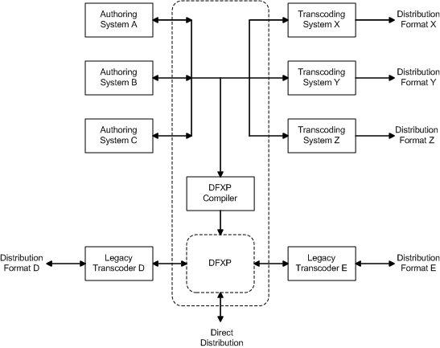

1 Introduction
Unless specified otherwise, this section and its sub-sections are non-normative.
The Timed Text Markup Language (TTML), Version 2, also referred to as TTML2, provides a standardized representation of a particular subset of textual information with which stylistic, layout, and timing semantics are associated by an author or an authoring system for the purpose of interchange and processing.
TTML is expressly designed to meet only a limited set of requirements established by [TTAF1-REQ], and summarized in I Requirements. In particular, only those requirements which service the need of performing interchange with existing, legacy distribution systems are satisfied.
In addition to being used for interchange among legacy distribution content
formats, TTML Content may be used directly as a distribution format, providing, for
example, a standard content format to reference from a <track>
element in an HTML5 document, or a <text> or
<textstream> media element in a [SMIL 3.0] document. Certain properties of TTML support
streamability of content, as described in L Streaming TTML Content.
Note:
While TTML is not expressly designed for direct (embedded) integration into an HTML or a SMIL document instance, such integration is not precluded.
Note:
In some contexts of use, it may be appropriate to employ animated content to depict sign language representations of the same content as expressed by a Timed Text document instance. This use case is not explicitly addressed by TTML mechanisms, but may be addressed by some external multimedia integration technology, such as SMIL.
Note:
In previous drafts of this specification, TTML was referred to as DFXP (Distribution
Format Exchange Profile). This latter term is retained for historical reasons in
certain contexts, such as profile names and designators, and the short name
ttaf1-dfxp used in URLs to refer to this specification.
1.1 System Model
Use of TTML is intended to function in a wider context of Timed Text Authoring and Distribution mechanisms that are based upon the system model depicted in Figure 1 – System Model, wherein the Timed Text Markup Language serves as a bidirectional interchange format among a heterogeneous collection of authoring systems, and as a unidirectional interchange format to a heterogeneous collection of distribution formats after undergoing transcoding or compilation to the target distribution formats as required, and where one particular distribution format is TTML (labeled as "DFXP" in the figure).
|  |
1.2 Document Example
A TTML document instance consists of a tt document element that contains
a header and a body, where the header specifies document level metadata, styling
definitions and layout definitions, and the body specifies text content intermixed
with references to style and layout information and inline styling and timing information.
<tt xml:lang="" xmlns="http://www.w3.org/ns/ttml">
<head>
<metadata/>
<styling/>
<layout/>
</head>
<body/>
</tt>
|
Document level metadata may specify a document title, description, and copyright information. In addition, arbitrary metadata drawn from other namespaces may be specified.
<metadata xmlns:ttm="http://www.w3.org/ns/ttml#metadata"> <ttm:title>Timed Text TTML Example</ttm:title> <ttm:copyright>The Authors (c) 2006</ttm:copyright> </metadata> |
Styling information may be specified in the form of style specification definitions that are referenced by layout and content information, specified inline with content information, or both.
In Example Fragment – TTML Styling, four style sets of specifications are defined, with one set serving as a collection of default styles.
<styling xmlns:tts="http://www.w3.org/ns/ttml#styling">
<!-- s1 specifies default color, font, and text alignment -->
<style xml:id="s1"
tts:color="white"
tts:fontFamily="proportionalSansSerif"
tts:fontSize="22px"
tts:textAlign="center"
/>
<!-- alternative using yellow text but otherwise the same as style s1 -->
<style xml:id="s2" style="s1" tts:color="yellow"/>
<!-- a style based on s1 but justified to the right -->
<style xml:id="s1Right" style="s1" tts:textAlign="end" />
<!-- a style based on s2 but justified to the left -->
<style xml:id="s2Left" style="s2" tts:textAlign="start" />
</styling>
|
Layout information defines one or more regions into which content
is intended to be presented. A region definition may reference one or
more sets of style specifications in order to permit content flowed in the
region to inherit from these styles.
In Example Fragment – TTML Layout, the region definition makes
reference to style specification s1 augmented by specific inline
styles which, together, allow content flowed into the region to inherit
from the region's styles (in the case
that a style is not already explicitly specified on content or inherited
via the content hierarchy.)
<layout xmlns:tts="http://www.w3.org/ns/ttml#styling">
<region xml:id="subtitleArea"
style="s1"
tts:extent="560px 62px"
tts:padding="5px 3px"
tts:backgroundColor="black"
tts:displayAlign="after"
/>
</layout>
|
The content of a document instance is expressed in its
body, which is organized in terms of block and inline text elements.
The hierarchical organization of content elements serves a primary role in
determining both spatial and temporal relationships. For example, in
Example Fragment – TTML Body, each paragraph (p element)
is flowed into its target region in the specified lexical order; furthermore,
the active time interval of each paragraph is timed in accordance to its
parent or sibling according to the applicable time containment semantics —
in this case, the division parent is interpreted (by default) as a parallel time
container.
<body region="subtitleArea">
<div>
<p xml:id="subtitle1" begin="0.76s" end="3.45s">
It seems a paradox, does it not,
</p>
<p xml:id="subtitle2" begin="5.0s" end="10.0s">
that the image formed on<br/>
the Retina should be inverted?
</p>
<p xml:id="subtitle3" begin="10.0s" end="16.0s" style="s2">
It is puzzling, why is it<br/>
we do not see things upside-down?
</p>
<p xml:id="subtitle4" begin="17.2s" end="23.0s">
You have never heard the Theory,<br/>
then, that the Brain also is inverted?
</p>
<p xml:id="subtitle5" begin="23.0s" end="27.0s" style="s2">
No indeed! What a beautiful fact!
</p>
<p xml:id="subtitle6a" begin="28.0s" end="34.6s" style="s2Left">
But how is it proved?
</p>
<p xml:id="subtitle6b" begin="28.0s" end="34.6s" style="s1Right">
Thus: what we call
</p>
<p xml:id="subtitle7" begin="34.6s" end="45.0s" style="s1Right">
the vertex of the Brain<br/>
is really its base
</p>
<p xml:id="subtitle8" begin="45.0s" end="52.0s" style="s1Right">
and what we call its base<br/>
is really its vertex,
</p>
<p xml:id="subtitle9a" begin="53.5s" end="58.7s">
it is simply a question of nomenclature.
</p>
<p xml:id="subtitle9b" begin="53.5s" end="58.7s" style="s2">
How truly delightful!
</p>
</div>
</body>
|
The first subtitle Subtitle 1 – Time Interval [0.76, 3.45) is
presented during the time interval 0.76 to 3.45 seconds.
This
subtitle inherits its font family, font size,
foreground color, and text alignment from the region into which it is
presented. Since no region is explicitly specified on the paragraph,
the nearest ancestor that specifies a region determines the
targeted region. Note also that content is presented
at the bottom (after edge) of the containing region due to the tts:displayAlign="after"
being specified on the region definition.
Note:
The notation "[X,Y]" denotes a closed interval from X to Y, including X and Y; "[X,Y)" denotes a right half-open interval from X to Y, including X but not including Y; "(X,Y]" denotes a left half-open interval from X to Y, not including X but including Y; "(X,Y)" denotes an open interval from X to Y, not including X or Y.
Note:
In this example, the p element is used as a presentational
element rather than as a semantic element, i.e., as a linguistic paragraph.
It is up to an author to determine which TTML elements are used to convey
the intended meaning. For instance, this example could be written to use
timing on span elements in order to preserve the integrity of
semantic paragraphs.
 |
The second subtitle continues with the default style, except that it contains
two lines of text with an intervening author-specified line break. Note the effects of
the use of tts:textAlign="center" to specify the paragraph's alignment
in the inline progression direction.
 |
The third subtitle continues, using a variant style which overrides the default style's foreground color with a different color.
 |
The fourth subtitle reverts to the default style.
 |
The fifth subtitle continues, again using a variant style which overrides the default style's foreground color with a different color.
 |
During the next active time interval, two distinct subtitles are simultaneously active, with the paragraphs expressing each subtitle using different styles that override color and paragraph text alignment of the default style. Note that the flow order is determined by the lexical order of elements as they appear in the content hierarchy.
 |
The next subtitle is specified in a similar manner using a style override to give the paragraph right (end) justification in the inline progression direction.
 |
The eighth subtitle uses the same style override as the previous subtitle in order to maintain the right (end) justification of the paragraph.
 |
During the final (ninth) active time interval, two distinct subtitles are again simultaneously active, but with a different style applied to the second paragraph to override the default color. Note that the flow order is determined by the lexical order of elements as they appear in the content hierarchy.
 |
The examples shown above demonstrate the primary types of information that may be authored using TTML: metadata, styling, layout, timing, and content. In typical cases, styling and layout information are separately specified in a document instance. Content information is expressed in a hierarchical fashion that embodies the organization of both spatial (flow) and timing information. Content makes direct or indirect references to styling and layout information and may specify inline overrides to styling.
2 Definitions
2.1 Acronyms
| DFXP | Distribution Format Exchange Profile |
| TT | Timed Text |
| TTML | Timed Text Markup Language |
| TTAF | Timed Text Authoring Format |
| TTWG | Timed Text Working Group |
2.2 Terminology
- [abstract document instance]
An instance of an abstract data set as represented by a reduced xml infoset.
- [abstract document type]
A set of constraints that defines a class of XML Information Sets [XML InfoSet].
- [anonymous profile]
See undesignated profile.
- [attribute information item]
Each specified or defaulted attribute of an XML document corresponds with an attribute information item as defined by [XML InfoSet], §2.3.
- [character information item]
Each data character appearing in an XML document corresponds with a character information item as defined by [XML InfoSet], §2.6.
- [computed cell size]
The size (extent) of a cell computed by dividing the width of the root container region by the column count, i.e., the number of cells in the horizontal axis, and by dividing the height of the root container region by the row count, i.e., the number of cells in the vertical axis, where the column and row counts are determined by the
ttp:cellResolutionparameter attribute.- [content element]
Any of the element types defined by the Content Module.
- [content processor]
A processing system capable of importing (receiving) Timed Text Markup Language content for the purpose of transforming, presenting, or otherwise processing the content.
- [content profile]
A collection of features and extensions that must, may, or must not be employed by Timed Text Markup Language content.
Editorial note: Content Profile 2013-08-23 Need to update and elaborate definition of content profile based on new profiling mechanisms. - [content region]
A logical region into which rendered content is placed when modeling or performing presentation processing.
- [designated profile]
A profile that is associated with a profile designator by means of a
designatorattribute or prose text in a specification of profile.- [document instance]
A concrete realization of a Timed Text Markup Language document, where the concrete form is specific to the context of reference. For example, a sequence of bytes that represents an XML serialization of a Timed Text document, an internal, parsed representation of such a Timed Text document, etc.
- [document interchange context]
The implied context or environment external to a content processor in which document interchange occurs, and in which out-of-band protocols or specifications may define certain behavioral defaults, such as an implied profile.
- [document processing context]
The implied context or environment internal to a content processor in which document processing occurs, and in which out-of-band protocols or specifications may define certain behavioral defaults, such as the establishment or creation of a synthetic document syncbase.
- [element information item]
Each element appearing in an XML document corresponds with an element information item as defined by [XML InfoSet], §2.2.
- [exchange profile]
A profile of content that serves a set of needs for content interchange.
- [extension]
A syntactic or semantic expression or capability that is defined and labeled (using a extension designation) in another (public or private) specification.
- [feature]
A syntactic or semantic expression or capability that is defined and labeled (using a feature designation) in this specification (or a past or future revision of this specification).
- [fragment identifier]
A syntactic expression that adheres to the fragment identifer syntax defined by [URI], Section 4.1.
- [implied inline region]
An anonymous (unidentified) inline region that is implied in the context of a block level content element due the presence of a
tts:extentortts:originstyle attribute on the content element.- [inline animation]
An
animateorsetelement that is defined inline as an immediate child of a content element orregionelement targetted by the animation. There is a one-to-one relation between an inline animation element and its parent content element orregionelement. An inline animation does not specify anxlink:hrefattribute.- [inline region]
A
regionelement that is defined inline as an immediate child of a content element to be selected into (targetted to) the region. There is a one-to-one relation between an inlineregionelement and its parent content element. An inline region is assigned its parent element's time interval as its active time interval. Noregionattribute makes reference to an inline region.- [out-of-line animation]
An
animateorsetelement that is defined out-of-line from the content element orregionelement targetted by the animation. An out-of-line animation appears as a child of ananimationelement in the header (headelement) of a document instance, and specifies anxlink:hrefattribute that associates it with the element to be animated. There is a one-to-one relation between an out-of-line animation element and a content element orregionelement.- [out-of-line region]
A
regionelement that is defined out-of-line from the content element(s) to be selected into (targetted to) the region. An out-of-line region appears as a child of alayoutelement in the header (headelement) of a document instance, and specifies anxml:idattribute in order to allow content elements to be associated with the region by means of aregionattribute. There is a one-to-many relationship between an out-of-line region and the content element(s) to be selected into (targetted to) the region.- [presentation processor]
A content processor which purpose is to layout, format, and render, i.e., to present, Timed Text Markup Language content by applying the presentation semantics defined in this specification.
- [processor]
See content processor.
- [processor profile]
A collection of features and extensions that must or may be implemented (supported) by a content processor.
Editorial note: [processor profile] 2013-08-23 Need to update and elaborate definition of processor profile based on new profiling mechanisms. - [profile]
- [profile definition document]
A document that formally specifies a profile, where such document is a valid TTML document instance which has a root element type of
ttp:profile.- [profile designator]
An absolute URI used to label or reference an externally defined profile, where external refers to being external to a document instance.
- [profile fragment identifier]
A fragment identifier used to label or reference an internally defined profile, where internal refers to being internal to a document instance.
- [region]
A logical construct that models authorial intention regarding desired or potential presentation processing, and which is represented as a rectangular area of a presentation surface into which content is composed and rendered during presentation processing.
- [reduced xml infoset]
An XML Information Set [XML InfoSet] that satisfies the constraints specify by A Reduced XML Infoset.
- [related media object]
A (possibly null) media object associated with or otherwise related to a document instance. For example, an aggregate audio/video media object for which a document instance provides caption or subtitle information, and with which that document instance is associated.
- [related media object region]
When a non-null related media object exists, the region of this media object, expressed in the coordinate system that applies to the document instance that is associated with the related media object.
- [root container region]
A logical region that establishes a coordinate system into which content regions are placed and optionally clipped.
- [root temporal extent]
The temporal extent (interval) defined by the temporal beginning and ending of a document instance in relationship with some external application or presentation context.
- [smpte time code]
A time code whose format and semantics are established by [SMPTE 12M], which may be embedded into or otherwise associated with media content, such as a broadcast audio/video stream.
- [synthetic document syncbase]
A document level syncbase [SMIL 3.0], § 5.7.1, synthesized or otherwise established by the document processing context in accordance with the related media object or other processing criteria.
- [synthetic smpte document syncbase]
A synthetic document syncbase constructed from smpte time code values embedded in or associated with the related media object or otherwise determined by the document processing context.
- [timed text]
Textual information that is intrinsically or extrinsically associated with timing information.
- [timed text markup language]
A content type that represents timed text media for the purpose of interchange among authoring systems.
- [timed text authoring system]
A content authoring system capable of importing and exporting Timed Text Markup Language content.
- [transformation processor]
A content processor which purpose is to transform or otherwise rewrite Timed Text Markup Language content to either Timed Text Markup Language or to another (arbitrary) content format. An example of the first is a processor that removes or rewrites TTML features so as to conform to a profile of TTML. An example of the latter is a processor that translates TTML into a completely different timed text format. Because this specification does not otherwise define a target profile or format for transformation processing, no further transformation semantics are defined by this specification.
- [undesignated profile]
A profile that is not associated with a profile designator, and which is referred to implicitly in the context of the profile's definition. Also referred to as an anonymous profile.
- [valid abstract document instance]
An abstract document instance which has been assessed for validity and found to be valid as defined by 4 Document Types.
2.3 Documentation Conventions
Within normative prose in this specification, the words may, should, and must are defined as follows:
- may
Conforming documents and/or TTML processors are permitted to, but need not behave as described.
- should
Conforming documents and/or TTML processors are strongly recommended to, but need not behave as described.
- must
Conforming documents and/or TTML processors are required to behave as described; otherwise, they are in error.
If normative specification language takes an imperative form, then it is to be treated as if the term must applies. Furthermore, if normative language takes a declarative form, and this language is governed by must, then it is also to be treated as if the term must applies.
Note:
For example, the phrases "treat X as an error" and "consider X as an error" are to be read as mandatory requirements in the context of use. Similarly, if the specification prose is "X must apply", "X applies", or "X is mandatory", and "X" is further defined as "X is Y and Z", then, by transitive closure, this last declarative phrase is to be read as "Y is mandatory" and "Z is mandatory" in the context of use.
All normative syntactic definitions of XML representations and other related terms are depicted with a light yellow-orange background color and labeled as "XML Representation" or "Syntax Representation", such as in the following:
<example
count = integer
size = (large|medium|small) : medium>
Content: (all | any*)
</example>
|
In an XML representation, bold-face attribute names (e.g. count above) indicate a required attribute
information item, and the rest are optional. Where an attribute
information item has an enumerated type definition, the values are
shown separated by vertical bars, as for size above; if
there is a default value, it is shown following a colon. Where an
attribute information item has a built-in simple type definition
defined in [XML Schema Part 2], a hyperlink to its definition
therein is given.
The allowed content of the information item is shown as a grammar
fragment, using the Kleene operators ?, *
and +. Each element name therein is a hyperlink to its
own illustration.
The term linear white-space (LWSP) is to be interpreted as a non-empty sequence of
SPACE (U+0020), TAB (U+0009), CARRIAGE RETURN (U+000D), or LINE FEED (U+000A),
which corresponds to production [3] S as defined by [XML 1.0].
All content of this specification that is not explicitly marked as non-normative is considered to be normative. If a section or appendix header contains the expression "Non-Normative", then the entirety of the section or appendix is considered non-normative.
All paragraphs marked as a Note are considered non-normative.
Example code fragments are depicted with a light blue-green background color and labeled as "Example Fragment", such as in the following:
<tt xml:lang="" xmlns="http://www.w3.org/ns/ttml">
<head>
<metadata/>
<styling/>
<layout/>
</head>
<body/>
</tt>
|
3 Conformance
This section specifies the general conformance requirements for TTML Content and processors.
3.1 Content Conformance
A TTML document instance conforms to this specification if the following criteria are satisfied:
When transporting a document instance in a document interchange context in which a Media Type [Media Types] identifies the content type of the interchanged document instance, then the specified media type is
application/ttml+xmlin conformance with [XML Media Types] § 7, with which an optionalprofileparameter may appear, the value of which conforms to a profile designator as defined by 5.2 Profiles.The document instance is or can be represented as a reduced xml infoset as defined by A Reduced XML Infoset.
The reduced xml infoset that corresponds to the document instance is or can be associated with one of the abstract document types defined by 4 Document Types.
The reduced xml infoset that corresponds to the document instance is a valid abstract document instance of the associated abstract document type.
The reduced xml infoset satisfies all additional mandatory syntactic and semantic constraints defined by this specification. In addition, this Infoset should satisfy the web content accessibility guidelines specified by [WCAG].
3.2 Processor Conformance
3.2.1 Generic Processor Conformance
A TTML content processor conforms to this specification if the following generic processor criteria are satisfied:
The processor provides at least one mechanism for notionally instantiating a reduced xml infoset representation of a conformant document instance.
If a processor does or can perform validation of a candidate document instance, then it provides at least one mechanism to implicitly or explicitly associate the reduced xml infoset representation of a conformant document instance with one of the Abstract Document Types defined by 4 Document Types.
The processor does not a priori reject or abort the processing of a conformant document instance unless the processor does not support some required (mandatory) feature specified or implied by a TTML profile declared to apply to the document instance.
The processor supports all mandatory processing semantics defined by this specification.
Note:
The phrase mandatory semantics refers to all explicit use of the conformance key phrases must and must not as well as any declarative statement that can be reasonably inferred from such key phrases. For example, these mandatory semantics include support for all features marked as mandatory in D.2 Feature Support.
If the processor supports some optional processing semantics defined by this specification, then it does so in a manner consistent with the defined semantics.
Note:
The phrase optional semantics refers to all explicit use of the conformance key phrases should, should not, may, and may not, as well as any declarative statement that can be reasonably inferred from such key phrases. For example, these optional semantics include support for all features marked as optional in D.2 Feature Support.
3.2.2 Transformation Processor Conformance
A TTML content processor is a conformant TTML transformation processor if the following criteria are satisfied:
The processor satisfies all requirements specified by 3.2.1 Generic Processor Conformance.
The processor supports the TTML Transformation profile as specified by F.1 TTML2 Transformation Profile.
3.2.3 Presentation Processor Conformance
A TTML content processor is a conformant TTML presentation processor if the following criteria are satisfied:
The processor satisfies all requirements specified by 3.2.1 Generic Processor Conformance.
The processor supports the TTML Presentation profile as specified by F.2 TTML2 Presentation Profile.
3.3 Claims
Any claim of compliance with respect to the conformance of a TTML document instance or content processor must make reference to an implementation compliance statement (ICS).
An implementation compliance statement must identify all mandatory and optional features of this specification that are satisfied by the document instance or the content processor implementation. In particular, the statement must identify the utilized or supported TTML vocabulary profile(s) as defined by 5.2 Profiles, and, if a subset or superset profile is used or supported, then what features are excluded or included in the subset or superset profile.
A document instance for which a compliance claim is made
must specify
either (1)
a ttp:profile attribute on its root
tt
element
as defined by 6.2.9 ttp:profile
or (2)
a ttp:profile element as a child of the
head element as defined by
6.1.1 ttp:profile. In addition, it must specify a
ttp:version attribute on its root tt element if it requires
support for a feature not defined by [TTML1].
4 Document Types
This section defines the following TTML Abstract Document Types:
Each abstract document type consists of the following constraints:
a non-empty collection of element types, where each element type consists of a name, a (possibly empty) collection of attributes, and a content specification
a non-empty collection of element types that may appear as the document element
An abstract document instance may be assessed in terms of validity, and is considered to be a valid abstract document instance if it satisfies the following condition: if after
pruning all element information items whose names are not members of the collection of element types defined by the associated abstract document type, then
pruning character information item children from any remaining element in case that all character children of the element denote XML whitespace characters and the element's type is defined as empty in the associated abstract document type, and then
pruning all attribute information items having expanded names such that the namespace URI of the expanded names are not listed in Table 1 – Namespaces,
then the document element is one of the document element types permitted by the associated abstract document type, the descendants of the document element satisfy their respective element type's content specifications, all required attributes are present, and the declared value of each attribute satisfies the type declared by the associated abstract document type.
Note:
While a conformant processor may not a priori reject a conformant document instance, a given document instance may be constrained by the author or authoring tool to satisfy a more restrictive definition of validity.
4.1 TTML Content
TTML Content is an abstract document type of a profile of the Timed Text Markup Language intended to be used for interchange among distribution systems. This document type is defined in terms of the element and attribute vocabulary specified in 5 Vocabulary.
This specification references two types of schemas that may be used to validate a superset/subset of conformant TTML Content document instances:
The (root) document element of a TTML Content document instance must be a
tt element, as defined by 7.1.1 tt.
Note:
The schemas referenced by this specification do not validate all syntactic constraints
defined by this specification, and, as such, represent a superset of conformant
TTML Content. In particular, performing validation with one of the above
referenced schemas may result in a false positive indication of validity.
For example, both the RNC and XSD schemas specify
that a tts:fontFamily attribute must
satisfy the xs:string XSD data type; however, this data type is a superset
of the values permitted to be used with the tts:fontFamily attribute.
In addition, the RNC schema may produce a false negative
indication of validity when using the xml:id attribute with an element in
a foreign namespace, thus representing a subset of conformant TTML Content. This is
due to a specific limitation in expressing wildcard patterns involving xsd:ID
typed attributes in Relax NG schemas. Note that this specification defines the
formal validity of a document instance to be based on an abstract document instance from
which all foreign namespace elements and attributes have been removed. Therefore, the
exceptional reporting of this false negative does not impact the formal assessment
of document instance validity.
5 Vocabulary
This section defines the namespaces, profiles, and vocabulary (as an element and attribute catalog) of the Timed Text Markup Language (TTML) as follows:
5.1 Namespaces
The Timed Text Markup Language (TTML) employs a number of XML Namespaces [XML Namespaces 1.0] for elements and certain global attributes. The following table specifies this set of namespaces and indicates the default prefix used within this specification and the normative URI that denotes each namespace.
Note:
In a specific document instance, it is not required that the default prefixes shown below are used. Any prefix or namespace binding that satisfies the constraints of XML Namespaces [XML Namespaces 1.0] may be used that is associated with the specified namespace URI.
| Name | Prefix | Value |
|---|---|---|
| TT | tt: | http://www.w3.org/ns/ttml |
| TT Parameter | ttp: | http://www.w3.org/ns/ttml#parameter |
| TT Style | tts: | http://www.w3.org/ns/ttml#styling |
| TT Metadata | ttm: | http://www.w3.org/ns/ttml#metadata |
| TT Profile | none | http://www.w3.org/ns/ttml/profile/ |
| TT Feature | none | http://www.w3.org/ns/ttml/feature/ |
| TT Extension | none | http://www.w3.org/ns/ttml/extension/ |
Note:
If a reference to an element type is used in this specification and the name of the element type is not namespace qualified, then the TT Namespace applies.
For certain namespaces defined above, the default prefix is specified as none if no XML vocabulary is defined in the namespace by this specification (nor expected to be defined in a future version of this specification). In such cases, the use of the namespace URI is for purposes other than defining XML vocabulary, e.g., for designating profiles, features, extensions and for dereferencing standard profile definitions.
All TTML Namespaces are mutable [NSState]; all undefined names in these namespaces are reserved for future standardization by the W3C.
5.2 Profiles
This section describes the TTML profiling sub-system and high level requirements that apply to this sub-system. At the end of this section appears a sub-section containing examples of profile specifications and examples of how these specifications are referenced and used.
5.2.1 Introduction
This sub-section is non-normative.
A given profile may be used by a Timed Text Markup Language content author for one of two functions: (1) to declare that a document instance adheres to a collection of constraints on what vocabulary is used and how it is used, or (2) to declare that a processor must satisfy certain conditions on how content is processed. The first of these functions is termed a content profile, while the second is termed a processor profile.
A content profile is generally used to allow an author to declare, at authoring time, what constraints the author intends to apply to a document instance. Such a declaration permits downstream processors to perform content validation or verification, as well as to guide or limit subsequent transformation or editing of content in order to maintain adherence to an author specified content profile. In addition, a downstream processor may use a content profile declaration to perform an early determination of its ability to process the features implied by the content profile.
A processor profile is generally used to allow an author to declare, at authoring time, what processing must be supported when processing a document instance, such that, if a processor is not able to perform the indicated processing, then processing should be aborted. Such a declaration permits downstream processors to avoid processing content that cannot be processed in a manner that meets the requirements of the content author.
A content author is not limited to using a single profile, but may make reference to multiple profiles of either type, i.e., multiple content profiles and/or multiple processor profiles. When multiple profiles are referenced, their respective specifications are combined to form a single effective content profile that applies to the document and a single effective processor profile that applies to a processor when processing the document. In addition, an author is not limited to making reference to externally defined profiles, but may define one or more profiles inline within a document.
5.2.2 Profile Designators
A profile is referenced in one of two ways according to whether the profile is defined externally to the referring document or is defined inline within the referring document. When defined externally, a profile is referenced by means of a profile designator. When defined internally (inline), a profile is referenced either implicitly or by means of profile fragment identifier.
A profile designator must adhere to the
xsd:anyURI data type defined by [XML Schema Part 2],
§3.2.17. If the profile designator is expressed as a relative URI,
then it must be absolutized by using the TT Profile Namespace value as
the base URI.
Note:
For example, if a profile designator is expressed as
ttml2-presentation, then the absolutized profile designator
would be
http://www.w3.org/ns/ttml/profile/ttml2-presentation.
All profile designators which have the TT Profile Namespace as a prefix but are otherwise not listed in Table 2 – Profiles are reserved for future standardization, and must not appear in a conformant document instance. Nothwithstanding this constraint, a profile designator is not restricted to the set of designators enumerated in Table 2 – Profiles, but may be any URI that feasibly dereferences a TTML profile definition document provided it does not use the TT Profile Namespace as a prefix.
5.2.2.1 Standard Designators
The Timed Text Markup Language (TTML) employs a number of standard, predefined profiles of its vocabulary and associated semantics.
The following table specifies this set of profiles, indicating a normative name and designator for each predefined profile, and where each of these profiles is formally elaborated in F Profiles, in [TTML1], or in another TTWG specification.
| Name | Designator |
|---|---|
| DFXP Transformation | http://www.w3.org/ns/ttml/profile/dfxp-transformation |
| DFXP Presentation | http://www.w3.org/ns/ttml/profile/dfxp-presentation |
| DFXP Full | http://www.w3.org/ns/ttml/profile/dfxp-full |
| SDP US | http://www.w3.org/ns/ttml/profile/sdp-us |
| TTML2 Transformation | http://www.w3.org/ns/ttml/profile/ttml2-transformation |
| TTML2 Presentation | http://www.w3.org/ns/ttml/profile/ttml2-presentation |
| TTML2 Full | http://www.w3.org/ns/ttml/profile/ttml2-full |
5.2.3 Profile Semantics
5.2.3.3 Processor Profile Semantics
The profile of TTML that must be supported by a
TTML content processor in order to process a document instance is determined either (1) by specifying a
ttp:profile attribute on the root tt element, as
defined by 6.2.9 ttp:profile, or (2) by
including one or more ttp:profile
elements in the head element, in
accordance with 6.1.1 ttp:profile.
If a ttp:profile element appears as a
descendant of the tt element, then the ttp:profile
attribute should not be specified on the tt element. If both
a ttp:profile element and a ttp:profile
attribute are present (in a given document instance), then the
ttp:profile attribute must be ignored for the purpose of
determining the declared profile requirements.
| Editorial note: Profile Combination Semantics | 2013-09-05 |
Need to incorporate affects of ttp:profileCombination parameter into the following paragraph. | |
If more than one ttp:profile element appears in
a document instance, then all specified profiles apply
simultaneously. In such a case, if some feature or some extension is
specified by one profile to be used (mandatory and enabled) and by
another profile to be required (mandatory) or optional (voluntary),
then that feature or extension must be considered to be used
(mandatory and enabled); if some feature or some extension is
specified by one profile to be merely required (mandatory) and by
another profile to be optional (voluntary), then that feature or
extension must be considered to be required (mandatory).
If neither
ttp:profile
attribute nor
ttp:profile
element is present in a document instance, and if the document
interchange context
does not make an implicit or explicit
reference to a pre-defined profile or does not specify a Profile Definition
Document or another equivalent set of feature designations,
then the TTML Transformation profile applies.
Note:
It is not a requirement on a conformant document instance that a profile be internally
defined by use of a ttp:profile element or internally referenced by a
ttp:profile attribute. More specifically, it is permitted that the document
interchange context determines the applicable profile through private
agreement, out-of-band protocol, or common use (between sender and receiver) of a profile defined
by an external specification.
Note:
It is intended that the ttp:profile attribute be used when
the author wishes to reference one of the standard, predefined profiles of
TTML Content, and does not wish to modify (by supersetting or subsetting)
that profile. This attribute may also be used by an author to indicate the use
of a non-standard profile, in which case the specified profile designator expresses
a URI that denotes an externally defined profile definition document.
However, it is not required that a conformant TTML content processor be able
to dereference such an externally specified profile definition.
In contrast, it is intended that the ttp:profile element be
used when the author wishes to make use of a modified predefined profile or
wishes to include in the document instance a non-standard profile definition
not based upon one of the predefined profiles.
A predefined profile is supersetted by specifying some feature or extension to
be required (mandatory) that was either not specified in the underlying, baseline
profile or was specified as optional (voluntary) in the baseline profile.
A predefined profile is subsetted by specifying some feature or extension to
be optional (voluntary) that was specified as required (mandatory)
in the underlying, baseline profile.
When a baseline profile is modified by subsetting, the resulting, derived profile is referred to as a subtractive profile; when modified by supersetting, the result is referred to as an additive profile. It is also possible to define a derived profile that is simultaneously subtractive and additive.
If a document instance makes use of a feature defined by D.1 Feature Designations and if the intended use of the document requires the recognition and processing of that feature, then the document must include a required feature or a used feature specification in one of its declared or referenced profiles. If a document instance makes use of an extension designatable by E.1 Extension Designations and if the intended use of the document requires the recognition and processing of that extension, then the document must include a required extension or a used extension specification in one of its declared or referenced profiles.
Note:
A required feature or used feature
specification is expressed directly (or indirectly by referring to a
profile) by means of a ttp:feature
element where the value of its value attribute is
required or use,
respectively. A required extension or used
extension specification is expressed directly (or indirectly by
referring to a profile) by means of a ttp:extension
element where the value of its value attribute is
required or use,
respectively.
5.2.4 Profile Examples
An example of an author defined additive, derived profile of the TTML Presentation profile is shown below in Example Fragment – TTML Additive Profile.
<tt xml:lang="" xmlns="http://www.w3.org/ns/ttml">
<head>
<profile use="ttml2-presentation" xmlns="http://www.w3.org/ns/ttml#parameter">
<features xml:base="http://www.w3.org/ns/ttml/feature/">
<feature value="required">#fontStyle-italic</feature>
</features>
</profile>
</head>
<body/>
</tt>
|
Note:
In the above example, the baseline profile is declared to be
the TTML Presentation profile, which is then additively modified by making the
#fontStyle-italic feature required (rather than
optional as it is defined
in F.2 TTML2 Presentation Profile). Note also the resetting of the
default XMLNS binding on the profile element to the TT Parameter Namespace.
5.3 Catalog
The vocabulary of the Timed Text Markup Language (TTML) is defined in the following major catalogs (divisions of vocabulary):
The core catalog defines the baseline, core vocabulary of TTML, and, in particular, the vocabulary of TTML Content. The extension catalog serves as a placeholder for extensions to the core vocabulary defined by TTML.
5.3.1 Core Catalog
The core vocabulary catalog is intended to satisfy the needs of TTML while providing a baseline vocabulary for future profiles. This vocabulary is divided into distinct categories, specified in detail in the following sections:
The core element vocabulary specified for use with a document instance is enumerated in Table 3 – Element Vocabulary.
| Module | Elements |
|---|---|
| Animation | animate, animation, set |
| Content | body, div, p, span, br |
| Document | tt |
| Head | head |
| Layout | layout, region |
| Metadata | metadata |
| Metadata Items | ttm:actor, ttm:agent, ttm:copyright, ttm:desc, ttm:name, ttm:title |
| Parameter Items | ttp:profile, ttp:features, ttp:feature, ttp:extensions, ttp:extension |
| Styling | styling, style |
Element vocabulary groups that are used in defining content models for TTML element types are enumerated in Table 4 – Element Vocabulary Groups.
| Group | Elements |
|---|---|
| Animation.class | animate | set |
| Block.class | div | p |
| Inline.class |
span |
br |
#PCDATA
|
| Layout.class | region |
| Metadata.class | metadata | ttm:agent | ttm:copyright | ttm:desc | ttm:title |
| Parameters.class | ttp:profile |
The attribute vocabulary specified for use with the core vocabulary catalog is enumerated in Table 5 – Attribute Vocabulary.
| Module | Attributes |
|---|---|
| Core Attributes | xml:id, xml:lang, xml:space |
| Layout | region |
| Metadata Attributes | ttm:agent, ttm:role |
| Parameter Attributes | ttp:cellResolution, ttp:clockMode, ttp:contentProfile, ttp:dropMode, ttp:frameRate, ttp:frameRateMultipler, ttp:markerMode, ttp:pixelAspectRatio, ttp:profile, ttp:profileCombination, ttp:subFrameRate, ttp:tickRate, ttp:timeBase, ttp:version |
| Styling | style |
| Styling Attributes | tts:backgroundColor, tts:border, tts:color, tts:direction, tts:display, tts:displayAlign, tts:extent, tts:fontFamily, tts:fontSize, tts:fontStyle, tts:fontWeight, tts:lineHeight, tts:opacity, tts:origin, tts:overflow, tts:padding, tts:showBackground, tts:textAlign, tts:textDecoration, tts:textOrientation, tts:textOutline, tts:unicodeBidi, tts:visibility, tts:wrapOption, tts:writingMode, tts:zIndex |
| Timing Attributes | begin, dur, end, timeContainer |
Note:
Only those attributes defined as either (1) global, i.e., namespace qualified, or (2) shared element-specific, i.e., not namespace qualified but shared across multiple element types, are listed in Table 5 – Attribute Vocabulary above.
Note:
All vocabulary defined by TTML consistently makes use of the so-called lowerCamelCase naming convention. In some cases, this results in the change of a name when the name was based upon another specification that used a different naming convention.
5.3.2 Extension Catalog
The extension vocabulary catalog is intended for use by future profiles of TTML, and is not further defined by this version of this specification.
In addition to standardized extension vocabulary, a conforming document instance may contain arbitrary namespace qualified elements that reside in any namespace other than those namespaces defined for use with this specification. Furthermore, a conforming document instance may contain arbitrary namespace qualified attributes on TTML defined vocabulary where such attributes reside in any namespace other than those defined for use with this specification.
6 Parameters
This section specifies the parameters matter of the core vocabulary catalog, where parameters are to be understood as information that is either (1) essential or (2) of significant importance for the purpose of interpreting the semantics of other types of information expressed by core vocabulary items or for establishing a document processing context by means of which TTML Content can be related to an external environment.
6.1 Parameter Element Vocabulary
The following elements, all defined in the TT Parameter Namespace, specify parametric information that applies to a document instance or content processor:
6.1.1 ttp:profile
The ttp:profile element is used to specify a
processor profile or a
content profile.
A processor profile specifies a
collection of required (mandatory) and optional (voluntary) features and extensions that must or
may be supported by a content processor in order to process a
document instance that makes (or may make) use of such features and
extensions.
A content profile specifies a
collection of required, optional, and prohibited features and extensions that, respectively,
must, may, and must not be present in a document instance that declares its
adherence to the profile.
Note:
The difference between a feature and an extension is where it is defined and how it is labeled: if defined in this specification (or a future revision thereof) and labeled with a feature designation in D Features, then it is considered to be a feature; if defined in another specification and labeled there with an extension designation, then it is considered to be an extension. In general, features are expected to be defined by the W3C standards process, while extensions are expected to be defined by third parties.
This specification defines two distinct contexts of use of the ttp:profile element:
as a child of the
headelement within a TTML document instance;as the root element of a TTML profile definition document instance;
When a ttp:profile element appears within a TTML document instance,
its purpose is to express authorial intentions about which
features and extensions must or may be supported by a recipient
content processor, as well as which features and extensions must
not be included or otherwise used in a document instance.
In addition, the element indirectly expresses
information about the set of features or extensions that are (or may
expected to be) used by the document instance.
When a ttp:profile element is used by a TTML profile definition document instance,
it serves to publish a machine
readable specification of a specific TTML profile, of which
this specification defines three such Profile Definition Documents in
F Profiles.
The ttp:profile element accepts as its children zero or more
elements in the Metadata.class element group, followed by
zero or more ttp:features elements, followed by
zero or more ttp:extensions elements.
<ttp:profile combine = (replace|union|intersection) : replace designator = string type = (processor|content) : processor use = string xml:id = ID {any attribute not in default or any TT namespace}> Content: Metadata.class*, ttp:features*, ttp:extensions* </ttp:profile> |
The type attribute is used to determine whether a profile is a
processor profile or a
content profile. If not specified,
the profile is considered to be a processor profile.
The combine attribute may be used to specify how
feature or extension specifications are combined in the case that
multiple specifications apply to the same feature or extension, respectively.
If the value of the combine attribute is replace, then a
feature or extension specification contained in the ttp:profile element
replaces the specification defined by the baseline profile or a lexically subsequent
specification replaces a lexically prior specification in the case that both
specifications appear in the same ttp:profile element; if the value is
union, then the semantic union applies; if the value is intersection,
then the semantic intersection applies. If the combine attribute is not
specified, then replacement semantics apply.
| Editorial note: Combine Semantics | 2013-07-10 |
| Need to elaborate semantics of union and intersection combination methods. | |
If specified, the designator attribute must (1) adhere to the
xsd:anyURI data type defined by [XML Schema Part 2],
§3.2.17 and (2) express an absolute URI that denotes a profile designator in
accordance with 5.2 Profiles.
A designator attribute may
be specified on a ttp:profile element that appears in a TTML
document instance, and, if not specified,
the defined profile is considered to be an undesignated profile.
A designator attribute should
be specified on a ttp:profile element that appears in a TTML
profile definition document instance,
and, if not specified, the defining context (e.g., an external specification) must specify
a designator in its accompanying definition text.
If specified, the use attribute must adhere to the
xsd:anyURI data type defined by [XML Schema Part 2],
§3.2.17, and, furthermore, must denote a profile designator in
accordance with 5.2 Profiles. In this case,
the profile designator must refer to (1) a standard, predefined
profile definition document as defined by F Profiles,
or (2) a feasibly dereferenceable resource representing a valid Profile Definition
Document instance. In either case, the referenced profile serves as the
baseline profile of the specifying ttp:profile element.
If the use attribute is not specified, then the baseline
profile of the ttp:profile element must be considered to be
the empty (null) profile, i.e., a profile definition containing no
feature or extension specifications.
| Editorial note: Combine Semantics | 2013-09-05 |
Need to incorporate affects of combine attribute into following rules. | |
The collection of features and extensions of a profile are determined according to the following ordered rules:
initialize the features and extensions of the profile to the empty set;
if a
useattribute is present, then augment the profile with the set of features and extensions specified by the referenced baseline profile;for each
ttp:featureandttp:extensionelement descendant of thettp:profileelement, using a post-order traversal, merge the specified feature or extension with the features and extensions of the profile, where merging a feature or extension entails applying the combination method in accordance with the specified (or default)combineattribute value.
A conformant TTML processor is not required to be able to dereference a profile definition document that is not one of the standard, predefined profiles defined by F Profiles. Furthermore, a conformant TTML processor may make use of a built-in, static form of each standard, predefined profile so as not to require dereferencing a network resource.
If a TTML processor is unable to dereference a non-standard profile definition document, then it must not further process the document without the presence of an explicit override from an end-user or some implementation specific parameter traceable to an end-user or to a user or system configuration setting. If a TTML processor aborts processing of a document instance due to the inability to reference a non-standard profile definition document, then some end-user notification should be given unless the end-user or system has disabled such a notification, or if the processor does not permit or entail the intervention of an end-user.
The ttp:profile element is illustrated by the following example.
<ttp:profile use="ttml2-presentation">
<ttp:features xml:base="http://www.w3.org/ns/ttml/feature/">
<ttp:feature>#text-outline</ttp:feature>
</ttp:features>
</ttp:profile>
|
Note:
In the above example, the TTML presentation profile is used as the
baseline profile. This baseline profile is then supersetted (thus
creating an additive derived profile) by requiring support for
#text-outline feature.
6.1.2 ttp:features
The ttp:features element is a container element used to group
infomation about feature support and usage requirements.
The ttp:features element accepts as its children zero or more
elements in the Metadata.class element group, followed by
zero or more ttp:feature elements.
<ttp:features xml:base = string : TT Feature Namespace xml:id = ID {any attribute not in default or any TT namespace}> Content: Metadata.class*, ttp:feature* </ttp:features> |
If specified, the xml:base
attribute must (1) adhere to the
xsd:anyURI data type defined by [XML Schema Part 2],
§3.2.17, (2) express an absolute URI that
adheres to [XML Base] and,
(3) express a feature namespace as defined by
D.1 Feature Designations. If not specified, the
xml:base attribute's default
value applies, which is the TT Feature Namespace.
The xml:base attribute is
used to permit the abbreviation of feature designation URIs expressed
by child ttp:feature elements.
6.1.3 ttp:feature
The ttp:feature element is used to specify
infomation about support and usage requirements for a particular feature.
The children of the ttp:feature element must express a non-empty
sequence of character information items that adheres to the
xsd:anyURI data type defined by [XML Schema Part 2],
§3.2.17.
<ttp:feature value = (optional|required|use|prohibited) : required xml:id = ID {any attribute not in default or any TT namespace}> Content: #PCDATA </ttp:feature> |
If the URI expressed by the content of the ttp:feature
element is a relative URI, then, when combined with the
feature namespace value expressed by the
xml:base attribute of the
nearest ancestor ttp:features element, it must express an
absolute URI. In either case (original absolute URI or resulting
absolutized URI), the URI expressed by the ttp:feature
element must further adhere to the syntax of a feature designation as
defined by D.1 Feature Designations, and, furthermore,
the specific designation that appears in this URI, i.e., the portion of the feature designation
that starts with the fragment identifier separator '#', must
be defined by this specification or some published version thereof (that
has achieved REC status).
If the URI expressed by the content of the ttp:feature element
is a relative URI, then an xml:base attribute should be
specified on the nearest ancestor ttp:features element.
The value attribute specifies (1) whether a conforming TTML
processor must or may implement the designated feature in order to
process the document, or (2) whether a TTML document instance
must not include or otherwise use the designated feature.
If the value of the value attribute
is optional, then the processor need
not implement or otherwise support the feature in order to process the
document; if the value is required, then the processor
must implement or otherwise support the feature, irrespective of
whether the feature is enabled or disabled, in order to process
the document; if the value is
use, then the processor must both (1) implement or
otherwise support the feature and (2) have enabled (activated) use of the
feature; if the value is prohibited, then the document must not
include or otherwise specify any use of the feature, and, if it does, then the processor
should reject or abort processing of the document.
Note:
The default value of the value attribute is
required, as indicated in the above element information
item definition. Therefore, if a value attribute is not
specified on a ttp:feature element, it is equivalent to
specifying that support for the feature is required.
Note:
Use of prohibited for a feature value is not to be
interpreted as meaning that a conformant processor need not or must not support
the default semantics that apply for that feature.
If the value of the value attribute is
required or use
and the TTML processor implementation does
not support the feature, or if the value attribute is
use and the TTML processor implementation supports but has disabled
that feature,
or if the value attribute is prohibited and a
document instance includes or makes use of the feature,
then it must not further process the document
without the presence of an explicit override from an end-user or some
implementation specific parameter traceable to an end-user or to a
user or system configuration setting. If a TTML processor aborts
processing of a document instance due to the specification of a
required, but unsupported feature by this element, or due to the presence
or use of a prohibited feature, then some end-user
notification should be given unless the end-user or system has
disabled such a notification, or if the processor does not permit or
entail the intervention of an end-user.
If the value of the value attribute is
optional, and if the TTML processor implementation does
not support the feature, then it may further process the document even
in the case that some use of the feature is present in the document.
In the case of actual use of a feature designated as optional, the
default semantics associated with that feature apply; that is, the
processor may behave as if the feature were not actually used or
referenced by the document. Notwithstanding the above, the syntactic
presence or reference to an optional feature by a document must not be
considered to be a violation of document validity or a barrier to
further processing if the syntactic expression is well-formed and
otherwise valid.
If some defined (i.e., standardized) or otherwise well known feature is not specified by
a ttp:feature element in a given profile, then it must be interpreted as if the feature were specified
with the value attribute equal to optional.
Note:
In particular, if some feature is not present in a profile definition, then
it is not to be interpreted as meaning the use of that feature (in a document instance)
is disallowed or otherwise prohibited. If a feature is intended to be disallowed by a profile, then
it should be specified using the prohibited value.
The ttp:feature element is illustrated by the following example.
<ttp:profile use="http://www.w3.org/ns/ttml/profile/ttml2-presentation">
<ttp:features xml:base="http://www.w3.org/ns/ttml/feature/">
<ttp:feature value="required">#fontStyle-italic</ttp:feature>
<ttp:feature value="required">#textDecoration-under</ttp:feature>
<ttp:feature value="prohibited">#textOutline-blurred</ttp:feature>
</ttp:features>
</ttp:profile>
|
Note:
In the above example, the TTML presentation profile is used as the
baseline profile. This baseline profile is then modified by three
ttp:feature elements in order to (1)
superset the baseline profile (since neither
#fontStyle-italic nor #textDecoration-under
are required by the TTML presentation profile), and
(2) prohibit use of the #textOutline-blurred feature
(which is optional in the TTML presentation profile).
The effect of this example is to express authorial intentions that italic font style and text underlining must be supported, and that text outline blurring must not be used by a document.
6.1.4 ttp:extensions
The ttp:extensions element is a container element used to group
infomation about extension support and usage requirements.
The ttp:extensions element accepts as its children zero or more
elements in the Metadata.class element group, followed by
zero or more ttp:extension elements.
<ttp:extensions xml:base = string : TT Extension Namespace xml:id = ID {any attribute not in default or any TT namespace}> Content: Metadata.class*, ttp:extension* </ttp:extensions> |
If specified, the xml:base
attribute must (1) adhere to the
xsd:anyURI data type defined by [XML Schema Part 2],
§3.2.17, (2) express an absolute URI that
adheres to [XML Base] and,
(3) express an extension namespace as defined by
E.1 Extension Designations. If not specified, the
xml:base attribute's default
value applies, which is the TT Extension Namespace.
The xml:base attribute is
used to permit the abbreviation of feature designation URIs expressed
by child ttp:extension elements.
6.1.5 ttp:extension
The ttp:extension element is used to specify
infomation about support and usage requirements for a particular extension.
The children of the ttp:extension element must express a non-empty
sequence of character information items that adheres to the
xsd:anyURI data type defined by [XML Schema Part 2],
§3.2.17.
<ttp:extension value = (optional|required|use|prohibited) : required xml:id = ID {any attribute not in default or any TT namespace}> Content: #PCDATA </ttp:extension> |
If the URI expressed by the content of the ttp:extension
element is a relative URI, then, when combined with the
extension namespace value expressed by the
xml:base attribute of the
nearest ancestor ttp:extensions element, it must express an
absolute URI. In either case (original absolute URI or resulting
absolutized URI), the URI expressed by the ttp:extension
element must further adhere to the syntax of an extension designation
as defined by E.1 Extension Designations.
If the URI expressed by the content of the
ttp:feature element is a relative URI, then an
xml:base attribute should be specified on the nearest
ancestor ttp:extensions element.
The value attribute specifies (1) whether a conforming TTML
processor must or may implement the designated extension in order to
process the document, or (2) whether a TTML document instance
must not include or otherwise use the designated extension.
If the value of the value attribute
is optional, then the processor need
not implement or otherwise support the extension in order to process the
document; if the value is required, then the processor
must implement or otherwise support the extension, irrespective of
whether the extension is enabled or disabled, in order to process
the document; if the value is
use, then the processor must both (1) implement or
otherwise support the extension and (2) have enabled (activated) use of the
extension; if the value is prohibited, then the document must not
include or otherwise use the extension, and, if it does, then the processor
should reject or abort processing of the document.
Note:
The default value of the value attribute is
required, as indicated in the above element information
item definition. Therefore, if a value attribute is not
specified on a ttp:extension element, it is equivalent to
specifying that support for the extension is required.
If the value of the value attribute is
required or use
and the TTML processor implementation does
not support the extension, or if the value attribute is
use and the TTML processor implementation supports but has disabled
that extension, then it must not further process the document without the
presence of an explicit override from an end-user or some
implementation specific parameter traceable to an end-user or to a
user or system configuration setting. If a TTML processor aborts
processing of a document instance due to the specification of a
required, but unsupported extension by this element, then some
end-user notification should be given unless the end-user or system
has disabled such a notification, or if the processor does not permit
or entail the intervention of an end-user.
If the value of the value attribute is
optional, and if the TTML processor implementation does
not support the extension, then it may further process the document even
in the case that some use of the extension is present in the document.
In the case of actual use of an extension designated as optional, the
default semantics associated with that extension apply; that is, the
processor may behave as if the extension were not actually used or
referenced by the document. Notwithstanding the above, the syntactic
presence or reference to an optional extension by a document must not be
considered to be a violation of document validity or a barrier to
further processing if the syntactic expression is well-formed and
otherwise valid.
If some well known extension is not specified by
a ttp:extension element in a given profile, then it must be interpreted as if the extension were specified
with the value attribute equal to optional.
Note:
In particular, if some extension is not present in a profile definition, then
it is not to be interpreted as meaning the use of that extension (in a document instance)
is disallowed or otherwise prohibited. If an extension is intended to be disallowed by a profile, then
it should be specified using the prohibited value.
The ttp:extension element is illustrated by the following example.
<ttp:profile use="http://www.w3.org/ns/ttml/profile/ttml2-transformation">
<ttp:extensions xml:base="http://example.org/ttml/extension/">
<ttp:extension value="use">#prefilter-by-language</ttp:extension>
</ttp:extensions>
</ttp:profile>
|
Note:
In the above example, the TTML transformation profile is used as the baseline profile. This baseline profile is then supersetted by specifying that support and use is required for a private extension defined in a third party namespace.
The effect of this example is to express authorial intentions that a recipient processor must support the TTML transformation profile and must also support and enable an extension defined by a third party.
6.2 Parameter Attribute Vocabulary
The following attributes are defined in the TT Parameter Namespace.
Unless explicitly stated otherwise, linear white-space (LWSP) must appear between adjacent non-terminal components of a TT Parameter value unless some other delimiter is permitted and used.
6.2.1 ttp:cellResolution
The ttp:cellResolution attribute may be used by an author
to express the number of horizontal and vertical cells into which the root container region
area is divided for the purpose of expressing presentation semantics in terms of
a uniform grid.
If specified, the value of this attribute must adhere to the following syntax:
ttp:cellResolution : columns rows // columns != 0; rows != 0 columns | rows : <digit>+ |
If not specified, the number of columns and rows must be considered to be 32 and 15, respectively. If specified, then columns or rows must not be zero (0).
Note:
The choice of values 32 and 15 are based on this being the maximum number of columns and rows defined by [CEA-608-E].
A ttp:cellResolution attribute is considered to be significant only
when specified on the tt element.
Note:
The use of a uniform grid is employed only for the purpose of measuring lengths and expressing coordinates. In particular, it is not assumed that the presentation of text or the alignment of individual glyph areas is coordinated with this grid. Such alignment is possible, but requires the use of a monospaced font and a font size whose EM square exactly matches the cell size.
Except where indicated otherwise, when a <length> expressed in cells denotes a dimension parallel to the inline or block progression dimension, the cell's dimension in the inline or block progression dimension applies, respectively.
Note:
For example, if padding (on all four edges) is specified as 0.1c, the cell resolution is 20 by 10, and the extent of the root container region is 640 by 480, then, assuming top to bottom, left to right writing mode, the start and end padding will be (640 / 20) * 0.1 pixels and the before and after padding will be (480 / 10) * 0.1 pixels.
6.2.2 ttp:clockMode
The ttp:clockMode attribute is used to specify the
interpretation of time expressions as real-time time coordinates when
operating with time base of clock as defined by 6.2.13 ttp:timeBase.
Note:
See 10.3 Time Value Expressions for the specification of time expression syntax and semantics.
If specified, the value of this attribute must adhere to the following syntax:
ttp:clockMode : "local" | "gps" | "utc" |
If the time base, defined by 6.2.13 ttp:timeBase, is designated as
clock, then this parameter applies as follows: if the
parameter's value is local, then time expressions are
interpreted as local wall-clock time coordinates;
if utc, then time expressions are
interpreted as UTC time coordinates
[UTC];
if gps, then time expressions are
interpreted as GPS time coordinates
[GPS].
Note:
The primary difference between GPS time and UTC time is that GPS time is not adjusted for leap seconds, while UTC time is adjusted as follows: UTC = TAI (Temp Atomique International) + leap seconds accumulated since 1972. TAI is maintained by the Bureau International des Poids et Mesures (BIPM) in Sevres, France. The GPS system time is steered to a Master Clock (MC) at the US Naval Observatory which is kept within a close but unspecified tolerance of TAI.
If not specified, the value of this parameter must be considered
to be utc.
A ttp:clockMode attribute is considered to be significant only
when specified on the tt element.
6.2.3 ttp:contentProfile
The ttp:contentProfile attribute may be used by a content author
to express a content profile of
the Timed Text Markup Language (TTML) to which
a document instance conforms.
If specified, the value of this attribute must adhere to the
xsd:anyURI data type defined by [XML Schema Part 2],
§3.2.17, and, further, must specify a
profile designator in accordance with
5.2 Profiles.
A ttp:contentProfile
attribute is considered to be significant only when specified on the
tt element.
6.2.4 ttp:dropMode
The ttp:dropMode attribute is used to specify
constraints on the interpretation and use of frame counts
that correspond with [SMPTE 12M] time coordinates when operating
with time base of smpte as defined by
6.2.13 ttp:timeBase.
If specified, the value of this attribute must adhere to the following syntax:
ttp:dropMode : "dropNTSC" | "dropPAL" | "nonDrop" |
If the time base, defined by 6.2.13 ttp:timeBase, is designated as
smpte, then this parameter applies as follows: if the
parameter's value is nonDrop, then, within any given
second of a time expression, frames count from 0 to
N−1, where N is the value specified by
the ttp:frameRate parameter, but while ignoring any value
specified by the ttp:frameRateMultiplier parameter.
Note:
When operating in nonDrop
mode, a second of a time expression may or may not be equal to a
second of real time during normal (1x speed) forward playback. If the
ttp:frameRateMultiplier parameter is specified and is not
equal to 1:1, then a second of a time expression will either be
shorter or longer than a second of elapsed play in real
time.
If this parameter's value is dropNTSC, then, within any
given second of a time expression except the second 00,
frames count from 0 to N−1, where N is
the value specified by the ttp:frameRate parameter, but
while ignoring any value specified by the
ttp:frameRateMultiplier parameter. If the second of a time
expression is 00 and the minute of the time expression is
not 00, 10, 20, 30,
40, or 50, then frame codes 00
and 01 are dropped during that second; otherwise, these
frame codes are not dropped.
Note:
For example, when operating in dropNTSC
mode with ttp:frameRate of 30, a discontinuity
in frame count occurs between consecutive frames as shown in the
following sequence of time expressions: 01:08:59:28,
01:08:59:29, 01:09:00:02,
01:09:00:03.
If this parameter's value is dropPAL, then, within any
given second of a time expression except the second 00,
frames count from 0 to N−1, where N is
the value specified by the ttp:frameRate parameter, but
while ignoring any value specified by the
ttp:frameRateMultiplier parameter. If the second of a time
expression is 00 and the minute of the time expression is
even but not 00, 20, or 40,
then frame codes 00 through 03 are dropped
during that second; otherwise, these frame codes are not dropped.
Note:
For example, when operating in dropPAL
mode with ttp:frameRate of 30, a discontinuity
in frame count occurs between consecutive frames as shown in the
following sequence of time expressions: 01:09:59:28,
01:09:59:29, 01:10:00:04,
01:10:00:05.
Note:
The dropPAL mode is also known as the
M/PAL or PAL (M) drop-frame
code, which uses PAL modulation with the NTSC frame rate of ~29.97
frames/second. The M/PAL system is used primarily in Brazil.
If not specified, then nonDrop must be assumed to apply.
A ttp:dropMode attribute is considered to be significant only
when specified on the tt element.
6.2.5 ttp:frameRate
The ttp:frameRate attribute is used to specify the frame rate of a related
media object or the intrinsic frame rate of a document instance in case it is intended
to function as an independent media object.
If specified, the value of this attribute must adhere to the following syntax:
ttp:frameRate : <digit>+ // value > 0 |
The frame rate that applies to a document instance is used to interpret time expressions that are expressed in frames as defined by 10.3.1 <timeExpression>.
If the media time base applies and the effective frame rate is
integral, then a frame is interpreted as a division of a second of media
time, such that if the frame rate is specified as F, then
a second of media time is divided into F intervals of
equal duration, where each interval is labeled as frame f,
with f ∈ [0…F−1].
Note:
See N.2 Media Time Base for further details
on the interpretation of time expressions for the media time base.
If not specified, the frame rate must be considered to be equal to some application defined frame rate, or if no application defined frame rate applies, then thirty (30) frames per second. If specified, then the frame rate must be greater than zero (0).
A ttp:frameRate attribute is considered to be significant only
when specified on the tt element.
6.2.6 ttp:frameRateMultiplier
The ttp:frameRateMultiplier attribute is used to
specify a multiplier to be applied to the frame rate specified by a
ttp:frameRate attribute in order to compute the effective
frame rate.
If specified, the value of this attribute must adhere to the following syntax:
ttp:frameRateMultiplier : numerator denominator // numerator != 0; denominator != 0 numerator | denominator : <digit>+ |
A frame rate multiplier is used when the desired frame rate cannot be expressed as an integral number of frames per second.
If not specified, the frame rate multiplier must be considered to be equal to one (1:1). Both numerator and denominator must be non-zero.
A ttp:frameRateMultiplier attribute is considered to be significant only
when specified on the tt element.
Note:
The frame rate multiplier used for synchronizing with NTSC [SMPTE 170M] formatted video objects at 30 frames per second is nominally 1000:1001. The nominal frame rate of NTSC video is defined as the chrominance sub-carrier frequency of 3,579,545.45…Hz (= 5.0MHz × 63/88) times the ratio 2/455 divided by the number of horizontal lines per frame of 525, which yields a frame rate of 29.970029970029… (= 30 × 1000/1001) frames per second. Other frame rate multipliers apply to different regions of usage and video format standards.
Note:
Except in the case of PAL/M, the frame rate multiplier used for synchronizing with PAL formatted video objects at 25 frames per second is nominally 1:1.
6.2.7 ttp:markerMode
| Editorial note: Obsolete ttp:markerMode | 2013-09-05 |
| Designate ttp:markerMode as obsolete. If specified, and if feature #markerMode or #markerMode-continuous is not required, then the specified value is to be ignored and the default value 'discontinuous' applies. | |
The ttp:markerMode attribute is used to specify
constraints on the interpretation and use of time expressions
that correspond with [SMPTE 12M] time coordinates when operating
with time base of smpte as defined by
6.2.13 ttp:timeBase.
If specified, the value of this attribute must adhere to the following syntax:
ttp:markerMode : "continuous" | "discontinuous" |
If the time base, defined by 6.2.13 ttp:timeBase, is designated as
smpte, then this parameter applies as follows: if the
parameter's value is continuous, then [SMPTE 12M] time coordinates
may be assumed to be linear and either monotonically increasing or
decreasing; however, if discontinuous, then any assumption
must not be made regarding linearity or monotonicity of time coordinates.
If not specified, the value of this parameter must be considered
to be discontinuous.
Note:
The default value for this parameter was originally specified
(in TTML 1.0 First Edition)
as continuous; however, further evaluation of the state of the industry indicates this
choice was incorrect, and that the most common default is discontinuous.
Note:
Due to lack of industry consensus on the utility and interpretation of the
continuous marker mode, authors are advised to avoid its use. Furthermore, the
ttp:markerMode is being considered for deprecation in the next revision of this
specification.
A ttp:markerMode attribute is considered to be significant only
when specified on the tt element.
If a value of continuous applies, then time
expressions may be converted to real time
coordinates by taking into account the computed frame rate
and drop mode as expressed by the ttp:dropMode parameter.
In this case, the content processor must create and maintain a
synthetic smpte document syncbase within which these time
expressions are interpreted as further described in
10.4 Time Intervals.
Note:
When operating with smpte time base and
continuous marker mode, there is an implied time coordinate
space, the synthetic smpte document syncbase,
defined by the monotonically increasing (or decreasing)
[SMPTE 12M] time coordinates, while taking into account
the computed frame rate and drop mode. All time expressions are interpreted
in relationship to this time coordinate space based upon
smpte time code synchronization events (markers),
where the document processing context emits these events with implied constraints
regarding time coordinate monoticity and resynchronization in
the presence of dropped frames.
Use of continuous marker mode with the smpte
time base is different from using the media time base
because (1) the semantics of the ttp:dropMode parameter
apply to the former, but not the latter, and (2) [SMPTE 12M]
time coordinates may be applied monotonically to media which has been
subjected to dilation in time, constriction in time, or reversal in
time.
If a value of discontinuous applies, then time
expressions must not be converted to real time
coordinates, arithmetical operators (addition, multiplication) are not
defined on time expressions, and, consequently, any (well-formed)
expression of a duration must be considered to be invalid.
Note:
When operating with smpte time base and
discontinuous marker mode, there is no effective time coordinate
space; rather, all time expressions are interpreted as labeled
synchronization events (markers), where the document processing context
emits these events, which, when they correspond with time
expressions that denote the same label, cause a temporal interval to
begin or end accordingly.
An additional side-effect of operating in discontinuous
mode is that time expressions of children have no necessary
relationship with time expressions of their temporal container; that
is, temporal containers and children of these containers are
temporally activated and inactivated independently based on the
occurrence of a labeled synchronization (marker) event.
Note:
The notion of marker discontinuity as captured by this parameter
is logically independent from the method used to count frames as
expressed by the ttp:dropMode parameter. In particular,
even if the ttp:dropMode parameter is specified as
dropNTSC or dropPAL, the marker mode may be
specified as continuous, even in the presence of frame count
discontinuities induced by the frame counting method, unless there
were some other non-linearity or discontinuity in marker labeling, for
example, two consecutive frames labeled as 10:00:00:00
and 10:00:01:00.
6.2.8 ttp:pixelAspectRatio
The ttp:pixelAspectRatio attribute may be used by a content author
to express the aspect ratio of non-square pixels in the production of content that
makes use of pixel coordinates.
If specified, the value of this attribute must adhere to the following syntax:
ttp:pixelAspectRatio : width height // width != 0; height != 0 width | height : <digit>+ |
If not specified, then square pixels (i.e., aspect ratio 1:1) must be assumed to apply. If specified, then both width and height must be non-zero.
A ttp:pixelAspectRatio attribute is considered to be significant only
when specified on the tt element.
Note:
This parameter may be used by a content transcoder or translator in order to convert pixel measurements between different pixel aspect ratios while still maintaining authorial layout intentions.
6.2.9 ttp:profile
The ttp:profile attribute may be used by a content author
to express a processor profile
of the Timed Text Markup Language (TTML) that applies when processing
a document instance.
If specified, the value of this attribute must adhere to the
xsd:anyURI data type defined by [XML Schema Part 2],
§3.2.17, and, further, must specify a
profile designator in accordance with
5.2 Profiles.
A ttp:profile
attribute is considered to be significant only when specified on the
tt element.
6.2.10 ttp:profileCombination
The ttp:profileCombination attribute is used to specify the
method for combining multiple profiles.
If specified, the value of this attribute must adhere to the following syntax:
ttp:profileCombination : "leastRestrictive" | "mostRestrictive" | "replace" |
If this parameter's value is leastRestrictive or mostRestrictive,
then, when combining features or extensions from any two profiles, the least or most restrictive value applies,
respectively, where the order of restriction is as follows (from most to least): prohibited,
use, required, then optional.
If this parameter's value is replace, then, when combining features or extensions from any two
profiles, the lexically subsequent profile's feature or extension specification applies, i.e., replaces the
lexically prior specification.
A ttp:profileCombination attribute is considered to be significant only
when specified on the tt or ttp:profile elements.
When specified on the tt element, it determines how multiple top-level (or nested) profile definitions are
combined. When specified on an ttp:profile element, it determines how multiple, nested profile definition
children of that ttp:profile element are combined.
If not specified on a given ttp:profile element, then, if specified on an ancestor
ttp:profile or tt element, then the value specified by the most immediate
of these ancestors applies. However, if no value is specified by an ancestor ttp:profile or tt element,
then the value of this parameter must be considered to be replace.
6.2.11 ttp:subFrameRate
The ttp:subFrameRate attribute is used to specify the sub-frame rate of a related
media object or the intrinsic sub-frame rate of a document instance in case it is intended
to function as an independent media object.
If specified, the value of this attribute must adhere to the following syntax:
ttp:subFrameRate : <digit>+ // value > 0 |
The sub-frame rate that applies to a document instance is used to interpret time expressions that are expressed in sub-frames as defined by 10.3.1 <timeExpression>.
If the media time base applies and the effective frame rate is
integral, a sub-frame is interpreted as a division of a frame of media
time, such that if the sub-frame rate is specified as S, then
a frame of media time is divided into S intervals of
equal duration, where each interval is labeled as sub-frame s,
with s ∈ [0…S−1].
Note:
See N.2 Media Time Base for further details
on the interpretation of time expressions for the media time base.
If not specified, the sub-frame rate must be considered to be equal to one (1). If specified, then the sub-frame rate must be greater than zero (0).
A ttp:subFrameRate attribute is considered to be significant only
when specified on the tt element.
Note:
The sub-frame is sometimes referred to as a field in the context of synchronization with an interlaced video media object.
6.2.12 ttp:tickRate
The ttp:tickRate attribute is used to specify the tick rate of a related
media object or the intrinsic tick rate of content of a document instance in case it is intended
to function as an independent media object.
If specified, the value of this attribute must adhere to the following syntax:
ttp:tickRate : <digit>+ // value > 0 |
The tick rate that applies to a document instance is used to
interpret time expressions that are expressed in ticks by
using the t metric as defined by 10.3.1 <timeExpression>.
If the media time base applies,
a tick is interpreted as an integral division of a second of media
time, such that if the tick rate is specified as T, then
a second of media time is divided into T intervals of
equal duration, where each interval is labeled as tick t,
with t ∈ [0…T−1].
Note:
See N.2 Media Time Base for further details
on the interpretation of time expressions for the media time base.
If not specified, then if a frame rate is specified, the tick rate must be considered to be the effective frame rate multiplied by the sub-frame rate (i.e., ticks are interpreted as sub-frames); or, if no frame rate is specified, the tick rate must be considered to be one (1) tick per second of media time. If specified, then the tick rate must not be zero (0).
Note:
There is no predefined relationship between ticks and frames or sub-frames. Ticks are an arbitrary division of seconds that permit use of fixed point arithmetic rather than fractional (and potentially inexact) expressions of seconds.
A ttp:tickRate attribute is considered to be significant only
when specified on the tt element.
6.2.13 ttp:timeBase
The ttp:timeBase attribute is used to specify the
temporal coordinate system by means of which time expressions are
interpreted in a document instance.
If specified, the value of this attribute must adhere to the following syntax:
ttp:timeBase : "media" | "smpte" | "clock" |
If the time base is designated as media, then a time
expression denotes a coordinate in some media object's time line,
where the media object may be an external media object with which the
content of a document instance is to be synchronized, or it may
be the content of a document instance itself in a case where
the timed text content is intended to establish an independent time
line.
Note:
When using a media time base, if that time base is paused or scaled positively or negatively, i.e., the media play rate is not unity, then it is expected that the presentation of associated Timed Text content will be similarly paused, accelerated, or decelerated, respectively. The means for controlling an external media time base is outside the scope of this specification.
If the time base is designated as smpte,
then a time expression denotes a [SMPTE 12M] time
coordinate with which the content of a document instance is to
be synchronized. In this case, the value of the ttp:markerMode
and ttp:dropMode parameters apply, as defined by 6.2.7 ttp:markerMode and 6.2.4 ttp:dropMode, respectively.
Note:
When the time base is designated as smpte,
every time expression denotes a media marker value akin to that
defined by [SMIL 3.0], § 5.4.1, except instead
of using an opaque marker name, a structured [SMPTE 12M]
time coordinate serves as the marker name.
If the time base is designated as clock, then the time
expression denotes a coordinate in some real-world time line as
established by some real-time clock, such as the local wall-clock time
or UTC (Coordinated Universal Time) or GPS (Global Positioning System)
time lines.
If not specified, the default time base must be considered to be
media.
A ttp:timeBase attribute is considered to be significant only
when specified on the tt element.
When operating with either media or smpte
time bases, a diachronic presentation of a document instance may
be subject to transformations of the controlling time line, such as
temporal reversal, dilation (expansion), or constriction
(compression); however, when operating with the clock
time base, no transformations are permitted, and diachronic
presentation proceeds on a linear, monotonically increasing time line
based on the passage of real time.
Note:
Due to there being only one time base parameter that applies to a given document instance, the interpretation of time expressions is uniform throughout the document instance.
Note:
See N Time Expression Semantics for further details on the interpretation of time expressions according to the designated time base.
6.2.14 ttp:version
The ttp:version attribute is used to specify which version of the
Timed Text Markup Language
specification was used in authoring a TTML document instance.
If specified, the value of this attribute must adhere to the following syntax:
ttp:version : <digit>+ // value > 0 |
| Editorial note: Possibly change ttp:version to ttm:version | 2013-09-05 |
Unless normative processing or conformance language makes use of ttp:version then it
should be changed to live in the TT Metadata Namespace, i.e., as ttm:version. | |
A ttp:version attribute must be specified on the root tt
element of a document instance if it
requires support for a feature not defined by [TTML1].
If not specified, the version must be considered to be equal to one (1). If specified, then the version must be greater than zero (0). The version associated with this version of the Timed Text Markup Language specification is two (2).
A ttp:version attribute is considered to be significant only
when specified on the tt element.
Note:
A content processor may use the declared version to perform a preliminary assessment of whether it is capable of processing a given document instance. However, it must not assume that the document instance actually uses or requires support for a feature not defined in prior versions. In other words, a content processor must not reject a document instance simply because it declares it was authored against a version of the Timed Text Markup Language specification that was not yet published at the time the processor was implemented.
7 Content
This section specifies the content matter of the core vocabulary catalog.
7.1 Content Element Vocabulary
The following elements specify the structure and principal content aspects of a document instance:
7.1.1 tt
The tt element serves as the root document element of a document instance.
The tt element accepts as its children zero or one head element followed by
zero or one body element.
The root temporal extent, i.e., the time interval over which a document instance is active, has an implicit duration that is equal to the
implicit duration of the body element of the document, if the body element is present, or zero, if the body element is absent.
If the tts:extent attribute is specified on the tt
element, then it must adhere to 8.2.8 tts:extent, in which case it
specifies the spatial extent of the root container region in
which content regions are located and presented. If no tts:extent
attribute is specified, then the spatial extent of the root container region is
considered to be determined by the document processing context.
The origin of the root container region is determined by the document processing context.
Note:
In the absence of other requirements, and if a related media object exists, then it is recommended that the document processing context determine that:
if no
tts:extentis specified on the rootttelement, the extent of the root container region be established as equal to the extent of the related media object region; andthe origin of the root container region be established so that this region is centered in the related media object region.
Note:
If an author desires to signal the (storage or image) aspect ratio of the root container region
without specifying its resolution, then this may be accomplished by using metadata specified
in an external namespace, such as m708:aspectRatio as defined in [SMPTE 2052-11], §5.4.4.
This would permit, for example, the interchange of information that reflects the
the semantics of [CEA-708-E] , §4.5 “Caption Service Metadata”, “ASPECT RATIO”.
An xml:lang attribute must be specified on the tt element.
If the attribute value is empty, it signifies that there is no default language that applies
to the text contained within the document instance.
If no xml:space attribute is specified upon the tt element, then it must
be considered as if the attribute had been specified with a value of default.
7.1.2 head
The head element is a container element used to group
header matter, including metadata,
profile, styling, and layout information.
The head element accepts as its children zero or more
elements in the Metadata.class element group,
followed by zero or more elements in the
Parameters.class element group,
followed by zero or one styling element,
followed by zero or one layout element,
followed by zero or one animation element.
Any metadata specified by children in the Metadata.class
element group applies semantically to the document instance as a
whole, and not just the head element.
Any parameters specified by children in the Parameters.class
element group applies semantically to the document instance as a
whole, and not just the head element.
A styling child element is used to specify style constructs
that are referenced from other style constructs, by layout constructs, and by
content elements.
A layout child element is used to specify layout constructs that
are referenced by content elements.
An animation child element is used to specify animation constructs that
target animatable content element
or Layout elements.
<head xml:id = ID xml:lang = string xml:space = (default|preserve) {any attribute not in default or any TT namespace}> Content: Metadata.class*, Parameters.class*, styling?, layout?, animation? </head> |
To the extent that time semantics apply to the content of the
head element, the implied time interval of this element is
defined to be coterminous with the root temporal extent.
7.1.3 body
The body element functions as a logical container and a temporal
structuring element for a sequence of textual content units represented as
logical divisions.
The body element accepts as its children zero or more
elements in the Metadata.class element group,
followed by zero or more
elements in the Animation.class element group,
followed by
zero or more div elements.
Any metadata specified by children in the Metadata.class
element group applies semantically to the body element and its descendants as a whole.
Any animation elements specified by children in the Animation.class
element group apply semantically to the body element.
<body begin = <timeExpression> dur = <timeExpression> end = <timeExpression> region = IDREF style = IDREFS timeContainer = (par|seq) xml:id = ID xml:lang = string xml:space = (default|preserve) {any attribute in TT Metadata namespace} {any attribute in TT Style namespace} {any attribute not in default or any TT namespace}> Content: Metadata.class*, Animation.class*, div* </body> |
An author may specify a temporal interval for a body element using
the begin, dur, and end attributes. If the begin point
of this interval remains unspecified, then the begin point is interpreted as the beginning
point of the root temporal extent. Similarly, if the end point of this interval remains unspecified, then the
end point is interpreted as the ending point of the root temporal extent.
Note:
A document instance referenced from a SMIL presentation is expected to follow the same timing rules as apply to other SMIL media objects.
If relative begin or end times are specified on the body
element, then these times are resolved by reference to the beginning and
ending time of the root temporal extent.
If the root temporal extent is shorter than the computed duration of the
body element, then the active time interval of a body element is
truncated to the active end point of the root temporal extent.
An author may associate a set of style properties with a
body element by means of either the style
attribute or inline style attributes or a combination thereof.
Note:
Style properties that are associated with a body element
in a document instance are available for style inheritance by
descendant content elements such as div, p,
span
and br.
If no timeContainer attribute is specified on a
body element, then it must be interpreted as having
parallel
time containment semantics.
7.1.4 div
The div element functions as a logical container and a temporal
structuring element for a sequence of textual content units represented as
logical sub-divisions or paragraphs.
Note:
When rendered on a continuous (non-paged) visual presentation medium,
a div element is expected to generate
one or more block
areas
that contain zero or more child block areas
generated by the div element's
descendant
p elements.
If some
block area generated by a div element does
not contain any child areas, then it is not expected to be presented.
The div element accepts as its children zero or more
elements in the Metadata.class element group,
followed by zero or more
elements in the Animation.class element group,
followed by zero or more
elements in the Layout.class element group,
followed by
zero or more
div or
p elements.
Any metadata specified by children in the Metadata.class
element group applies semantically to the div element and its descendants as a whole.
Any animation elements specified by children in the Animation.class
element group apply semantically to the div element.
<div begin = <timeExpression> dur = <timeExpression> end = <timeExpression> region = IDREF style = IDREFS timeContainer = (par|seq) xml:id = ID xml:lang = string xml:space = (default|preserve) {any attribute in TT Metadata namespace} {any attribute in TT Style namespace} {any attribute not in default or any TT namespace}> Content: Metadata.class*, Animation.class*, Layout.class*, Block.class* </div> |
An author may associate a set of style properties with a div element by means of either
the style attribute or inline style attributes or a combination thereof.
Note:
Style properties that are associated
with
a div element in a document instance
are available for style inheritance by descendant content elements such as
div,
p,
span, and
br.
If a tts:extent or tts:origin style attribute is specified on a div element, then that specification must be considered to be
equivalent to specifying an anonymous inline region child of the div element, where the
extent or origin of the corresponding region, also referred to as an implied inline region, is equal to the
value of the respective attribute. If both style attributes are specified, then both apply to the same implied inline region.
If no timeContainer attribute is specified on
a div element, then it must be interpreted as having
parallel time containment semantics.
7.1.5 p
A p element represents a logical paragraph, serving as
a transition between block level and inline level formatting semantics.
The p element accepts as its children zero or more
elements in the Metadata.class element group,
followed by zero or more
elements in the Animation.class element group,
followed by zero or more
elements in the Layout.class element group,
followed by
zero or more intermixed
span elements,
br elements,
or text nodes interpreted as an anonymous spans.
Any metadata specified by children in the Metadata.class
element group applies semantically to the p element and its descendants as a whole.
Any animation elements specified by children in the Animation.class
element group apply semantically to the p element.
<p begin = <timeExpression> dur = <timeExpression> end = <timeExpression> region = IDREF style = IDREFS timeContainer = (par|seq) xml:id = ID xml:lang = string xml:space = (default|preserve) {any attribute in TT Metadata namespace} {any attribute in TT Style namespace} {any attribute not in default or any TT namespace}> Content: Metadata.class*, Animation.class*, Layout.class*, Inline.class* </p> |
An author may associate a set of style properties with a
p element by means of either the style
attribute or inline style attributes or a combination thereof.
Note:
Style properties that are associated with a p element
in a document instance are available for style inheritance by
descendant content elements such as span and
br.
If a tts:extent or tts:origin style attribute is specified on a p element, then that specification must be considered to be
equivalent to specifying an anonymous inline region child of the p element, where the
extent or origin of the corresponding region, also referred to as an implied inline region, is equal to the
value of the respective attribute. If both style attributes are specified, then both apply to the same implied inline region.
If no timeContainer attribute is specified on
a p element, then it must be interpreted as having
parallel time containment semantics.
If a sequence of children of a p element
consists solely of character information items, then that sequence must
be considered to be an anonymous span for the purpose of
applying style properties that apply to span elements.
Note:
The presentation semantics of TTML effectively
implies that a p element constitutes a line break. In particular,
it is associated with a block-stacking constraint both before the first
generated line area and after the last generated line area. See
9.3.4 Synchronic Flow Processing for further details.
7.1.6 span
The span element functions as a logical container and a temporal
structuring element for a sequence of textual content units having inline
level formatting semantics.
When presented on a visual medium, a span element is intended to
generate a sequence of inline areas, each containing one or more glyph areas.
The span element accepts as its children zero or more
elements in the Metadata.class element group,
followed by zero or more
elements in the Animation.class element group,
followed by
zero or more intermixed
span elements,
br elements,
or text nodes interpreted as anonymous spans.
Any metadata specified by children in the Metadata.class
element group applies semantically to the span element and its descendants as a whole.
Any animation elements specified by children in the Animation.class
element group apply semantically to the span element.
<span begin = <timeExpression> dur = <timeExpression> end = <timeExpression> region = IDREF style = IDREFS timeContainer = (par|seq) xml:id = ID xml:lang = string xml:space = (default|preserve) {any attribute in TT Metadata namespace} {any attribute in TT Style namespace} {any attribute not in default or any TT namespace}> Content: Metadata.class*, Animation.class*, Inline.class* </span> |
An author may associate a set of style properties with a
span element by means of either the style
attribute or inline style attributes or a combination thereof.
Note:
Style properties that are associated with a span element
in a document instance are available for style inheritance by
descendant content elements such as span and
br.
If no timeContainer attribute is specified on
a span element, then it must be interpreted as having
parallel time containment semantics.
7.1.7 br
The br element denotes an explicit line break.
Any metadata specified by children in the Metadata.class
element group applies semantically to the br element and its descendants as a whole.
Any animation elements specified by children in the Animation.class
element group apply semantically to the br element.
<br begin = <timeExpression> dur = <timeExpression> end = <timeExpression> region = IDREF style = IDREFS timeContainer = (par|seq) xml:id = ID xml:lang = string xml:space = (default|preserve) {any attribute in TT Metadata namespace} {any attribute in TT Style namespace} {any attribute not in default or any TT namespace}> Content: Metadata.class*, Animation.class* </br> |
When presented on a visual medium, the presence of a br element must be
interpreted as a forced line break.
Note:
The visual presentation of a br element is
intended to produce the same effect as the control character
CR (U+000D)
followed by the control code LF (U+000A) when presented on a teletype device.
Therefore, two br elements in sequence will produce a
different effect than a single br element.
If no timeContainer attribute is specified on
a br element, then it must be interpreted as having
parallel time containment semantics.
7.2 Content Attribute Vocabulary
This section defines the following common attributes used with many or all element types in the core vocabulary catalog:
7.2.1 xml:id
The xml:id attribute is used as defined by
[XML ID].
The xml:id attribute may be used with any element in the
core vocabulary catalog.
| Editorial note: Deprecating xml:id in favor of unqualified id | 2013-09-05 |
Consider deprecating xml:id, using unqualified id instead. If deprecated, then require
a document to only use xml:id or id, i.e., mixed use to be prohibited. See
Issue 205. | |
7.2.2 xml:lang
The xml:lang attribute is used as defined by
[XML 1.0], §2.12, Language Identification.
The xml:lang attribute must be specified on the tt
element and may be specified by an instance of any other element type
in the core vocabulary catalog except parameter vocabulary.
7.2.3 xml:space
The xml:space attribute is used as defined by
[XML 1.0], §2.10, White Space Handling.
The xml:space attribute may be used with any element in
the core vocabulary catalog except parameter vocabulary.
The semantics of the value default are fixed to mean that
when performing presentation processing of a document instance as
described by 9.3.4 Synchronic Flow Processing,
processing must occur as
if the following properties were specified on the affected
elements of an equivalent intermediate XSL-FO document:
suppress-at-line-break="auto"linefeed-treatment="treat-as-space"white-space-collapse="true"white-space-treatment="ignore-if-surrounding-linefeed"
Similarly, the semantics of the value preserve are fixed to mean that
when performing presentation processing, processing must occur as
if the following properties were specified on the affected
elements of an equivalent intermediate XSL-FO document:
suppress-at-line-break="retain"linefeed-treatment="preserve"white-space-collapse="false"white-space-treatment="preserve"
When performing other types of processing intended to eventually
result in a visual presentation by means other than those described
in this specification, the semantics of space collapsing and
preservation as described above should be respected. For other types
of processing, the treatment of the xml:space attribute
is processor dependent, but should respect the semantics described
above if possible.
Note:
The semantics of the above four cited XSL-FO properties are defined by by [XSL 1.1], § 7.17.3, 7.16.7, 7.16.12, and 7.16.8, respectively.
8 Styling
This section specifies the styling matter of the core vocabulary catalog, where styling is to be understood as a separable layer of information that applies to content and that denotes authorial intentions about the presentation of that content.
Styling attributes are included in TTML to enable authorial intent of presentation to be included within a self-contained document. This section describes the semantics of style presentation in terms of a standard processing model. TTML Processors are not required to present document instances in any particular way; but an implementation of this model by a TTML presentation processor that provides externally observable results that are consistent with this model is likely to lead to a user experience that closely resembles the experience intended by the documents' authors.
The semantics of TTML style presentation are described in terms of the model in [XSL 1.1]. The effects of the attributes in this section are intended to be compatible with the layout and formatting model of XSL; however, Presentation agents may use any technology to satisfy the authorial intent of the document. In particular since [CSS2] is a subset of this model, a CSS processor may be used for the features that the models have in common.
No normative use of an
<?xml-stylesheet ... ?> processing instruction is defined
by this specification.
8.1 Styling Element Vocabulary
The following elements specify the structure and principal styling aspects of a document instance:
8.1.1 styling
The styling element is a container element used to group
styling matter, including metadata that applies to styling matter.
The styling element accepts as its children zero or more
elements in the Metadata.class element group, followed by
zero or more style elements.
<styling xml:id = ID xml:lang = string xml:space = (default|preserve) {any attribute not in default or any TT namespace}> Content: Metadata.class*, style* </styling> |
To the extent that time semantics apply to the content of the
styling element, the implied time interval of this element is
defined to be coterminous with the root temporal extent.
8.1.2 style
The style element is used to define
a set of style specifications expressed as a
specified style set in accordance with
8.4.4.2 Specified Style Set Processing.
The style element accepts as its children zero or more metadata elements.
<style style = IDREFS xml:id = ID xml:lang = string xml:space = (default|preserve) {any attribute in TT Style namespace} {any attribute not in default or any TT namespace}> Content: Metadata.class* </style> |
If a style element appears as a descendant of a
region element, then the style element must be
ignored for the purpose of computing referential styles as defined by
8.4.1.2 Referential Styling and 8.4.1.3 Chained Referential Styling.
Note:
That is to say, when referential styling is used by an element to
refer to a style element, then the referenced style
element must appear as a descendant of the styling element, and
not in any other context.
8.2 Styling Attribute Vocabulary
This section defines the 8.2.1 style attribute used with both style definition elements as well as content elements.
In addition, this section specifies the following attributes in the TT Style Namespace for use with style definition elements, certain layout elements, and content elements that support inline style specifications:
| Editorial note: Additional Border Styling Attributes | 2013-08-24 |
Consider adding support for tts:borderColor, tts:borderStyle, and tts:borderWidth
in order to provide a means to independently express styling of the four different borders (top, right, bottom, left). As currently specified, i.e., with only the
tts:border attribute, one can only express the four borders using the same color, style, and width. | |
Unless explicitly stated otherwise, linear white-space (LWSP) must appear between adjacent non-terminal components of a value of a TT Style property value unless some other delimiter is permitted and used.
Note:
This specification makes use of lowerCamelCased local names for style attributes that are based upon like-named properties defined by [XSL 1.1]. This convention is likewise extended to token values of such properties.
Note:
A style property may be expressed as a specified attribute on any content element type independently of whether the property applies to that element type. This capability permits the expression of an inheritable style property on ancestor elements to which the property does not apply.
Note:
Due to the general syntax of this specification (and the schemas it references) with respect to how style attributes are specified, particularly for the purpose of supporting inheritance, it is possible for an author to inadvertently specify a non-inheritable style attribute on an element that applies neither to that element or any of its descendants while still remaining conformant from a content validity perspective. Content authors may wish to make use of TTML content verification tools that detect and warn about such usage.
8.2.1 style
The style attribute is used by referential style association
to reference one or more style elements each of which define a style (property) set.
The style attribute may be specified by an instance of the following
element types:
If specified, the value of a style attribute must
adhere to the IDREFS data type defined by [XML Schema Part 2],
§ 3.3.10, and, furthermore, each IDREF must reference a style element
which has a styling element as an ancestor.
If the same IDREF, ID1, appears more than one time in the value of a style
attribute, then there should be an intervening IDREF, ID2, where
ID2 is not equal to ID1.
Note:
This constraint is intended to discourage the use of redundant referential styling while still allowing the same style to be referenced multiple times in order to potentially override prior referenced styles, e.g., when an intervening, distinct style is referenced in the IDREFS list.
Note:
See the specific element type definitions that permit use of the
style attribute, as well as 8.4.1.2 Referential Styling and 8.4.1.3 Chained Referential Styling, for
further information on its semantics.
8.2.2 tts:backgroundColor
The tts:backgroundColor attribute is used to specify a style property that
defines the background color of a region or an area generated by content flowed into a region.
This attribute may be specified by any element type that permits use of attributes in the TT Style Namespace; however, this attribute applies as a style property only to those element types indicated in the following table.
| Values: | <color> |
| Initial: | transparent |
| Applies to: |
body,
div,
p,
region,
span
|
| Inherited: | no |
| Percentages: | N/A |
| Animatable: | discrete |
For the purpose of determining applicability of this style property,
each character child of a p element is considered to be enclosed in an anonymous
span.
The tts:backgroundColor style is illustrated by the following example.
<region xml:id="r1"> <style tts:extent="306px 114px"/> <style tts:backgroundColor="red"/> <style tts:color="white"/> <style tts:displayAlign="after"/> <style tts:padding="3px 40px"/> </region> ... <p region="r1" tts:backgroundColor="purple" tts:textAlign="center"> Twinkle, twinkle, little bat!<br/> How <span tts:backgroundColor="green">I wonder</span> where you're at! </p> |
 |
Note:
The semantics of the style property represented by this attribute are based upon that defined by [XSL 1.1], § 7.8.2.
8.2.3 tts:border
The tts:border attribute is used to specify a style property that
defines the border of a region or an area generated by content flowed into a region.
This attribute may be specified by any element type that permits use of attributes in the TT Style Namespace; however, this attribute applies as a style property only to those element types indicated in the following table.
| Values: | [ <border-width> || <border-style> || <border-color> ] |
| Initial: | none |
| Applies to: |
body,
div,
p,
region,
span
|
| Inherited: | no |
| Percentages: | N/A |
| Animatable: | discrete |
For the purpose of determining applicability of this style property,
each character child of a p element is considered to be enclosed in an anonymous
span.
If no border width is specified in the value of the tts:border property,
then the border width must be interpreted as if a width of
medium were specified.
If a computed value of the border width associated with this attribute is not supported, then a presentation processor must use the closest supported value.
Note:
In this context, the phrase closest supported value means the value for which the Euclidean distance between the computed border width and the supported border width is minimized. If there are multiple closest supported values equally distant from the computed value, then the value most distant from 0, i.e., the greatest border width, is used.
If no border style is specified in the value of the tts:border property,
then the border style must be interpreted as if a style of
none were specified.
If a computed value of the border style associated with this attribute is not supported,
then a presentation processor must use the value solid.
If no border color is specified in the value of the tts:border property,
then the border color must be interpreted as if a color equal
to the computed value of the element's tts:color property were specified.
The tts:border style is illustrated by the following example.
<region xml:id="r1"> <style tts:extent="306px 114px"/> <style tts:border="2px solid red"/> <style tts:color="white"/> <style tts:displayAlign="after"/> <style tts:padding="3px 40px"/> </region> ... <p region="r1" tts:border="4px solid green" tts:textAlign="center"> Twinkle, twinkle, little bat!<br/> How <span tts:border="8px solid blue">I wonder</span> where you're at! </p> |
| Editorial note: Border Example Image | 2013-08-24 |
| Insert image of border example. | |
Note:
The semantics of the style property represented by this attribute are based upon that defined by [XSL 1.1], § 7.31.3.
8.2.4 tts:color
The tts:color attribute is used to specify a style property that
defines the foreground color of marks associated with an area generated by content flowed into a region.
This attribute may be specified by any element type that permits use of attributes in the TT Style Namespace; however, this attribute applies as a style property only to those element types indicated in the following table.
| Values: | <color> |
| Initial: | see prose |
| Applies to: |
span
|
| Inherited: | yes |
| Percentages: | N/A |
| Animatable: | discrete |
For the purpose of determining applicability of this style property,
each character child of a p element is considered to be enclosed in an anonymous
span.
The initial value of the tts:color property
is considered to be implementation dependent. In the absence of
end-user preference information, a conformant presentation processor
should use an initial value that is highly contrastive to the
background color of the root container region.
The tts:color style is illustrated by the following example.
<region xml:id="r1"> <style tts:backgroundColor="black"/> <style tts:color="white"/> <style tts:displayAlign="after"/> <style tts:textAlign="center"/> </region> ... <p region="r1"> In spring, when woods are <span tts:color="green">getting green</span>,<br/> I'll try and tell you what I mean. </p> |
 |
Note:
The semantics of the style property represented by this attribute are based upon that defined by [XSL 1.1], § 7.18.1.
8.2.5 tts:direction
The tts:direction attribute is used to specify a style property that
defines the directionality of an embedding or override according to
the Unicode bidirectional algorithm.
This attribute may be specified by any element type that permits use of attributes in the TT Style Namespace; however, this attribute applies as a style property only to those element types indicated in the following table.
| Values: |
ltr |
rtl
|
| Initial: |
ltr
|
| Applies to: |
p,
span
|
| Inherited: | yes |
| Percentages: | N/A |
| Animatable: | discrete |
For the purpose of determining applicability of this style property,
each character child of a p element is considered to be enclosed in an anonymous
span.
If a computed value of the property associated with this attribute is not supported,
then a presentation processor must use the value ltr.
The tts:direction style is illustrated by the following example.
<region xml:id="r1">
<style tts:extent="265px 84px"/>
<style tts:padding="5px"/>
<style tts:backgroundColor="black"/>
<style tts:color="white"/>
<style tts:displayAlign="after"/>
<style tts:textAlign="center"/>
</region>
...
<p region="r1">
Little birds are playing<br/>
Bagpipes on the shore,<br/>
<span tts:unicodeBidi="bidiOverride" tts:direction="rtl">where the tourists snore.</span>
</p>
|

|
Note:
The semantics of the style property represented by this attribute are based upon that defined by [XSL 1.1], § 7.29.1.
8.2.6 tts:display
The tts:display attribute is used to specify a style property that
defines whether an element is a candidate for layout and composition
in a region.
This attribute may be specified by any element type that permits use of attributes in the TT Style Namespace; however, this attribute applies as a style property only to those element types indicated in the following table.
| Values: |
auto |
none
|
| Initial: |
auto
|
| Applies to: |
body,
div,
p,
region,
span
|
| Inherited: | no |
| Percentages: | N/A |
| Animatable: | discrete |
For the purpose of determining applicability of this style property,
each character child of a p element is considered to be enclosed in an anonymous
span.
If the value of this attribute is auto,
then the affected element is a candidate for region layout and
presentation; however, if the value is none, then the
affected element and its descendants must be considered ineligible for region
layout and presentation.
The tts:display style is illustrated by the following example.
<region xml:id="r1">
<style tts:extent="369px 119px"
tts:backgroundColor="black"
tts:color="white"
tts:displayAlign="before"
tts:textAlign="start"/>
</region>
...
<div region="r1">
<p dur="5s">
[[[
<span tts:display="none">
<set begin="1s" dur="1s" tts:display="auto"/>
Beautiful soup,
</span>
<span tts:display="none">
<set begin="2s" dur="1s" tts:display="auto"/>
so rich and green,
</span>
<span tts:display="none">
<set begin="3s" dur="1s" tts:display="auto"/>
waiting in a hot tureen!
</span>
]]]
</p>
</div>
|

|

|

|

|

|
Note:
The semantics of the style property represented by this attribute are based upon that defined by [CSS2], § 9.2.4.
8.2.7 tts:displayAlign
The tts:displayAlign attribute is used to specify a style property that
defines the alignment of block areas in the block progression direction.
This attribute may be specified by any element type that permits use of attributes in the TT Style Namespace; however, this attribute applies as a style property only to those element types indicated in the following table.
| Values: |
before |
center |
after
|
| Initial: |
before
|
| Applies to: |
region
|
| Inherited: | no |
| Percentages: | N/A |
| Animatable: | discrete |
If a computed value of the property associated with this attribute is not supported,
then a presentation processor must use the value before.
The tts:displayAlign style is illustrated by the following example.
<region xml:id="r1">
<style tts:extent="128px 66px" tts:origin="0px 0px"
tts:backgroundColor="black" tts:color="white"/>
<style tts:displayAlign="before"/>
<style tts:textAlign="start"/>
</region>
<region xml:id="r2">
<style tts:extent="192px 66px" tts:origin="128px 66px"/>
tts:backgroundColor="green" tts:color="white"/>
<style tts:displayAlign="after"/>
<style tts:textAlign="start"/>
</region>
<region xml:id="r3">
<style tts:extent="128px 66px"/> style tts:origin="0px 132px"
tts:backgroundColor="black" tts:color="white"/>
<style tts:displayAlign="before"/>
<style tts:textAlign="start"/>
</region>
<region xml:id="r4">
<style tts:extent="192px 66px" tts:origin="128px 198px"/>
tts:backgroundColor="green" tts:color="white"/>
<style tts:displayAlign="after"/>
<style tts:textAlign="start"/>
</region>
...
<div>
<p region="r1">I sent a message to the fish:</p>
<p region="r2">I told them<br/> "This is what I wish."</p>
<p region="r3">The little fishes of the sea,</p>
<p region="r4">They sent an<br/> answer back to me.</p>
</div>
|
 |
Note:
The semantics of the style property represented by this attribute are based upon that defined by [XSL 1.1], § 7.14.4.
8.2.8 tts:extent
The tts:extent attribute is used to specify the
width and height of a region area
(which may be the root container region).
This attribute may be specified by any element type that permits use of attributes in the TT Style Namespace; however, this attribute applies as a style property only to those element types indicated in the following table.
| Values: |
auto |
<length> <length>
|
| Initial: | auto |
| Applies to: |
tt,
div,
p,
region
|
| Inherited: | no |
| Percentages: | relative to width and height of root container region |
| Animatable: | discrete |
If the value of this attribute consists of two <length> specifications, then they must be interpreted as width and height, where the first specification is the width, and the second specification is the height.
The <length> value(s) used to express extent must be non-negative.
If the value of this attribute is auto, then the computed value
of the style property must be considered to be the same as the extent of the root container region.
The extent of the root container region is determined either by a
tts:extent specified on the tt element, if
present, or as described by 7.1.1 tt if not present.
If tts:extent is specified on the tt element, then
the width and height must be expressed in terms of two <length> specifications,
and these specifications must be expressed as non-percentage, definite lengths using pixel units.
If a tts:extent attribute is specified on a div or p element, then that specification must be considered to be
equivalent to specifying an anonymous inline region child of the div or p element, where the
extent of the corresponding region, also referred to as an implied inline region, is equal to the
value of this attribute.
If a computed value of the property associated with this attribute is not supported, then a presentation processor must use the closest supported value.
Note:
In this context, the phrase closest supported value means the value for which the Euclidean distance between the computed extent and the supported extent is minimized. If there are multiple closest supported values equally distant from the computed value, then the value most distant from [0,0], i.e., of greatest extent, is used.
The tts:extent style is illustrated by the following example.
<region xml:id="r1">
<style tts:extent="330px 122px"/>
<style tts:backgroundColor="black"/>
<style tts:color="white"/>
<style tts:displayAlign="after"/>
<style tts:textAlign="center"/>
</region>
...
<p region="r1">
'Tis the voice of the Lobster:<br/>
I heard him declare,<br/>
"You have baked me too brown,<br/>
I must sugar my hair."
</p>
|
 |
8.2.9 tts:fontFamily
The tts:fontFamily attribute is used to specify a style property that
defines the font family from which glyphs are selected for glyph areas generated
by content flowed into a region.
This attribute may be specified by any element type that permits use of attributes in the TT Style Namespace; however, this attribute applies as a style property only to those element types indicated in the following table.
| Values: |
(<familyName> | <genericFamilyName>)
(","
(<familyName> | <genericFamilyName>))*
|
| Initial: | default |
| Applies to: |
p,
span
|
| Inherited: | yes |
| Percentages: | N/A |
| Animatable: | discrete |
Note:
The initial value, default, is a generic font family name, and is
further described in 8.3.9 <genericFamilyName> below.
For the purpose of determining applicability of this style property,
each character child of a p element is considered to be enclosed in an anonymous
span.
If a computed value of the property associated with this attribute is not supported, then a
presentation processor must attempt to map the computed font family
to a supported font family that has similar typographic
characteristics, or, in the absence of such a mapping, it must
use the value default.
The tts:fontFamily style is illustrated by the following example.
<region xml:id="r1"> <style tts:extent="474px 146px"/> <style tts:backgroundColor="black"/> <style tts:color="white"/> <style tts:displayAlign="center"/> <style tts:textAlign="start"/> <style tts:fontFamily="proportionalSansSerif"/> </region> ... <div region="r1"> <p> "The time has come," the Walrus said,<br/> "to talk of many things: </p> <p tts:textAlign="end" tts:fontFamily="monospaceSerif"> Of shoes, and ships, and sealing wax,<br/> Of cabbages and kings, </p> <p> And why the sea is boiling hot,<br/> and whether pigs have wings." </p> </div> |
 |
Note:
The semantics of the style property represented by this attribute are based upon that defined by [XSL 1.1], § 7.9.2.
8.2.10 tts:fontSize
The tts:fontSize attribute is used to specify a style property
that defines the font size for glyphs that are selected for glyph areas
generated by content flowed into a region.
This attribute may be specified by any element type that permits use of attributes in the TT Style Namespace; however, this attribute applies as a style property only to those element types indicated in the following table.
| Values: | <length> <length>? |
| Initial: | 1c |
| Applies to: |
p,
span
|
| Inherited: | yes |
| Percentages: | if not region element,
then relative to parent element's font size; otherwise, relative to the
computed cell size |
| Animatable: | discrete |
If a single <length> value is specified, then this length applies equally to horizontal and vertical scaling of a glyph's EM square; if two <length> values are specified, then the first expresses the horizontal scaling and the second expresses vertical scaling.
Note:
Use of independent horizontal and vertical font sizes is expected to be used with cell based units in order to denote fonts that are two rows in height and one column in width.
Note:
A glyph's EM square is conventionally defined as the EM square of the font that contains the glyph. That is, glyphs do not have an EM square that is distinct from their font's EM square.
If horizontal and vertical sizes are expressed independently, then the units of the <length> values must be the same.
The <length> value(s) used to express font size must be non-negative.
For the purpose of determining applicability of this style property,
each character child of a p element is considered to be enclosed in an anonymous
span.
If a computed value of the property associated with this attribute is not supported, then a presentation processor must use the closest supported value.
Note:
In this context, the phrase closest supported value means the value for which the Euclidean distance between the computed font size and the supported font size is minimized. If there are multiple closest supported values equally distant from the computed value, then the value most distant from 0 (single length specification) or [0,0] (two length specifications) is used, i.e., the largest font size, is used.
Note:
The expression 1c means one cell, where 'c' expresses
the cell length unit as defined by 8.3.12 <length>.
When a single <length> is expressed using cell units, then it refers to the height of
the computed cell size.
When two <length> values are expressed using cell units, then the first refers to the width of
the computed cell size, and the second refers to the height of the
computed cell size.
The tts:fontSize style is illustrated by the following example.
<region xml:id="r1"> <style tts:extent="299px 97px"/> <style tts:backgroundColor="black"/> <style tts:color="white"/> <style tts:displayAlign="center"/> <style tts:textAlign="center"/> <style tts:fontFamily="proportionalSansSerif"/> <style tts:fontSize="18px"/> </region> ... <p region="r1"> Then fill up the glasses<br/> with treacle and ink,<br/> Or anything else<br/> that is <span tts:fontSize="24px">pleasant</span> to drink. </p> |
 |
Note:
The semantics of the style property represented by this attribute are based upon that defined by [XSL 1.1], § 7.9.4. The addition of a second length component to permit specifying font width and height independently is an extension introduced by TTML.
8.2.11 tts:fontStyle
The tts:fontStyle attribute is used to specify a style property that
defines the font style to apply to glyphs that are selected for glyph areas generated
by content flowed into a region, where the mapping from font
style value to specific font face or style parameterization is not determined
by this specification.
This attribute may be specified by any element type that permits use of attributes in the TT Style Namespace; however, this attribute applies as a style property only to those element types indicated in the following table.
| Values: |
normal |
italic |
oblique
|
| Initial: | normal |
| Applies to: |
p,
span
|
| Inherited: | yes |
| Percentages: | N/A |
| Animatable: | discrete |
For the purpose of determining applicability of this style property,
each character child of a p element is considered to be enclosed in an anonymous
span.
Use of the value oblique
denotes a shear transformation (at an unspecified
angle) in the inline progression dimension.
If a computed value of the property associated with this attribute is not supported,
then a presentation processor must use the value normal.
The tts:fontStyle style is illustrated by the following example.
<region xml:id="r1">
<style tts:extent="331px 84px"/>
<style tts:backgroundColor="black"/>
<style tts:color="white"/>
<style tts:displayAlign="after"/>
<style tts:textAlign="center"/>
<style tts:fontFamily="proportionalSansSerif"/>
</region>
...
<p region="r1">
In autumn, when the leaves are brown,<br/>
Take pen and ink, and <span tts:fontStyle="italic">write it down.</span>
</p>
|
 |
Note:
The semantics of the style property represented by this attribute are based upon that defined by [XSL 1.1], § 7.9.7.
8.2.12 tts:fontWeight
The tts:fontWeight attribute is used to specify a style property
that defines the font weight to apply to glyphs that are selected for glyph
areas generated by content flowed into a region, where the mapping from font
weight value to specific font face or weight parameterization is not determined
by this specification.
This attribute may be specified by any element type that permits use of attributes in the TT Style Namespace; however, this attribute applies as a style property only to those element types indicated in the following table.
| Values: |
normal |
bold
|
| Initial: | normal |
| Applies to: |
p,
span
|
| Inherited: | yes |
| Percentages: | N/A |
| Animatable: | discrete |
For the purpose of determining applicability of this style property,
each character child of a p element is considered to be enclosed in an anonymous
span.
If a computed value of the property associated with this attribute is not supported,
then a presentation processor must use the value normal.
The tts:fontWeight style is illustrated by the following example.
<region xml:id="r1"> <style tts:extent="376px 95px"/> <style tts:backgroundColor="black"/> <style tts:color="white"/> <style tts:displayAlign="center"/> <style tts:textAlign="center"/> <style tts:fontFamily="proportionalSansSerif"/> </region> ... <p region="r1"> They told me you had been to her,<br/> <span tts:fontWeight="bold">and mentioned me to him:</span><br/> She gave me a good character<br/> <span tts:fontWeight="bold">but said I could not swim.</span> </p> |
 |
Note:
The semantics of the style property represented by this attribute are based upon that defined by [XSL 1.1], § 7.9.9.
8.2.13 tts:lineHeight
The tts:lineHeight attribute is used to specify a style property that
defines the inter-baseline separation between line areas generated by content flowed into a region.
This attribute may be specified by any element type that permits use of attributes in the TT Style Namespace; however, this attribute applies as a style property only to those element types indicated in the following table.
| Values: |
normal |
<length>
|
| Initial: | normal |
| Applies to: |
p
|
| Inherited: | yes |
| Percentages: | relative to this element's font size |
| Animatable: | discrete |
If the value of this attribute is normal, then the
computed value of this style property is determined as follows:
Let P be the
pelement to which this style property applies.Let FF be the computed value of the
tts:fontFamilystyle property that applies to P.Let FS be the computed value of the
tts:fontSizestyle property that applies to P.Let F0 be the first font obtained when sequentially mapping each font family in FF to a set of available fonts, where this set of available fonts is constrained as needed to satisfy the computed values of the
tts:fontStyleandtts:fontWeightstyle properties that apply to P.If F0 is associated with font metrics that specify altitude A, descent D, and line gap G, then set LH to the sum of scaled(A), scaled(D), and scaled(G), where scaled(X) denotes font metric X scaled according to font size FS.
Otherwise, set LH to 125% of FS.
Set the computed value of this style property to LH.
Note:
If a content author wishes to avoid the possibility of different interpretations of normal, for example, due to differences in
the set of available fonts, then it is recommended that a
<length> value expression be used to explicitly specify line height value.
If specified as a <length>, then the length must be non-negative.
If a computed value of the property associated with this attribute is not supported, then a presentation processor must use the closest supported value.
Note:
In this context, the phrase closest supported value means the value for which the Euclidean distance between the computed line height and the supported line height is minimized. If there are multiple closest supported values equally distant from the computed value, then the value most distant from 0, i.e., the largest line height, is used.
The tts:lineHeight style is illustrated by the following example.
<region xml:id="r1">
<style tts:extent="255px 190px"/>
<style tts:backgroundColor="black"/>
<style tts:color="white"/>
<style tts:displayAlign="center"/>
<style tts:textAlign="start"/>
<style tts:fontFamily="proportionalSansSerif"/>
<style tts:fontSize="16px"/>
<style tts:lineHeight="32px"/>
</region>
...
<p region="r1">
He thought he saw an elephant,<br/>
That practised on a fife:<br/>
He looked again, and found it was<br/>
A letter from his wife.<br/>
"At length I realise," he said,<br/>
"The bitterness of Life.
"</p>
|
 |
Note:
The semantics of the style property represented by this attribute are based upon that defined by [XSL 1.1], § 7.16.4. Furthermore, it is the intention of this specification that the allocation rectangle of a line be consistent with the per-inline-height-rectangle as defined by [XSL 1.1], § 4.5, i.e., that a CSS-style line box stacking strategy be used.
8.2.14 tts:opacity
The tts:opacity attribute is used to specify a style property that
defines the opacity (or conversely, the transparency)
of marks associated with a region or an area generated by content flowed into a region.
When presented onto a visual medium, the opacity of the region is applied uniformly and on a linear scale to all marks produced by content targeted to the region after having applied applied any content element specific opacity to areas generated by that content.
This attribute may be specified by any element type that permits use of attributes in the TT Style Namespace; however, this attribute applies as a style property only to those element types indicated in the following table.
| Values: | <alpha> |
| Initial: |
1.0
|
| Applies to: |
body,
div,
p,
region,
span
|
| Inherited: | no |
| Percentages: | N/A |
| Animatable: | discrete |
The tts:opacity style is illustrated by the following example.
| Editorial note: Enhance Opacity Example | 2013-08-26 |
| Enhance opacity example to demonstrate opacity on content elements. | |
<region xml:id="r1" dur="5s"> <set begin="0s" dur="1s" tts:opacity="1.00"/> <set begin="1s" dur="1s" tts:opacity="0.75"/> <set begin="2s" dur="1s" tts:opacity="0.50"/> <set begin="3s" dur="1s" tts:opacity="0.25"/> <set begin="4s" dur="1s" tts:opacity="0.00"/> <style tts:extent="304px 77px"/> <style tts:backgroundColor="black"/> <style tts:color="white"/> <style tts:displayAlign="after"/> <style tts:textAlign="center"/> </region> ... <p region="r1"> The sun was shining on the sea </p> |

|

|

|

|

|
Note:
The semantics of the style property represented by this attribute are based upon that defined by [CSS3 Color], § 3.2.
8.2.15 tts:origin
The tts:origin attribute is used to specify the
x and y coordinates of the origin of a
region area with respect to the origin of the root container region.
This attribute may be specified by any element type that permits use of attributes in the TT Style Namespace; however, this attribute applies as a style property only to those element types indicated in the following table.
| Values: |
auto |
<length> <length>
|
| Initial: | auto |
| Applies to: |
div,
p,
region
|
| Inherited: | no |
| Percentages: | relative to width and height of root container region |
| Animatable: | discrete |
If the value of this attribute consists of two <length> specifications, then they must be interpreted as x and y coordinates, where the first specification is the x coordinate, and the second specification is the y coordinate.
If the value of this attribute is auto, then the computed value
of the style property must be considered to be the same as the origin of the root container region.
If a tts:origin attribute is specified on a div or p element, then that specification must be considered to be
equivalent to specifying an anonymous inline region child of the div or p element, where the
origin of the corresponding region, also referred to as an implied inline region, is equal to the
value of this attribute.
If a computed value of the property associated with this attribute is not supported, then a presentation processor must use the closest supported value.
Note:
In this context, the phrase closest supported value means the value for which the Euclidean distance between the computed origin and the supported origin is minimized. If there are multiple closest supported values equally distant from the computed value, then the value least distant from [0,0], i.e., closest to the coordinate space origin, is used.
The tts:origin style is illustrated by the following example.
<region xml:id="r1">
<style tts:origin="40px 40px"/>
<style tts:extent="308px 92px"/>
<style tts:backgroundColor="black"/>
<style tts:color="white"/>
<style tts:displayAlign="center"/>
<style tts:textAlign="center"/>
</region>
...
<p region="r1">
"To dine!" she shrieked in dragon-wrath.<br/>
"To swallow wines all foam and froth!<br/>
To simper at a table-cloth!"
</p>
|
 |
8.2.16 tts:overflow
The tts:overflow attribute is used to specify a style property that
defines whether a region area is clipped or not if the descendant areas of the region overflow
its extent.
This attribute may be specified by any element type that permits use of attributes in the TT Style Namespace; however, this attribute applies as a style property only to those element types indicated in the following table.
| Values: |
visible |
hidden
|
| Initial: | hidden |
| Applies to: |
region
|
| Inherited: | no |
| Percentages: | N/A |
| Animatable: | discrete |
If the value of this attribute is visible, then content should
not be clipped outside of the affected region, and region composition and layout
must be performed as if the region's width and height were
unconstrained,
but with
a well-defined origin. If the value is hidden, then content should
be clipped outside of the affected region.
Note:
Unless a manual line break element br is used by the content author,
a paragraph of a given region will generate no more than one line area in that
region if the value of the tts:overflow style that applies to the
region is visible and if the applicable tts:wrapOption
style is noWrap.
If a computed value of the property associated with this attribute is not supported,
then a presentation processor must use the value hidden.
The tts:overflow style is illustrated by the following example.
<region xml:id="r1"> <style tts:extent="232px 40px"/> <style tts:origin="0px 0px"/> <style tts:backgroundColor="black"/> <style tts:color="red"/> <style tts:displayAlign="before"/> <style tts:textAlign="start"/> <style tts:fontFamily="proportionalSansSerif"/> <style tts:fontSize="18px"/> <style tts:wrapOption="noWrap"/> <style tts:overflow="visible"/> </region> <region xml:id="r2"> <style tts:extent="232px 40px"/> <style tts:origin="0px 43px"/> <style tts:backgroundColor="black"/> <style tts:color="red"/> <style tts:displayAlign="before"/> <style tts:textAlign="start"/> <style tts:fontFamily="proportionalSansSerif"/> <style tts:fontSize="18px"/> <style tts:wrapOption="noWrap"/> <style tts:overflow="hidden"/> </region> ... <p region="r1"> "But wait a bit," the Oysters cried,<br/> "Before we have our chat; </p> <p region="r2"> For some of us are out of breath,<br/> And all of us are fat!" </p> |
 |
Note:
In the above example, the tts:noWrap is set to
noWrap to prevent automatic line wrapping (breaking);
if this were not specified, then overflow would occur in the block
progression direction as opposed to the inline progression direction.
Note:
The semantics of the style property represented by this attribute are based upon that defined by [XSL 1.1], § 7.21.2.
8.2.17 tts:padding
The tts:padding attribute is used to specify padding (or inset)
space on one or more sides of a region or an area generated by content flowed into a region.
This attribute may be specified by any element type that permits use of attributes in the TT Style Namespace; however, this attribute applies as a style property only to those element types indicated in the following table.
| Values: | <length> | <length> <length> | <length> <length> <length> | <length> <length> <length> <length> |
| Initial: | 0px |
| Applies to: |
body,
div,
p,
region,
span
|
| Inherited: | no |
| Percentages: | relative to width and height of containing region |
| Animatable: | discrete |
If the value of this attribute consists of one <length> specification, then that length applies to all edges of the affected areas. If the value consists of two <length> specifications, then the first applies to the before and after edges, and the second applies to the start and end edges. If three <length> specifications are provided, then the first applies to the before edge, the second applies to the start and end edges, and the third applies to the after edge. If four <length> specifications are provided, then they apply to before, end, after, and start edges, respectively.
The <length> value(s) used to express padding must be non-negative.
If a computed value of the property associated with this attribute is not supported, then a presentation processor must use the closest supported value.
Note:
In this context, the phrase closest supported value means the value for which the Euclidean distance between the computed padding and the supported padding is minimized. If there are multiple closest supported values equally distant from the computed value, then the value most distant from 0, i.e., the greatest padding, is used.
The tts:padding style is illustrated by the following example.
| Editorial note: Enhance Padding Example | 2013-08-24 |
| Enhance padding example to demonstrate padding on content elements. | |
<region xml:id="r1">
<style tts:extent="446px 104px"/>
<style tts:backgroundColor="black"/>
<style tts:color="white"/>
<style tts:displayAlign="after"/>
<style tts:textAlign="center"/>
<style tts:padding="10px 40px"/>
</region>
...
<p region="r1" tts:backgroundColor="red">
Just the place for a Snark! I have said it twice:<br/>
That alone should encourage the crew.<br/>
Just the place for a Snark! I have said it thrice:<br/>
What I tell you three times is true.
</p>
|
When rendering an area to which padding applies, the background color that applies to the area is rendered into the padded portion of the area.

|
8.2.18 tts:showBackground
The tts:showBackground attribute is used to specify
constraints on when the background color of a region is intended to be
presented.
This attribute may be specified by any element type that permits use of attributes in the TT Style Namespace; however, this attribute applies as a style property only to those element types indicated in the following table.
| Values: |
always |
whenActive
|
| Initial: | always |
| Applies to: |
region
|
| Inherited: | no |
| Percentages: | N/A |
| Animatable: | discrete |
If the value of this attribute is always, then the
background color of a region is always rendered when performing presentation
processing on a visual medium; if the value is whenActive,
then the background color of a region is rendered only when some
content is flowed into the region.
If a computed value of the property associated with this attribute is not supported,
then a presentation processor must use the value always.
The tts:showBackground style is illustrated by the following example.
<region xml:id="r1"> <style tts:origin="0px 0px"/> <style tts:extent="265px 100px"/> <style tts:backgroundColor="black"/> <style tts:showBackground="always"/> <style tts:color="white"/> <style tts:displayAlign="before"/> <style tts:textAlign="start"/> </region> <region xml:id="r2"> <style tts:origin="205px 60px"/> <style tts:extent="290px 100px"/> <style tts:backgroundColor="red"/> <style tts:color="white"/> <style tts:displayAlign="before"/> <style tts:textAlign="end"/> <style tts:showBackground="whenActive"/> </region> |
Note:
The semantics of the style property represented by this attribute are based upon that defined by [SMIL 3.0], § 7.4.2.
8.2.19 tts:textAlign
The tts:textAlign attribute is used to specify a style property that
defines how inline areas are aligned within a containing block area in the inline progression
direction.
This attribute may be specified by any element type that permits use of attributes in the TT Style Namespace; however, this attribute applies as a style property only to those element types indicated in the following table.
| Values: |
left |
center |
right |
start |
end
|
| Initial: | start |
| Applies to: |
p
|
| Inherited: | yes |
| Percentages: | N/A |
| Animatable: | discrete |
If a computed value of the property associated with this attribute is not supported,
then a presentation processor must use the value start.
The tts:textAlign style is illustrated by the following example.
<region xml:id="r1"> <style tts:extent="355px 43px"/> <style tts:origin="0px 0px"/> <style tts:backgroundColor="black"/> <style tts:color="white"/> <style tts:textAlign="start"/> </region> <region xml:id="r2"> <style tts:extent="355px 43px"/> <style tts:origin="0px 47px"/> <style tts:backgroundColor="black"/> <style tts:color="white"/> <style tts:textAlign="end"/> </region> ... <p region="r1"> Beware the Jabberwock, my son!<br/> The jaws that bite, the claws that catch! </p> <p region="r2"> Beware the Jubjub bird, and shun<br/> The frumious Bandersnatch! </p> |
 |
Note:
The semantics of the style property represented by this attribute are based upon that defined by [XSL 1.1], § 7.16.9.
8.2.20 tts:textDecoration
The tts:textDecoration attribute is used to specify a style property that
defines a text decoration effect to apply to glyph areas or other inline
areas that are generated by content flowed into a region.
This attribute may be specified by any element type that permits use of attributes in the TT Style Namespace; however, this attribute applies as a style property only to those element types indicated in the following table.
| Values: |
none |
[ [
underline |
noUnderline
] || [
lineThrough |
noLineThrough
] || [
overline |
noOverline
] ]
|
| Initial: | none |
| Applies to: | span |
| Inherited: | yes |
| Percentages: | N/A |
| Animatable: | discrete |
For the purpose of determining applicability of this
style property, each character child of a p element is
considered to be enclosed in an anonymous span.
If a computed value of the property associated with this attribute is not supported,
then a presentation processor must use the value none.
Note:
The syntax used above in defining the value of this property is based on the
value component syntax defined in [CSS2], § 1.4.2.1. In essence,
one or more of the values separated by || may appear in the property
value in any order, such as "noUnderline overline lineThrough".
The tts:textDecoration style is illustrated by the following example.
<region xml:id="r1"> <style tts:extent="385px 82px"/> <style tts:origin="0px 0px"/> <style tts:backgroundColor="black"/> <style tts:color="white"/> <style tts:padding="5px 2px"/> <style tts:textDecoration="underline"/> </region> ... <p region="r1"> The sea was wet<span tts:textDecoration="noUnderline"> as </span>wet <span tts:textDecoration="noUnderline"> could be,<br/> The sand was dry as dry.<br/> <span tts:textDecoration="lineThrough">There weren't any</span> You <span tts:textDecoration="lineThrough">couldn't</span> could not see a cloud<br/> Because no cloud was in the sky. </span> </p> |
 |
Note:
The semantics of the style property represented by this attribute are based upon that defined by [XSL 1.1], § 7.17.4.
8.2.21 tts:textOrientation
The tts:textOrientation attribute is used to specify a style property that
defines a text orientation to apply to glyphs that are selected for glyph areas generated
by content flowed into a region to which a vertical writing mode applies.
This attribute may be specified by any element type that permits use of attributes in the TT Style Namespace; however, this attribute applies as a style property only to those element types indicated in the following table.
| Values: |
mixed |
sideways |
sidewaysLeft |
sidewaysRight |
upright
|
| Initial: | mixed |
| Applies to: |
span
|
| Inherited: | yes |
| Percentages: | N/A |
| Animatable: | discrete |
For the purpose of determining applicability of this style property,
each character child of a p element is considered to be enclosed in an anonymous
span.
If the value of this attribute is mixed, then, in vertical writing modes,
glyphs from horizontal scripts are set sideways, i.e., 90° clockwise from
their nominal orientation in horizontal text, while glyphs from vertical scripts are not
affected.
If the value of this attribute is sidewaysLeft, then, in vertical writing modes,
glyphs from horizontal scripts are set sideways with 90° counter-clockwise rotation.
If the value of this attribute is sidewaysRight, then, in vertical writing modes,
glyphs from horizontal scripts are set sideways with 90° clockwise rotation.
If the value of this attribute is sideways, then, in vertical writing modes,
glyphs from horizontal scripts are set sideways, either 90° clockwise or
90° counter-clockwise, according to whether the writing mode is
tbrl or tblr, respectively. Glyphs from vertical scripts are not
affected.
If the value of this attribute is upright, then, in vertical writing modes,
glyphs from horizontal scripts are set upright, i.e., using their
nominal orientation in horizontal text, while glyphs from vertical scripts are not
affected. In addition, for purposes of bidirectional processing, this value causes all
affected characters to be treated as strong left-to-right, i.e., to be treated as if
a tts:direction of ltr and tts:unicodeOverride of
override were applied.
If a vertical writing mode does not apply, then this style property has no effect.
If a computed value of the property associated with this attribute is not supported,
then a presentation processor must use the value mixed.
The tts:textOrientation style is illustrated by the following
example.
| Editorial note: Text Orientation Example | 2013-08-24 |
| Insert example fragment and image of text orientation. | |
Note:
The semantics of the style property represented by this attribute are based upon that defined by [CSS Writing Modes Level 3], § 5.1.
8.2.22 tts:textOutline
The tts:textOutline attribute is used to specify a style property that
defines a text outline effect to apply to glyphs that are selected for glyph areas generated
by content flowed into a region.
This attribute may be specified by any element type that permits use of attributes in the TT Style Namespace; however, this attribute applies as a style property only to those element types indicated in the following table.
| Values: |
none |
<color>?
<length>
<length>?
|
| Initial: | none |
| Applies to: |
span
|
| Inherited: | yes |
| Percentages: | relative to this element's font size |
| Animatable: | discrete |
For the purpose of determining applicability of this style property,
each character child of a p element is considered to be enclosed in an anonymous
span.
The value of this attribute consists of an optional <color> term
followed by one or two <length> terms. If a color term is
present, then it denotes the outline color; if no color term is
present, the computed value of the tts:color applies. The first
length term denotes the outline thickness and the second length
term, if present, indicates the blur radius.
The <length> value(s) used to express thickness and blur radius must be non-negative.
Note:
When a <length> expressed in
cells is used in a tts:textOutline value,
the cell's dimension in the block progression dimension applies.
For example, if text outline thickness is specified as 0.1c, the cell resolution
is 20 by 10, and the extent of the root container region is 640 by 480, then the
outline thickness will be a nominal 480 / 10 * 0.1 pixels, i.e., 4.8px,
without taking into account rasterization effects.
If a computed value of the property associated with this attribute is not supported,
then a presentation processor must use the value none.
The tts:textOutline style is illustrated by the following
example.
<region xml:id="r1">
<style tts:backgroundColor="transparent"/>
<style tts:color="yellow"/>
<style tts:textOutline="black 2px 0px"/>
<style tts:fontFamily="proportionalSansSerif"/>
<style tts:fontSize="24px"/>
</region>
...
<p>
How doth the little crocodile<br/>
Improve its shining tail,<br/>
And pour the waters of the Nile<br/>
On every golden scale!<br/>
How cheerfully he seems to grin,<br/>
How neatly spreads his claws,<br/>
And welcomes little fishes in,<br/>
With gently smiling jaws!
</p>
|
 |
8.2.23 tts:unicodeBidi
The tts:unicodeBidi attribute is used to specify a style property that
defines a directional embedding or override according to
the Unicode bidirectional algorithm.
This attribute may be specified by any element type that permits use of attributes in the TT Style Namespace; however, this attribute applies as a style property only to those element types indicated in the following table.
| Values: |
normal |
embed |
bidiOverride
|
| Initial: |
normal
|
| Applies to: |
p,
span
|
| Inherited: | no |
| Percentages: | N/A |
| Animatable: | discrete |
For the purpose of determining applicability of this style property,
each character child of a p element is considered to be enclosed in an anonymous
span.
If a computed value of the property associated with this attribute is not supported,
then a presentation processor must use the value normal.
The tts:unicodeBidi style is illustrated by the following example.
<region xml:id="r1">
<style tts:extent="265px 84px"/>
<style tts:padding="5px"/>
<style tts:backgroundColor="black"/>
<style tts:color="white"/>
<style tts:displayAlign="after"/>
<style tts:textAlign="center"/>
</region>
...
<p region="r1">
Little birds are playing<br/>
Bagpipes on the shore,<br/>
<span tts:unicodeBidi="bidiOverride" tts:direction="rtl">where the tourists snore.</span>
</p>
|

|
Note:
The semantics of the style property represented by this attribute are based upon that defined by [XSL 1.1], § 7.29.6.
8.2.24 tts:visibility
The tts:visibility attribute is used to specify a style property that
defines whether generated areas are visible or not when rendered on a visual
presentation medium.
This attribute may be specified by any element type that permits use of attributes in the TT Style Namespace; however, this attribute applies as a style property only to those element types indicated in the following table.
| Values: |
visible |
hidden
|
| Initial: |
visible
|
| Applies to: |
body,
div,
p,
region,
span
|
| Inherited: | yes |
| Percentages: | N/A |
| Animatable: | discrete |
For the purpose of determining applicability of this style property,
each character child of a p element is considered to be enclosed in an anonymous
span.
The tts:visibility style has no affect on content layout or
composition, but merely determines whether composed content is visible or not.
If a computed value of the property associated with this attribute is not supported,
then a presentation processor must use the value visible.
The tts:visibility style is illustrated by the following example.
<region xml:id="r1"> <style tts:extent="398px 121px"/> <style tts:backgroundColor="black"/> <style tts:color="white"/> <style/> </region> ... <p region="r1" dur="4s"> <span tts:visibility="hidden"> <set begin="1s" tts:visibility="visible"/> Curiouser </span> <span tts:visibility="hidden"> <set begin="2s" tts:visibility="visible"/> and </span> <span tts:visibility="hidden"> <set begin="3s" tts:visibility="visible"/> curiouser! </span> </p> |

|

|

|

|
Note:
The semantics of the style property represented by this attribute are based upon that defined by [XSL 1.1], § 7.30.17.
8.2.25 tts:wrapOption
The tts:wrapOption attribute is used to specify a style property that
defines whether or not automatic line wrapping (breaking) applies within the context of
the affected element.
This attribute may be specified by any element type that permits use of attributes in the TT Style Namespace; however, this attribute applies as a style property only to those element types indicated in the following table.
| Values: |
wrap |
noWrap
|
| Initial: | wrap |
| Applies to: |
span
|
| Inherited: | yes |
| Percentages: | N/A |
| Animatable: | discrete |
For the purpose of determining applicability of this style property,
each character child of a p element is considered to be enclosed in an anonymous
span.
If a computed value of the property associated with this attribute is not supported,
then a presentation processor must use the value wrap.
The tts:wrapOption style is illustrated by the following example.
<region xml:id="r1">
<style tts:extent="192px 117px"/>
<style tts:backgroundColor="black"/>
<style tts:color="white"/>
<style tts:displayAlign="after"/>
<style tts:overflow="hidden"/>
<style tts:wrapOption="noWrap"/>
</region>
...
<p>
I'll tell thee everything I can:<br/>
There's little to relate.<br/>
I saw an aged aged man,<br/>
A-sitting on a gate.
</p>
|
 |
Note:
The semantics of the style property represented by this attribute are based upon that defined by [XSL 1.1], § 7.16.13.
8.2.26 tts:writingMode
The tts:writingMode attribute is used to specify a style property that
defines the block and inline progression directions to be used for the purpose of
stacking block and inline areas within a region area.
This attribute may be specified by any element type that permits use of attributes in the TT Style Namespace; however, this attribute applies as a style property only to those element types indicated in the following table.
| Values: |
lrtb |
rltb |
tbrl |
tblr |
lr |
rl |
tb
|
| Initial: | lrtb |
| Applies to: |
region
|
| Inherited: | no |
| Percentages: | N/A |
| Animatable: | discrete |
If a computed value of the property associated with this attribute is not supported,
then a presentation processor must use the value lrtb.
The tts:writingMode style is illustrated by the following example.
<region xml:id="r1"> <style tts:extent="50px 570px"/> <style tts:origin="0px 0px"/> <style tts:padding="10px 3px"/> <style tts:backgroundColor="black"/> <style tts:color="white"/> <style tts:writingMode="tbrl"/> </region> <region xml:id="r2"> <style tts:extent="310px 50px"/> <style tts:origin="70px 120px"/> <style tts:padding="10px 3px"/> <style tts:backgroundColor="black"/> <style tts:color="white"/> <style tts:writingMode="rltb"/> </region> ... <p region="r1"> I sometimes dig for buttered rolls,<br/> Or set limed twigs for crabs: </p> <p region="r2" tts:direction="rtl" tts:unicodeBidi="bidiOverride"> I sometimes search the grassy knolls for the wheels of Hansom-cabs. </p> |
 |
Note:
In the second paragraph in the above example that targets region
r2, the tts:unicodeBidi and
tts:direction properties are set to
bidiOverride and rtl, respectively, in order
to override the normally left-to-right directionality of characters in
the Latin script.
Note:
The semantics of the style property represented by this attribute are based upon that defined by [XSL 1.1], § 7.29.7.
8.2.27 tts:zIndex
The tts:zIndex attribute is used to specify a style property that
defines the front-to-back ordering of region areas in the case that they overlap.
This attribute may be specified by any element type that permits use of attributes in the TT Style Namespace; however, this attribute applies as a style property only to those element types indicated in the following table.
| Values: |
auto |
<integer>
|
| Initial: | auto |
| Applies to: |
region
|
| Inherited: | no |
| Percentages: | N/A |
| Animatable: | discrete |
If two areas are associated with the same Z-index value, then, if those areas overlap in space, the area(s) generated by lexically subsequent elements must be rendered over area(s) generated by lexically prior elements, where lexical order is defined as the postorder traversal of a document instance.
The semantics of the value auto are those defined by
[XSL 1.1], § 7.30.18, where the tt element
is considered to establish the root stacking context.
If a computed value of the property associated with this attribute is not supported, then a presentation processor must use the closest supported value.
Note:
In this context, the phrase closest supported value means the value for which the Euclidean distance between the computed z-index and the supported z-index is minimized. If there are multiple closest supported values equally distant from the computed value, then the value least distant from 0, i.e., closest to the base stack level of the current stacking context, is used.
The tts:zIndex style is illustrated by the following example.
<region xml:id="r1"> <style tts:origin="0px 0px"/> <style tts:extent="400px 100px"/> <style tts:padding="5px"/> <style tts:backgroundColor="black"/> <style tts:color="white"/> <style tts:zIndex="0"/> </region> <region xml:id="r2"> <style tts:origin="100px 60px"/> <style tts:extent="400px 100px"/> <style tts:padding="5px"/> <style tts:backgroundColor="red"/> <style tts:color="white"/> <style tts:textAlign="end"/> <style tts:zIndex="1"/> </region> <region xml:id="r3"> <style tts:origin="0px 120px"/> <style tts:extent="400px 100px"/> <style tts:padding="5px"/> <style tts:backgroundColor="black"/> <style tts:color="white"/> <style tts:zIndex="2"/> </region> <region xml:id="r4"> <style tts:origin="100px 180px"/> <style tts:extent="400px 100px"/> <style tts:padding="5px"/> <style tts:backgroundColor="red"/> <style tts:color="white"/> <style tts:textAlign="end"/> <style tts:zIndex="3"/> </region> ... <p region="r1"> I passed by his garden, and marked, with one eye,<br/> How the Owl and the Panther were sharing a pie. </p> <p region="r2"> The Panther took pie-crust, and gravy, and meat,<br/> While the Owl had the dish as its share of the treat. </p> <p region="r3"> When the pie was all finished, the Owl, as a boon,<br/> Was kindly permitted to pocket the spoon: </p> <p region="r4"> While the Panther received knife and fork<br/> with a growl,<br/> And concluded the banquet by... </p> |
 |
Note:
The semantics of the style property represented by this attribute are based upon that defined by [XSL 1.1], § 7.30.18.
8.3 Style Value Expressions
Style property values include the use of the following expressions:
In the syntax representations defined in this section, no linear whitespace (LWSP) is implied or permitted between tokens unless explicitly specified.
8.3.1 <alpha>
An <alpha> expression is used to express an opacity value, where 0 means fully transparent and 1 means fully opaque.
<alpha> : float |
In the above syntax representation, the syntactic element
float must adhere to the lexical
representation defined by [XML Schema Part 2] §
3.2.4.1. If the value represented is less than 0.0,
then it must be interpreted as equal to 0.0; similarly, if the value
represented is greater than 1.0, then it must be interpreted as
1.0. The value NaN must be interpreted as 0.0.
A specified value for <alpha> should not be NaN,
less than 0, or greater than 1.
If a presentation processor does not support a specific, valid opacity value, then it must interpret it as being equal to the closest supported value.
Note:
In this context, the phrase closest supported value means the value for which the Euclidean distance between the computed opacity and the supported opacity is minimized. If there are multiple closest supported values equally distant from the computed value, then the value most distant from 0, i.e., the greatest opacity, is used.
8.3.2 <border-color>
A <border-color> expression is used to express the color of one or more borders.
<border-color> : <color> |
8.3.3 <border-style>
A <border-style> expression is used to express the style of one or more borders.
<border-style> : none | dotted | dashed | solid | double |
The interpretation of dotted, dashed, and double are considered
to be implementation dependent.
If an implementation does not recognize or otherwise distinguish one of these border style values, then
it must be interpreted as if a style of solid were specified; however, an implementation that
supports borders must minimally support the none and solid values.
8.3.4 <border-width>
A <border-width> expression is used to express the width of one or more borders.
<border-width> : thin | medium | thick | <length> |
The interpretation of thin, medium, and thick are considered
to be implementation dependent; however, the resolved lengths of these widths must adhere to the following
constraints: width(thin) < width(medium); width(medium) < width(thick).
If a border width is expressed as a <length>, then it must not take the form of a percentage value; i.e., it must take the form of a scalar value.
8.3.5 <color>
A <color> expression is used to specify a named color, exact RGB color triple, or exact RGBA color tuple, where the alpha component, if expressed, is maximum (255) at 100% opacity and minimum (0) at 0% opacity, and where the applicable color space is defined by [SRGB].
<color>
: "#" rrggbb
| "#" rrggbbaa
| "rgb" "(" r-value "," g-value "," b-value ")"
| "rgba" "(" r-value "," g-value "," b-value "," a-value ")"
| <namedColor>
rrggbb
: <hexDigit>{6}
rrggbbaa
: <hexDigit>{8}
r-value | g-value | b-value | a-value
: component-value
component-value
: non-negative-integer // valid range: [0,255]
non-negative-integer
: <digit>+
|
When expressing RGB component values, these values are considered to not be premultiplied by alpha.
For the purpose of performing presentation processing such that non-opaque or non-transparent alpha or opacity values apply, then the semantics of compositing functions are defined with respect to the use of the [SRGB] color space for both inputs and outputs of the composition function.
Note:
The use of [SRGB] for the stated semantics of composition is not meant to prevent an actual processor from using some other color space either for internal or external purposes. For example, a presentation processor may ultimately convert the SRGB values used here to the YUV color space for rendition on a television device.
If a presentation processor does not support a specific, valid color or alpha value, then it must interpret it as being equal to the closest supported value.
Note:
In this context, the phrase closest supported value means the value for which the Euclidean distance between
the computed color and alpha and the supported color and alpha in the RGB color space is minimized. If there are multiple closest supported values equally distant from
the computed value, then the value least distant from opaque black rgb(0,0,0,255), i.e., the closest to opaque black, is used.
8.3.6 <digit>
A <digit> is used to express integers and other types of numbers or tokens.
<digit> : "0" | "1" | "2" | "3" | "4" | "5" | "6" | "7" | "8" | "9" |
8.3.7 <duration>
This section is non-normative.
Note:
The information from this section has been removed due to lack of any normative use within this specification. This section is retained in its empty form in order to prevent section renumbering.
8.3.8 <familyName>
A <familyName> expression specifies a font family name.
<familyName> : unquoted-string | quoted-string unquoted-string : identifier ( lwsp identifier )* lwsp : ( ' ' | '\t' | '\n' | '\r' )+ identifier : [-]? identifier-start identifier-following* identifier-start : [_a-zA-Z] | non-ascii-or-c1 | escape identifier-following : [_a-zA-Z0-9-] | non-ascii-or-c1 | escape non-ascii-or-c1 : [^\0-\237] escape : '\\' char quoted-string : double-quoted-string | single-quoted-string double-quoted-string : '"' ( [^"\\] | escape )+ '"' single-quoted-string : "'" ( [^'\\] | escape )+ "'" |
In addition to adhering to the syntax rules specified above, the following semantic rules apply:
the semantic value of a <familyName> expression is the semantic value of its
unquoted-stringorquoted-stringnon-terminal, according to whichever applies;the semantic value of an
unquoted-stringnon-terminal is a pair<quoted, content>, where quoted is a booleanfalse, and where content is the result of appending the value of eachidentifiernon-terminal, in lexical order, where the value of each identifier is preceded by a single SPACE (U+0020) character if it is not the first identifier;the semantic value of a
quoted-stringnon-terminal is a pair<quoted, content>, where quoted is a booleantrue, and where content is the unquoted content of the quoted string, i.e., the sequence of characters between the delimiting quotes.the semantic value of an
escapenon-terminal is the value of the escapedchar;a <familyName> that takes the form of an
unquoted-stringthat contains anidentifierthat starts with two-HYPHEN-MINUS (U+002D) characters must be considered to be invalid;a <familyName> that takes the form of an
unquoted-stringthat contains a singleidentifierthat matches (by case sensitive comparison) a <genericFamilyName> must be interpreted as that <genericFamilyName>;a <familyName> that takes the form of a
quoted-stringwhose content (unquoted value) matches (by case sensitive comparison) a <genericFamilyName> must not be interpreted as that <genericFamilyName>, but as the actual name of a non-generic font family.The syntactic element
charis to be interpreted according to theCharproduction defined by [XML 1.0] §2.2.
Note:
The {unicode} escape mechanism defined by [CSS2] §4.1.1
is not supported by this syntax; rather, authors are expected to either (1) directly encode the character
using the document encoding or (2) use an XML character reference according to
[XML 1.0] §4.1. When a syntactically significant character needs to be used
without its normal syntactic interpretation, it may be be escaped using the backslash
(reverse solidus) escape non-terminal specified above.
When using the backslash (reverse solidus) escape non-terminal, the above syntax does
not place any restriction on what character may be escaped, e.g., \\[\n\r\f0-9a-f] are
permitted. If one of these latter escapes appears in a <familyName> expression, then it will
need to be converted to a {unicode} escape if it is to be used with a standard XSL-FO
or CSS parser. In particular, a backslash followed by a newline is ignored by CSS, while it is not
ignored by the above syntax. Such an unignored escaped newline would need to be represented using
an equivalent {unicode} escape, such as \a, to order to express in CSS.
8.3.9 <genericFamilyName>
A <genericFamilyName> expression specifies a font family using a general token that indicates a class of font families.
The resolution of a generic family name to a concrete font instance is considered to be implementation dependent, both in the case of content authoring and content interpretation.
<genericFamilyName> : "default" | "monospace" | "sansSerif" | "serif" | "monospaceSansSerif" | "monospaceSerif" | "proportionalSansSerif" | "proportionalSerif" |
The mapping between a generic (font) family name and an actual font is not determined by this specification; however, the distinction of monospace versus proportional and serif versus sans-serif should be maintained if possible when performing presentation.
If a generic (font) family name of monospace is specified,
then it may be interpreted as equivalent to either monospaceSansSerif
or monospaceSerif. The generic family names sansSerif
and serif are to be interpreted as equivalent to proportionalSansSerif
and proportionalSerif, respectively.
If the generic family name default is specified (or implied by
an initial value), then its typographic characteristics are considered to be implementation
dependent; however, it is recommended that this default font family be mapped to
an monospaced, sans-serif font.
8.3.10 <hexDigit>
A <hexDigit> is used to express integers and other types of numbers or tokens that employ base 16 arithmetic.
For the purpose of parsing, a distinction must not be made between lower and upper case.
<hexDigit> : <digit> | "a" | "b" | "c" | "d" | "e" | "f" | "A" | "B" | "C" | "D" | "E" | "F" |
8.3.11 <integer>
An <integer> expression is used to express an arbitrary, signed integral value.
<integer> : ( "+" | "-" )? <digit>+ |
8.3.12 <length>
A <length> expression is used to express either a coordinate component of point in a cartesian space or a distance between two points in a cartesian space.
<length> : scalar | percentage scalar : number units percentage : number "%" sign : "+" | "-" number : sign? non-negative-number non-negative-number : non-negative-integer | non-negative-real non-negative-integer : <digit>+ non-negative-real : <digit>* "." <digit>+ units : "px" | "em" | "c" // abbreviation of "cell" | "vw" | "vh" | "vmin" | "vmax" |
It is an error to omit the units component of a scalar length value.
The semantics of
the unit of measure px (pixel)
are as defined by [XSL 1.1], § 5.9.13.
When specified relative to a font whose size is expressed as a single length
measure or as two length measures of equal length, the unit of measure em is considered to be
identical to that defined by [XSL 1.1], § 5.9.13;
however, when specified relative to a font whose size is expressed as
two length measures of non-equal lengths, then one em is
equal to the inline progression dimension of the anamorphically
scaled font when used to specify lengths in the inline progression
direction and equal to the block progression dimension of the scaled
font when used to specify lengths in the block progression direction.
The semantics of the unit of measure c (cell) are
defined by the parameter 6.2.1 ttp:cellResolution.
The units of measure vw and vh are defined as
one percent (1%) of the width and height of the root container region, respectively.
For example, the length 25vw is interpreted as 25% of the width of
the root container region.
The units of measure vmin and vmax are defined as
the minimum and maxium of vw and vh, respectively. For example,
the length 25vmin is interpreted as the minimum of 25% of the width and
25% of the height of the root container region.
8.3.13 <namedColor>
A <namedColor> is used to express an RGBA color with a convenient name, and where the applicable color space is defined by [SRGB].
For the purpose of parsing, a distinction must not be made between lower and upper case.
<namedColor> : "transparent" // #00000000 | "black" // #000000ff | "silver" // #c0c0c0ff | "gray" // #808080ff | "white" // #ffffffff | "maroon" // #800000ff | "red" // #ff0000ff | "purple" // #800080ff | "fuchsia" // #ff00ffff | "magenta" // #ff00ffff (= fuchsia) | "green" // #008000ff | "lime" // #00ff00ff | "olive" // #808000ff | "yellow" // #ffff00ff | "navy" // #000080ff | "blue" // #0000ffff | "teal" // #008080ff | "aqua" // #00ffffff | "cyan" // #00ffffff (= aqua) |
Note:
Except for transparent, the set of named colors specified above constitutes a proper
subset of the set of named colors specified by [SVG 1.1], § 4.2.
8.3.14 <quotedString>
This section is non-normative.
Note:
The information from this section has been incorporated into 8.3.8 <familyName>. This section is retained in its empty form in order to prevent section renumbering.
8.3.15 <string>
This section is non-normative.
Note:
The information from this section has been incorporated into 8.3.8 <familyName>. This section is retained in its empty form in order to prevent section renumbering.
8.4 Style Resolution
This section defines the semantics of style resolution in terms of a standard processing model as follows:
Any implementation of this model is permitted provided that the externally observable results are consistent with the results produced by this model.
Note:
The semantics of style resolution employed here are based upon [XSL 1.1], § 5.
8.4.1 Style Association
Style association is a sub-process of 8.4.4 Style Resolution Processing used to determine the specified style set of each content and layout element.
Style matter may be associated with content and layout matter in a number of ways:
In addition to the above, style matter may be associated with layout matter using:
8.4.1.1 Inline Styling
Style properties may be expressed in an inline manner by direct specification of an attribute from the TT Style Namespace on the affected element. When expressed in this manner, the association of style information is referred to as inline styling.
Style properties associated by inline styling are afforded a higher priority than all other forms of style association.
<p tts:color="white">White 1 <span tts:color="yellow">Yellow</span> White 2</p> |
Note:
In the above example, the two text fragments "White 1 " and
" White 2", which are interpreted as anonymous spans, are not
associated with a color style property; rather, they inherit their color style
from their parent p element as described in 8.4.2.1 Content Style Inheritance below.
8.4.1.2 Referential Styling
Style properties may be expressed in an out-of-line manner and referenced by the
affected element using the style attribute. When expressed in this manner,
the association of style information is referred to as referential styling.
If a style attribute specifies multiple references, then those references are
evaluated in the specified order, and that order applies to resolution of the value of a
style property in the case that it is specified along multiple reference paths.
The use of referential styling is restricted to making
reference to style element descendants of a styling
element. It is considered an error to reference a style
element that is a descendant of a layout element.
Note:
The use of referential styling encourages the reuse of style specifications while sacrificing locality of reference.
Note:
A single content element may be associated with style properties by a hybrid mixture of inline and referential styling, in which case inline styling is given priority as described above by 8.4.1.1 Inline Styling.
<style xml:id="s1" tts:color="white"/> <style xml:id="s2" tts:color="yellow"/> ... <p style="s1">White 1 <span style="s2">Yellow</span> White 2</p> |
Note:
In the above example, the two text fragments "White 1 " and
" White 2", which are interpreted as anonymous spans, are not
associated with a color style property; rather, they inherit their color style
from their parent p element as described in 8.4.2.1 Content Style Inheritance below.
8.4.1.3 Chained Referential Styling
Style properties may be expressed in an out-of-line manner and may themselves reference other out-of-line style properties, thus creating a chain of references starting at the affected element. When expressed in this manner, the association of style information is referred to as chained referential styling.
If the same style property is specified in more than one referenced style set, then the last referenced style set applies, where the order of application starts from the affected element and proceeds to referenced style sets, and, in turn, to subsequent referenced style sets.
A loop in a sequence of chained style references must be considered an error.
The use of referential styling is restricted to making
reference to style element descendants of a styling
element. It is considered an error to reference a style
element that is a descendant of a layout element.
Note:
The use of chained referential styling encourages the grouping of style specifications into general and specific sets, which further aids in style specification reuse.
Note:
A single content element may be associated with style properties by a hybrid mixture of inline, referential styling, and chained referential styling, in which case inline styling is given priority as described above by 8.4.1.1 Inline Styling.
<style xml:id="s1" tts:color="white" tts:fontFamily="monospaceSerif"/> <style xml:id="s2" style="s1" tts:color="yellow"/> ... <p style="s1">White Monospace</p> <p style="s2">Yellow Monospace</p> |
8.4.1.4 Nested Styling
Style properties may be expressed in a nested manner by direct specification of one or
more style element children of the affected element.
When expressed in this manner, the association of style information
is referred to as nested styling.
Style properties associated by nested styling are afforded a lower priority than inline styling but with higher priority than referential styling.
<region xml:id="r1"> <style tts:extent="128px 66px"/> <style tts:origin="0px 0px"/> <style tts:displayAlign="center"/> </region> |
Note:
In this version of this specification, nested styling applies only
to the region element.
8.4.2 Style Inheritance
Style inheritance is a sub-process of 8.4.4 Style Resolution Processing used to determine the specified style set of each content and layout element.
Styles are further propagated to content matter using:
| Editorial note: Layout Style Inheritance | 2013-09-05 |
| Regions should be able to inherit styles from a common ancestor in order to prevent having to full populate region styles. Issue 277 proposes inheritance from the layout element. | |
For the purpose of determining inherited styles, the element hierarchy of an intermediate synchronic document form of a document instance must be used, where such intermediate forms are defined by 9.3.3 Intermediate Synchronic Document Construction.
Note:
The intermediate synchronic document form is utilized rather than the original form in order to facilitate region inheritance processing.
8.4.2.1 Content Style Inheritance
Style properties are inherited from ancestor content elements within an intermediate synchronic document if a style property is not associated with a content element (or an anonymous span) and the style property is designated as inheritable.
Note:
The tt element is not a content element;
consequently, the body element is the outermost element from which content style inheritance occurs.
If a style property is determined to require inheritance, then the inherited value must be the value of the same named style property in the computed style set of the element's immediate ancestor element within the applicable intermediate synchronic document.
<p tts:fontFamily="monospaceSansSerif">
<span tts:color="yellow">Yellow Monospace</span>
</p>
|
Note:
In the above example, the span element that encloses the character items
Yellow Monospace is not associated with a tts:fontFamily style
property and this property is inheritable; therefore, the value of the
tts:fontFamily style
is inherited from the computed style
set of the ancestor p element,
and is added to the
specified
style
set of the span element.
8.4.2.2 Region Style Inheritance
Style properties are inherited from a region element in the following case:
if a style property P is not associated with a content element or an anonymous span E and the style property is designated as inheritable, and
if that style property P is in the computed style set of region R, and
if that element E is flowed into (presented within) region R.
<region xml:id="r1"> <style tts:color="yellow"/> <style tts:fontFamily="monospaceSerif"/> </region> ... <p region="r1">Yellow Monospace</p> |
Note:
In the above example, the anonymous span that encloses the character
items Yellow Monospace effectively inherits the tts:color
and tts:fontFamily styles specified on the region
element into which the p element is flowed (presented).
8.4.3 Style Resolution Value Categories
During style resolution, layout, and presentation processing, three categories of style property values are distinguished as follows:
8.4.3.1 Specified Values
Values of style properties that are associated with or inherited by an element or anonymous span are referred to as specified values. The set of all specified style properties of a given element is referred to as the specified style set of that element.
8.4.3.2 Computed Values
When style properties are specified using relative value expressions, such as a named color, a relative unit (e.g., cell), or a percentage, then they need to be further resolved into absolute units, such as an RGB triple, pixels, etc.
During the style resolution process, all specified style values are reinterpreted (or recalculated) in absolute terms, and then recorded as computed values. The set of all computed style properties of a given element is referred to as the computed style set of that element.
When a style value is inherited, either explicitly or implicitly, it is the computed value of the style that is inherited from an ancestor element. This is required since the resolution of certain relative units, such as percentage, require evaluating the expression in the immediate (local) context of reference, and not in a distant (remote) context of reference where the related (resolving) expression is not available.
8.4.3.3 Actual Values
During the actual presentation process, other transformations occur that map some value expressions to concrete, physical values. For example, the colors of computed style values are further subjected to closest color approximation and gamma correction during the display process. In addition, length value expressions that use pixels in computed style values are considered to express logical rather than physical (device) pixels. Consequently, these logical pixels are subject to being further transformed or mapped to physical (device) pixels during presentation.
The final values that result from the logical to device mapping process are referred to as actual values. The set of all actual style properties of a given element is referred to as the actual style set of that element.
Note:
More than one set of actual values may be produced during the process of presentation. For example, a TTML presentation processor device may output an RGBA component video signal which is then further transformed by an NTSC or PAL television to produce a final image. In this case, both color and dimensions may further be modified prior to presentation.
Note:
In general, a TTML presentation processor will not have access to actual style set values; as a consequence, no further use or reference to actual values is made below when formally describing the style resolution process.
8.4.4 Style Resolution Processing
The process of style resolution is defined herein as the procedure (and results thereof) for resolving (determining) the computed values of all style properties that apply to content and layout elements:
The process described here forms an integral sub-process of 9.3 Region Layout and Presentation.
8.4.4.1 Conceptual Definitions
For the purpose of interpreting the style resolution processing model specified below, the following conceptual definitions apply:
- [style property]
a style property, P, is considered to consist of a tuple
[name, value], where the name of the property is a tuple[namespace value, unqualified name]and the value of the property is a tuple[category, type, value expression]Example – conceptual style property [ ["http://www.w3.org/ns/ttml#styling", "color"], ["specified", color, "red"] ]
- [style (property) set]
a style (property) set consists of an unordered collection of style properties, where no two style properties within the set have an identical name, where by "identical name" is meant equality of namespace value of name tuple and unqualified name of name tuple;
in a specified style (property) set, the category of each style property is "specified"; a specified style (property) set of an element E is referred to as SSS(E);
Example – conceptual (specified) style (property) set { [ ["http://www.w3.org/ns/ttml#styling", "backgroundColor"], ["specified", color, 0x00FF00 ] ], [ ["http://www.w3.org/ns/ttml#styling", "color"], ["specified", color, "red" ] ], [ ["http://www.w3.org/ns/ttml#styling", "fontSize"], ["specified", length, "1c" ] ], [ ["http://www.w3.org/ns/ttml#styling", "lineHeight"], ["specified", length, "117%" ] ] }in a computed style (property) set, the category of each style property is either "specified" or "computed"; a computed style (property) set of an element E is referred to as CSS(E);
Example – conceptual (computed) style (property) set { [ ["http://www.w3.org/ns/ttml#styling", "backgroundColor"], ["specified", color, 0x00FF00 ] ], [ ["http://www.w3.org/ns/ttml#styling", "color"], ["computed", color, 0xFF0000 ] ], [ ["http://www.w3.org/ns/ttml#styling", "fontSize"], ["computed", length, "24px" ] ], [ ["http://www.w3.org/ns/ttml#styling", "lineHeight"], ["computed", length, "28px" ] ] }- [style (property) merging]
a style property Pnew is merged into a style (property) set, SS, as follows: if a style property Pold is already present in SS where the name of Pnew is identical to the name of Pold, then replace Pold in SS with Pnew; otherwise, add Pnew to SS;
- [style (property) set merging]
a style (property) set SSnew is merged into an existing style (property) set SSold as follows: for each style property Pnew in SSnew, merge Pnew into SSold;
8.4.4.2 Specified Style Set Processing
The specified style set SSS of an element or anonymous span E, SSS(E), is determined according to the following ordered rules:
[initialization] initialize the specified style set SSS of E to the empty set;
[referential and chained referential styling] for each
styleelement SREF referenced by astyleattribute specified on E, and in the order specified in thestyleattribute, then, if SREF is a descendant of astylingelement, merge the specified style set of SREF, SSS(SREF), into the specified style set of E, SSS(E);[nested styling] for each nested
styleelement child SNEST of E, and in the specified order of child elements, merge the specified style set of SNEST, SSS(SNEST), into the specified style set of E, SSS(E);[inline styling] for each style property P expressed as a specified styling attribute of E, merge P into the specified style set of E, SSS(E);
[animation styling] if the element type of E is not the animation element type
set, then for each immediate animation (set) element child A of element E, merge the specified style set of A, SSS(A), into the specified style set of E, SSS(E);[implicit inheritance] if the element type of E is not the animation element type
setor the styling element typestyle, then for each inheritable style property PINH in the set of style properties defined above in 8.2 Styling Attribute Vocabulary, perform the following ordered sub-steps:if PINH is present in the specified style set of E, SSS(E), then continue to the next inheritable style property;
if the element type of E is the layout element type
region, then set P′ to the initial value of property P, where the initial value of a property is determined according to the specific property definition found above in 8.2 Styling Attribute Vocabulary;if the element type of E is a content element type or anonymous span, then set P′ to the result of looking up the value of P in the computed style set of the immediate ancestor element of E, i.e., CSS(PARENT(E));
if the value of P′ is not undefined, then merge P′ into the specified style set of E, SSS(E).
8.4.4.3 Computed Style Set Processing
The computed style set CSS of an element or anonymous span E, CSS(E), is determined according to the following ordered rules:
[resolve specified styles] determine (obtain) the specified style set SSS of E, namely, SSS(E), in accordance with 8.4.4.2 Specified Style Set Processing;
[initialization] initialize CSS(E) to a (deep) copy of SSS(E);
[filter] if E is a
setorstyleelement, then return CSS(E) as the resulting computed style set without further resolution; otherwise, continue with the next rule;[relative value resolution] for each style property P in CSS(E), where the value type of P is relative, perform the following ordered sub-steps:
replace the relative value of P with an equivalent, non-relative (computed) value;
set the category of P to "computed";
Note:
As a result of the filtering rule above, the computed style set of
a set or style element includes only specified values, in which case
relative value expressions remain relative; consequently, the
resolution of relative value expressions (that may be assigned by
means of referential style association) always takes place in the
context of a layout or content element which has a presentation
context, and not in the non-presentation, declaration context
of a set element or a referentiable style element.
8.4.4.4 Style Resolution Process
The top-level style resolution process is defined as follows: using a preorder traversal of each element and anonymous span, E, of an intermediate synchronic document, DOCinter, perform the following ordered sub-steps:
[filter] if the element type of E is not the styling element type
style, is not the layout element typeregion, is not the animation element typeset, and is not one of the content element typesbody,div,p,span,br, or anonymous span, then continue to the next element in the preorder traversal;[resolve computed styles] determine (obtain) the computed style set CSS of E, namely, CSS(E), in accordance with 8.4.4.3 Computed Style Set Processing.
9 Layout
This section specifies the layout matter of the core vocabulary catalog, where layout is to be understood as a separable layer of information that applies to content and that denotes authorial intentions about the presentation of that content.
Note:
The two layers of layout and style matter are considered to be independently separable. Layout matter specifies one or more spaces or areas into which content is intended to be presented, while style matter specifies the manner in which presentation occurs within the layout.
In certain cases, a content author may choose to embed (inline) style matter directly into layout or content matter. In such cases, an alternative exists – use of referential styling – in which the style matter is not embedded (inlined).
9.1 Layout Element Vocabulary
The following elements specify the structure and principal layout aspects of a document instance:
9.1.1 layout
The layout element is a container element used to group
out-of-line layout matter, including metadata that applies to layout matter.
The layout element accepts as its children zero or more
elements in the Metadata.class element group, followed by
zero or more region elements.
<layout xml:id = ID xml:lang = string xml:space = (default|preserve) {any attribute not in default or any TT namespace}> Content: Metadata.class*, region* </layout> |
To the extent that time semantics apply to the content of the
layout element, the implied time interval of this element is
defined to be coterminous with the root temporal extent.
9.1.2 region
The region element is used to define a rectangular space or area into which content is
to be flowed for the purpose of presentation.
A region element may appear as either (1) a child of a
layout element or (2) a child of block level
content element, specifically, of elements
in the Block.class element group.
In the former case, the region is referred to as an out-of-line region, while in the latter
case, it is referred to as an inline region.
In addition, and in accordance with
8.4.2.2 Region Style Inheritance,
the region element may be used to specify inheritable style properties to be
inherited by content that is flowed into it.
The region element accepts as its children zero or more
elements in the Metadata.class element group,
followed by zero or more
elements in the Animation.class element group,
followed by
zero or more style elements.
Any metadata specified by children in the Metadata.class
element group applies semantically to the region element and its descendants as a whole.
Any animation elements specified by children in the Animation.class
element group apply semantically to the region element.
Any style child element must be considered a local style
definition that applies only to the containing region
element, i.e., does not apply for resolving referential styling (but does apply for region
style inheritance).
<region begin = <timeExpression> dur = <timeExpression> end = <timeExpression> style = IDREFS timeContainer = (par|seq) ttm:role = string xml:id = ID xml:lang = string xml:space = (default|preserve) {any attribute in TT Style namespace} {any attribute not in default or any TT namespace}> Content: Metadata.class*, Animation.class*, style* </region> |
An out-of-line region may specify one or more of the timing attributes:
begin, end, dur. An inline region must not
specifiy a timing attribute, and, if specified, must be ignored for the purpose
of presentation processing.
If begin and (or) end attributes are specified on an out-of-line
region element, then they specify the beginning and (or) ending points
of a time interval during which the region is eligible for activation and with
respect to which animation child elements of the region are timed.
If specified, these begin and end points are relative to the time
interval of the nearest ancestor element associated with a time
interval, irregardless of whether that interval is explicit or implied.
The nearest ancestor element of an out-of-line region element that is associated
with a time interval is the layout element.
If a dur attribute is specified on an out-of-line region element, then it
specifies the simple duration of the region.
The active time interval of an inline region element is the
active time interval of its parent content element.
For the purpose of determining the semantics of presentation processing, a region that is temporally inactive must not produce any visible marks when presented on a visual medium.
Note:
An out-of-line region element may be associated with a time interval for two
purposes: (1) in order to temporally bound the presentation of the region and
its content, and (2) to provide a temporal context in which animations of region
styles may be effected.
For example, an author may wish to specify an out-of-line region that is otherwise empty, but may have a visible background color to be presented starting at some time and continuing over the region's duration. The simple duration of the region serves additionally to scope the presentation effects of content that is targeted to the region. An author may also wish to move a region within the root container region or change a region's background color by means of animation effects. In both of these cases, it is necessary to posit an active time interval for a region.
In contrast to out-of-line regions, inline regions are specifically bound to the temporal context of their parent content elements, and, as such, do not require (or admit) the specification of independent timing.
If no timeContainer attribute is specified on
a region element, then it must be interpreted as having
parallel time containment semantics.
If a ttm:role attribute is
specified on a region element, then it must adhere to the
value syntax defined by Syntax Representation – ttm:role, and where the roles identified
by this attribute express the semantic roles of the region
independently from the semantic roles of any content targeted to
(associated with) the region.
9.2 Layout Attribute Vocabulary
This section defines the 9.2.1 region attribute used with content elements.
9.2.1 region
The region attribute is used to reference a region
element which defines a space or area into which a content element is intended to be flowed.
If specified, the value of a region attribute must
adhere to the IDREF data type defined by [XML Schema Part 2],
§ 3.3.9, and, furthermore, this IDREF must reference a region element
which has a layout element as an ancestor.
The region attribute may be specified by an instance of the following
element types:
Note:
See 9.3 Region Layout and Presentation below for further information on content flow in a region.
9.3 Region Layout and Presentation
This section defines the semantics of region layout and presentation in terms of a standard processing model as follows:
Any implementation is permitted provided that the externally observable results are consistent with the results produced by this model.
9.3.1 Default Region
If a document instance does not specify a
region element,
then a default region is implied with the following characteristics:
the identity of the default region is considered to be anonymous;
the extent of the default region is the same as the extent of the root container region;
the temporal interval of the default region is the same as the interval defined by the root temporal extent;
Furthermore, if no region element is
specified, then the region attribute must
not be specified on any content element in the document instance.
If a default region is implied for a given document instance, then
the body element
is implicitly targeted to (associated with) the default region.
When implying a default region, the document instance is to be
treated as if a region element and its
parent layout
element were specified in a head
element, and a matching region attribute were
specified on the body element
as shown in the following example:
<tt xml:lang="" xmlns="http://www.w3.org/ns/ttml">
<head>
<layout>
<region xml:id="anonymous"/>
</layout>
</head>
<body region="anonymous"/>
</tt>
|
Note:
In the above example, a default region element and region
attribute are implied. In addition, a layout container element is implied for
the implied region element.
9.3.3 Intermediate Synchronic Document Construction
For the purposes of performing presentation processing, the active time duration of a document instance is divided into a sequence of time coordinates where at each time coordinate, some element becomes temporally active or inactive, then, at each such time coordinate, a document instance is mapped from its original, source form, DOCsource , to an intermediate synchronic document form, DOCinter , according to the [construct intermediate document] procedure:
- [construct intermediate document]
for each temporally active region R, replicate the sub-tree of DOCsource headed by the
bodyelement;evaluating this sub-tree in a postorder traversal, prune elements if they are not a content element, if they are temporally inactive, if they are empty, or if they aren't associated with region R according to the [associate region] procedure;
if the pruned sub-tree is non-empty, then reparent it to the R element;
finally, after completing the above steps, prune the original
bodyelement from the intermediate document, then prune allregion,begin,end, anddurattributes, which are no longer semantically relevant;
Note:
In this section, the term prune, when used in reference to an element, means that the element is to be removed from its parent's children, which, in turn, implies that the descendants of the pruned element will no longer be descendants of the element's parent. When prune is used in reference to an attribute, it means that attribute is to be removed from its associated (owning) element node.
- [associate region]
Editorial note: Inline Region Association 2013-08-28 Define inline region association. A content element is associated with a region according to the following ordered rules, where the first rule satisfied is used and remaining rules are skipped:
if the element specifies a
regionattribute, then the element is associated with the region referenced by that attribute;if some ancestor of that element specifies a
regionattribute, then the element is associated with the region referenced by the most immediate ancestor that specifies this attribute;if the element contains a descendant element that specifies a
regionattribute, then the element is associated with the region referenced by that attribute;if a default region was implied (due to the absence of any
regionelement), then the element is associated with the default region;the element is not associated with any region.
The result of performing the processing described above will be a sequence of N intermediate synchronic document instances, DOCinter0 … DOCinterN−1.
Note:
Where an implementation is able to detect significant similarity between two adjacent synchronic document instances, DOCinterN DOCinterN−1, then it is preferred that the implementation make the transition between presenting the two instances as smooth as possible, e.g., as described by [CEA-608-E], § C.3, and [CC-DECODER-REQ].
9.3.4 Synchronic Flow Processing
Subsequent to performing a temporal (synchronic) slice and subsequent remapping of regionally selected content hierarchy, the resulting intermediate synchronic document is subjected to a flow transformation step that produces a rooted flow object tree represented as an XSL FO document instance as defined by [XSL 1.1], and semantically extended by TTML specific style properties that have no XSL FO counterpart.
Note:
In this section, the use of XSL FO is intended to be conceptual only, employed solely for the purpose of defining the normative presentation semantics of TTML. An actual implementation of this algorithm is not required to create or process XSL-FO representations. In particular, it is possible to implement these semantics using alternative presentation models, such as Cascading Style Sheets (CSS).
Each intermediate synchronic document produced by 9.3.3 Intermediate Synchronic Document Construction is mapped to an XSL FO document instance, F, as follows:
perform the following ordered sub-steps to create anonymous spans:
for each significant text node in a content element, synthesize an anonymous span to enclose the text node, substituting the new anonymous span for the original text node child in its sibling and parent hierarchy;
for each contiguous sequence of anonymous spans, replace the sequence with a single anonymous span which contains a sequence of text nodes representing the individual text node children of the original sequence of anonymous spans;
for each span element whose child is a single anonymous span, replace the anonymous span with its sequence of child text nodes;
resolve styles according to 8.4.4.4 Style Resolution Process;
map the
ttelement to anfo:rootelement, populated initially with anfo:layout-master-setelement that contains a validfo:simple-page-masterthat, in turn, contains anfo:region-bodychild, where the extent of the root container region expressed on thettelement is mapped topage-widthandpage-heightattributes on thefo:simple-page-masterelement;map the
layoutelement to anfo:page-sequenceelement and a childfo:flowelement that reference the page master and page region defined by the simple page master produced above;map each non-empty
regionelement to anfo:block-containerelement with anabsolute-positionattribute with valueabsolute, withtop,left,bottom, andrightattributes that express a rectangle equivalent to the region's origin and extent, and with aline-stacking-strategyattribute with valueline-height;for each
body,div, andpelement that is not associated with atts:displaystyle property with the valuenone, map the element to a distinctfo:blockelement, populating the style properties offo:blockby using the computed style set associated with each original TTML content element;for the resulting
fo:blockformatting object produced in the previous step that corresponds to thebodyelement, perform the following ordered sub-steps:if the
display-alignstyle property of thisfo:blockhas the valuecenterorafter, then synthesize and insert as the first child of thisfo:blockan emptyfo:blockwith the following attributes:space-after.optimum,space-after.maximum, andspace-after.conditionality, where the value of the former two attributes is the height or width of the containingfo:block-containerelement, whichever of these is designated as the block progression dimension, and where the value of the last isretain;if the
display-alignstyle property of thisfo:blockhas the valuecenterorbefore, then synthesize and insert as the last child of thisfo:blockan emptyfo:blockwith the following attributes:space-after.optimum,space-after.maximum, andspace-after.conditionality, where the value of the former two attributes is the height or width of the containingfo:block-containerelement, whichever of these is designated as the block progression dimension, and where the value of the last isretain;
for each
spanelement that is not associated with atts:displaystyle property with the valuenoneand for each anonymous span that is a child of aporspanelement, map the element or sequence of character items to a distinctfo:inlineelement, populating the style properties offo:inlineby using the computed style set associated with each original TTML content element or anonymous span;for each
brelement that is not associated with atts:displaystyle property with the valuenone, map the element to a distinctfo:characterelement having the following properties:character="
"suppress-at-line-break="retain"
for each TTML style property attribute in some computed style set that has no counterpart in [XSL 1.1], map that attribute directly through to the relevant formatting object produced by the input TTML content element to which the style property applies;
optionally, synthesize a unique
idattribute on each resulting formatting object element that relates that element to the input element that resulted in that formatting object element;
For each resulting document instance F, if processing requires presentation on a visual medium, then apply formatting and rendering semantics consistent with that prescribed by [XSL 1.1].
Note:
In an XSL FO area tree produced by formatting F using
an [XSL 1.1] formatting processor,
the page-viewport-area,
which is generated by fo:page-sequence element by
reference to the sole generated fo:simple-page-master
element, would correspond to the root container region defined
above in 2 Definitions.
Note:
When mapping a region element to fo:block-container, it may
be necessary to use a negative offset as a value for one or more of the
top, left, bottom, and right
XSL-FO properties in case the region extends outside of its containing block.
Note:
Due to the possible presence of TTML style properties or style property values in a given document instance for which there is no [XSL 1.1] counterpart, Implementors should recognize that it is the layout model of [XSL 1.1] that is being referenced by this specification, not the requirement to use a compliant [XSL 1.1] formatting processor, since such would not necessarily be sufficient to satisfy the full presentation semantics defined by this specification, and would contain a large number of features not needed to implement the presentation semantics of TTML.
Note:
The purpose of inserting additional, collapsible space in the block progression
dimension of the fo:block that corresponds with the body element
is to ensure that the before and after edges of this fo:block are coincident
with the before and after edges of the fo:block-container that corresponds
to the containing region, while simultaneously taking into account the needs
to satisfy alignment in the block progression dimension. For example, this assures that
the background color associated with the body element, if not transparent,
will fill the containing region wholly.
9.3.5 Elaborated Example (Informative)
An example of the processing steps described above is elaborated below, starting with Example – Sample Source Document.
<tt tts:extent="640px 480px" xml:lang="en"
xmlns="http://www.w3.org/ns/ttml"
xmlns:tts="http://www.w3.org/ns/ttml#styling">
<head>
<layout>
<region xml:id="r1">
<style tts:origin="10px 100px"/>
<style tts:extent="620px 96px"/>
<style tts:fontSize="40px"/>
<style tts:fontWeight="bold"/>
<style tts:backgroundColor="black"/>
<style tts:color="red"/>
<style tts:textAlign="center"/>
<style tts:displayAlign="center"/>
</region>
<region xml:id="r2">
<style tts:origin="10px 300px"/>
<style tts:extent="620px 96px"/>
<style tts:fontSize="40px"/>
<style tts:fontWeight="bold"/>
<style tts:backgroundColor="black"/>
<style tts:color="yellow"/>
<style tts:textAlign="center"/>
<style tts:displayAlign="center"/>
</region>
</layout>
</head>
<body xml:id="b1">
<div xml:id="d1" begin="0s" dur="2s">
<p xml:id="p1" region="r1">Text 1</p>
<p xml:id="p2" region="r2">Text 2</p>
</div>
<div xml:id="d2" begin="1s" dur="2s">
<p xml:id="p3" region="r2">Text 3</p>
<p xml:id="p4" region="r1">Text 4</p>
</div>
</body>
</tt>
|
In the above document, the content hierarchy consists of two divisions, each containing two paragraphs. This content is targeted (associated with) one of two non-overlapping regions that are styled identically except for their position and their foreground colors, the latter of which is inherited by and applies to the (and, in this case, anonymous) spans reparented into the regions.
The following, first intermediate document shows the synchronic state for time
interval [0,1), during which time only division d1 is temporally active,
and where paragraphs p1 and p2 (and their ancestors)
are associated with regions r1 and r2, respectively.
Note:
The intermediate documents shown below are not valid document instances, but rather, are representations of possible internal processing states used for didactic purposes.
<tt tts:extent="640px 480px" xml:lang="en"
xmlns="http://www.w3.org/ns/ttml"
xmlns:tts="http://www.w3.org/ns/ttml#styling">
<head>
<layout>
<region xml:id="r1">
<style tts:origin="10px 100px"/>
<style tts:extent="620px 96px"/>
<style tts:fontSize="40px"/>
<style tts:fontWeight="bold"/>
<style tts:backgroundColor="black"/>
<style tts:color="red"/>
<style tts:textAlign="center"/>
<style tts:displayAlign="center"/>
<body xml:id="b1-1">
<div xml:id="d1-1">
<p xml:id="p1">Text 1</p>
</div>
</body>
</region>
<region xml:id="r2">
<style tts:origin="10px 300px"/>
<style tts:extent="620px 96px"/>
<style tts:fontSize="40px"/>
<style tts:fontWeight="bold"/>
<style tts:backgroundColor="black"/>
<style tts:color="yellow"/>
<style tts:textAlign="center"/>
<style tts:displayAlign="center"/>
<body xml:id="b1-2">
<div xml:id="d1-2">
<p xml:id="p2">Text 2</p>
</div>
</body>
</region>
</layout>
</head>
</tt>
|
An XSL FO document instance that would yield rendering consistent with TTML, and which may be produced by performing flow processing upon the first intermediate document is illustrated below.
<fo:root xmlns:fo="http://www.w3.org/1999/XSL/Format">
<fo:layout-master-set>
<fo:simple-page-master master-name="m1"
page-width="640px" page-height="480px">
<fo:region-body/>
</fo:simple-page-master>
</fo:layout-master-set>
<fo:page-sequence master-reference="m1">
<fo:flow flow-name="xsl-region-body">
<!-- region (r1) -->
<fo:block-container id="r1" absolute-position="absolute"
left="10px" top="100px" width="620px" height="96px"
background-color="black" display-align="center">
<!-- body (b1) -->
<fo:block id="b1-1">
<!-- body's space (before) filler -->
<fo:block
space-after.optimum="96px"
space-after.maximum="96px"
space-after.conditionality="retain"/>
<!-- div (d1) -->
<fo:block id="d1-1">
<!-- p (p1) -->
<fo:block id="p1" text-align="center">
<fo:inline font-size="40px" font-weight="bold"
color="red">Text 1</fo:inline>
</fo:block>
</fo:block>
<!-- body's space (after) filler -->
<fo:block
space-after.optimum="96px"
space-after.maximum="96px"
space-after.conditionality="retain"/>
</fo:block>
</fo:block-container>
<!-- region (r2) -->
<fo:block-container id="r2" absolute-position="absolute"
left="10px" top="300px" width="620px" height="96px"
background-color="black" display-align="center">
<!-- body (b1) -->
<fo:block id="b1-2">
<!-- body's space (before) filler -->
<fo:block
space-after.optimum="96px"
space-after.maximum="96px"
space-after.conditionality="retain"/>
<!-- div (d1) -->
<fo:block id="d1-2">
<!-- p (p2) -->
<fo:block id="p2" text-align="center">
<fo:inline font-size="40px" font-weight="bold"
color="yellow">Text 2</fo:inline>
</fo:block>
</fo:block>
<!-- body's space (after) filler -->
<fo:block
space-after.optimum="96px"
space-after.maximum="96px"
space-after.conditionality="retain"/>
</fo:block>
</fo:block-container>
</fo:flow>
</fo:page-sequence>
</fo:root>
|
The following, second intermediate document shows the synchronic state for
time interval [1,2), during which time both divisions d1 and
d2 are temporally active, and where paragraphs p1 and
p4 (and their ancestors) are associated with region r1
and paragraphs p2 and p3 (and their ancestors) are
associated with region r2.
<tt tts:extent="640px 480px" xml:lang="en"
xmlns="http://www.w3.org/ns/ttml"
xmlns:tts="http://www.w3.org/ns/ttml#styling">
<head>
<layout>
<region xml:id="r1">
<style tts:origin="10px 100px"/>
<style tts:extent="620px 96px"/>
<style tts:fontSize="40px"/>
<style tts:fontWeight="bold"/>
<style tts:backgroundColor="black"/>
<style tts:color="red"/>
<style tts:textAlign="center"/>
<style tts:displayAlign="center"/>
<body xml:id="b1-1">
<div xml:id="d1-1">
<p xml:id="p1">Text 1</p>
</div>
<div xml:id="d2-1">
<p xml:id="p4">Text 4</p>
</div>
</body>
</region>
<region xml:id="r2">
<style tts:origin="10px 300px"/>
<style tts:extent="620px 96px"/>
<style tts:fontSize="40px"/>
<style tts:fontWeight="bold"/>
<style tts:backgroundColor="black"/>
<style tts:color="yellow"/>
<style tts:textAlign="center"/>
<style tts:displayAlign="center"/>
<body xml:id="b1-2">
<div xml:id="d1-2">
<p xml:id="p2">Text 2</p>
</div>
<div xml:id="d2-2">
<p xml:id="p3">Text 3</p>
</div>
</body>
</region>
</layout>
</head>
</tt>
|
The following, third intermediate document shows the synchronic state for time
interval [2,3), during which time only division d2 is temporally active,
and where paragraphs p4 and p3 (and their ancestors)
are associated with regions r1 and r2, respectively.
<tt tts:extent="640px 480px" xml:lang="en"
xmlns="http://www.w3.org/ns/ttml"
xmlns:tts="http://www.w3.org/ns/ttml#styling">
<head>
<layout>
<region xml:id="r1">
<style tts:origin="10px 100px"/>
<style tts:extent="620px 96px"/>
<style tts:fontSize="40px"/>
<style tts:fontWeight="bold"/>
<style tts:backgroundColor="black"/>
<style tts:color="red"/>
<style tts:textAlign="center"/>
<style tts:displayAlign="center"/>
<body xml:id="b1-1">
<div xml:id="d2-1">
<p xml:id="p4">Text 4</p>
</div>
</body>
</region>
<region xml:id="r2">
<style tts:origin="10px 300px"/>
<style tts:extent="620px 96px"/>
<style tts:fontSize="40px"/>
<style tts:fontWeight="bold"/>
<style tts:backgroundColor="black"/>
<style tts:color="yellow"/>
<style tts:textAlign="center"/>
<style tts:displayAlign="center"/>
<body xml:id="b1-2">
<div xml:id="d2-2">
<p xml:id="p3">Text 3</p>
</div>
</body>
</region>
</layout>
</head>
</tt>
|
9.4 Line Layout
If a profile that applies to a document instance
requires use of the #lineBreak-uax14 feature
(i.e., the value attribute for the feature is specified as use), then
the recommendations defined by Line
Breaking Algorithm [UAX14] apply when performing
line layout on the content of the document instance.
10 Timing
This section specifies the timing matter of the core vocabulary catalog, where timing is to be understood as a separable layer of information that applies to content and that denotes authorial intentions about the temporal presentation of that content.
10.1 Timing Element Vocabulary
No timing related element vocabulary is defined for use in the core vocabulary catalog.
10.2 Timing Attribute Vocabulary
This section defines the following basic timing attributes for use with timed elements:
In addition, this section defines the 10.2.4 timeContainer attribute for use with timed elements that serve simultaneously as timing containers.
10.2.1 begin
The begin attribute is used to specify the begin
point of a temporal interval associated with a timed element. If
specified, the value of a begin attribute must adhere to
a <timeExpression> specification as defined by 10.3.1 <timeExpression>.
The begin point of a temporal interval is included in the interval; i.e., the interval is left-wise closed.
The semantics of the begin attribute are those defined
by [SMIL 3.0], § 5.4.1,
while taking into account any overriding semantics defined by this specification.
10.2.2 end
The end attribute is used to specify the ending point
of a temporal interval associated with a timed element. If
specified, the value of an end attribute must adhere to a
<timeExpression> specification as defined by 10.3.1 <timeExpression>.
The ending point of a temporal interval is not included in the interval; i.e., the interval is right-wise open.
The presentation effects of a non-empty active temporal interval include the frame immediately prior to the frame (or tick) equal to or immediately following the time specified by the ending point, but do not extend into this latter frame (or tick).
Note:
For example, if an active interval is [10s,10.33333s), and the frame rate is 30 frames per second, then the presentation effects of the interval are limited to frames 300 through 309 only (assuming that 0s corresponds with frame 0). The same holds if the active interval is specified as [300f,310f).
The semantics of the end attribute are those defined
by [SMIL 3.0], § 5.4.1,
while taking into account any overriding semantics defined by this specification.
10.2.3 dur
The dur attribute is used to specify the duration of a
temporal interval associated with a timed element. If specified,
the value of a dur attribute must adhere to a
<timeExpression> specification as defined by 10.3.1 <timeExpression>.
Note:
When the clock-time form of a <timeExpression> specification
is used with a dur attribute, it is intended to be interpreted as
a difference between two implied clock time expressions.
When a document instance specifies the use of the
smpte time base and discontinuous marker
mode, a (well-formed) dur attribute must not be specified on any
element.
The semantics of the dur attribute are those defined
by [SMIL 3.0], § 5.4.1,
while taking into account any overriding semantics defined by this specification.
Note:
In the context of the subset of [SMIL 3.0] semantics supported by
this specification, the active duration of an element that specifies both
end and dur attributes is equal to the lesser of the value of
the dur attribute and the difference between the value of the
end attribute and the element's begin time.
10.2.4 timeContainer
The timeContainer attribute is used to specify a local temporal
context by means of which timed child elements are temporally situated.
If specified, the value of a timeContainer attribute must be one
of the following:
parseq
If the time container semantics of an element instance is par,
then the temporal intervals of child elements are considered to apply in
parallel, i.e., simultaneously in time. Furthermore, the specification of
the time interval of each child element is considered to be relative to the temporal
interval of the container element instance. For the purpose of determining the
[SMIL 3.0] endsync semantics of a par
time container, a default value of all applies.
Note:
The use of a default value of all for the endsync
behavior is distinct from [SMIL 3.0] which uses a default value
of last.
If the time container semantics of an element instance is seq,
then the temporal intervals of child elements are considered to apply in
sequence, i.e., sequentially in time. Furthermore, the specification of
the time interval of each child element is considered to be relative to the temporal
interval of its sibling elements, unless it is the first child element, in which case
it is considered to be relative to the temporal interval of the container
element instance.
Each time container is considered to constitute an independent time base, i.e., time coordinate system.
If a timeContainer attribute is not specified on an element that
has time container semantics, then par time container semantics must apply.
Time container semantics applies only to the following element types:
The semantics of parallel and sequential time containment are those defined by [SMIL 3.0], § 5.4.2, while taking into account any overriding semantics defined by this specification.
10.3 Time Value Expressions
Timing attribute values include the use of the following expressions:
10.3.1 <timeExpression>
A <timeExpression> is used to specify a coordinate within
some time base, where the applicable time base is determined by the
ttp:timeBase parameter, and where the semantics defined
by N Time Expression Semantics apply.
Note:
See 6.2.5 ttp:frameRate, 6.2.11 ttp:subFrameRate, 6.2.12 ttp:tickRate, and 6.2.13 ttp:timeBase for further information on explicit specification of frame rate, sub-frame rate, tick rate, and time base.
<timeExpression> : clock-time | offset-time clock-time : hours ":" minutes ":" seconds ( fraction | ":" frames ( "." sub-frames )? )? offset-time : time-count fraction? metric hours : <digit> <digit> | <digit> <digit> <digit>+ minutes | seconds : <digit> <digit> frames : <digit> <digit> | <digit> <digit> <digit>+ sub-frames : <digit>+ fraction : "." <digit>+ time-count : <digit>+ metric : "h" // hours | "m" // minutes | "s" // seconds | "ms" // milliseconds | "f" // frames | "t" // ticks |
If a <timeExpression> is expressed in terms of a clock-time, then leading zeroes are used when expressing hours, minutes, seconds, and frames less than 10. Minutes are constrained to [0…59], while seconds (including any fractional part) are constrained to the closed interval [0,60], where the value 60 applies only to leap seconds.
If a <timeExpression> is expressed in terms of a
clock-time and a frames term is specified,
then the value of this term must be constrained to the interval
[0…F-1], where F is the frame rate
determined by the ttp:frameRate parameter as defined
by 6.2.5 ttp:frameRate.
It is considered an error if a frames term or
f (frames) metric is specified when the clock time base applies.
If a <timeExpression> is expressed in terms of a
clock-time and a sub-frames term is
specified, then the value of this term must be constrained to the
interval [0…S-1], where S is the
sub-frame rate determined by the ttp:subFrameRate parameter as defined by 6.2.11 ttp:subFrameRate.
It is considered an error if a sub-frames term is specified
when the clock time base applies.
10.4 Time Intervals
The semantics of time containment, durations, and intervals defined by [SMIL 3.0] apply to the interpretation of like-named timed elements and timing vocabulary defined by this specification, given the following constraints:
The implicit duration of an anonymous span is defined as follows: if the anonymous span's parent time container is a parallel time container, then the implicit duration is equivalent to the
indefiniteduration value as defined by [SMIL 3.0]; if the anonymous span's parent time container is a sequential time container, then the implicit duration is equivalent to zero.The implicit duration of a
body,div,p, orspanelement is determined in accordance to (1) whether the element is a parallel or sequential time container, (2) the defaultendsyncsemantics defined above by 10.2.4 timeContainer, and (3) the semantics of [SMIL 3.0] as applied to these time containers.The implicit duration of the
regionelement is defined to be equivalent to theindefiniteduration value as defined by [SMIL 3.0].If the governing time base is
clock, then time expressions are considered to be equivalent to wall-clock based timing in [SMIL 3.0], where the specific semantics of N.1 Clock Time Base apply.If the governing time base is
media, then time expressions are considered to be equivalent to offset based timing in [SMIL 3.0], where the specific semantics of N.2 Media Time Base apply.If the governing time base is
smpte, then time expressions are considered to be equivalent to either offset based timing or event based timing in [SMIL 3.0], where the specific semantics of N.3 SMPTE Time Base apply.
11 Animation
This section specifies the animation matter of the core vocabulary catalog, where animation is to be understood as a separable layer of information that combines timing and styling in order to denote authorial intention about (temporally) dynamic styling of content.
11.1 Animation Element Vocabulary
The following elements specify the structure and principal animation aspects of a document instance:
11.1.1 animation
The animation element is a container element used to group
out-of-line animation matter, including metadata that applies to animation matter.
The animation element accepts as its children zero or more
elements in the Metadata.class element group, followed by
zero or more elements in the Animation.class element group.
<animation xml:id = ID xml:lang = string xml:space = (default|preserve) {any attribute not in default or any TT namespace}> Content: Metadata.class*, Animation.class* </animation> |
To the extent that time semantics apply to the content of the
animation element, the implied time interval of this element is
defined to be coterminous with the root temporal extent.
11.1.2 animate
The animate element expresses a series of changes (animations) to be applied to a targetted attribute
of a targetted element.
An animate element may appear as either (1) a child of a
content element or region element, referred to as inline animation, or
(2) a child of an animation element, referred to as
out-of-line animation.
In the former case, the targetted element of the animation is the parent of the animate element; in the latter
case, the targetted element is the element referenced by the xlink:href attribute on the
animate element.
The targetted attribute (property) is specified by the attributeName attribute.
The animate element accepts as its children zero or more
elements in the Metadata.class element group.
<animate accumulate = <accumulate> additive = <additive> attributeName = <qualifiedName> begin = <timeExpression> by = <animationValue> calcMode = <calcMode> dur = <timeExpression> end = <timeExpression> fill = <fill> from = <animationValue> keySplines = <keySplines> keyTimes = <keyTimes> repeatCount = <repeatCount> repeatDur = <repeatDur> style = IDREFS to = <animationValue> values = <animationValueList> xlink:href = <fragmentIdentifier> xml:id = ID xml:lang = string xml:space = (default|preserve) {any attribute not in default or any TT namespace}> Content: Metadata.class* </animate> |
| Editorial note: Change xlink:href to href | 2013-09-05 |
| The SVG WG is deprecating xlink:href, in favor of using an unqualified href attribute. See SVG Wiki: Href. We should probably just specify the use of unqualified href. | |
| Editorial note: Extend style property expression syntax to support multi-valued expressions. | 2013-11-14 |
The animate element will require multi-valued style property expressions. | |
| Editorial note: Remove @accumulate | 2013-11-13 |
| CSS Animation does not support SVG @accumulate functionality. Consequently, it should be removed from TTML2. It can be re-introduced in the feature when CSS adds support for accumulate semantics. | |
| Editorial note: Remove @additive | 2013-11-13 |
| CSS Animation does not support SVG @additive functionality. Consequently, it should be removed from TTML2. It can be re-introduced in the feature when CSS adds support for additive semantics. | |
| Editorial note: Remove @attributeName | 2013-11-14 |
| Use only style value expression syntax introduced by TTML1. | |
| Editorial note: Remove @by, @from, @to, @values | 2013-11-14 |
| Use of @by, @from, @to, and @values can be expressed by multi-valued style property expression. | |
| Editorial note: Remove @repeatDur | 2013-11-13 |
CSS Animation does not support a repeat duration parameter on an animation; however, it supports non-integer values of
repeat count (via animation-iteration-count). Since the duration of a single animation iteration is known, it is
straightforward to map @repeatDur to an appropriate non-integer repeat count. | |
Except for the constraints or variations enumerated below, the semantics of the animate element and its attributes
enumerated above are defined to be those specified by [SVG 1.1], §19.2.12:
For the purpose of interpreting an
attributeNameattribute, anattributeTypewith a value ofXMLapplies, about which see [SVG 1.1], §19.2.5.If no
accumulateattribute is specified, then an accumlate value ofnoneapplies.If no
additiveattribute is specified, then an additive value ofreplaceapplies.If no
calcModeattribute is specified, then a calcMode value oflinearapplies.If no
fillattribute is specified, then a fill value ofremoveapplies.If an
xlink:hrefattribute is specified, then theanimateelement must be a child of an animation element; conversely, if ananimateelement is a child of an animation element, then it must specify anxlink:hrefattribute.
An example of using the animate element to animate content
styling is illustrated below:
...
<p dur="5s" tts:color="yellow">
<animate attributeName="tts:color" values="yellow,red,green,blue,yellow"/>
Text with Continuously Varying Colors!
</p>
...
|
Note:
In the above example, the foreground color of the content "Text with Continuously Varying Colors!" is continuously animated from yellow, to red, to green, to red, then back to yellow over a 5 second period.
An example of using the animate element to animate region
styling is illustrated below:
<tt xml:lang="" xmlns="http://www.w3.org/ns/ttml"
xmlns:ttp="http://www.w3.org/ns/ttml#parameter"
xmlns:tts="http://www.w3.org/ns/ttml#styling"
ttp:extent="640px 480px">
<head>
<layout>
<region xml:id="r1" timeContainer="seq" tts:opacity="0">
<animate dur="1s" attributeName="tts:opacity" to="1"/>
<set dur="5s" tts:opacity="1"/>
<animate dur="1s" attributeName="tts:opacity" to="0"/>
<style tts:extent="480px 60px"/>
<style tts:origin="80px 400px"/>
</region>
</layout>
</head>
<body region="r1">...</body>
</tt>
|
Note:
In the above example, a region, r1, is initially set to 0% opacity,
fully transparent, then is faded in to 100% opacity, fully opaque, over a one second
interval. Opacity remains at 100% for five more seconds, and then is faded out to 0%
over a one second interval, where it remains.
| Editorial note: Animate Example Images | 2013-08-25 |
| Insert animated SVG images of animate examples. | |
Note:
The semantics of the animate element
are based upon that defined by [SVG 1.1],
§19.2.12, which, in turn, is based upon [SMIL 3.0], §12.
11.1.3 set
The set element expresses one or more a discrete changes (animations) to be applied to targetted attributes
of a targetted element.
A set element may appear as either (1) a child of a
content element or region element, referred to as inline animation, or
(2) a child of an animation element, referred to as
out-of-line animation.
In the former case, the targetted element of the animation is the parent of the set element; in the latter
case, the targetted element is the element referenced by the xlink:href attribute on the
set element.
The targetted attributes of a set element are specified using attributes in the TT Style namespace.
The set element accepts as its children zero or more
elements in the Metadata.class element group.
<set begin = <timeExpression> dur = <timeExpression> end = <timeExpression> style = IDREFS xlink:href = <fragmentIdentifier> xml:id = ID xml:lang = string xml:space = (default|preserve) {any attribute in TT Style namespace} {any attribute not in default or any TT namespace}> Content: Metadata.class* </set> |
| Editorial note: Change xlink:href to href | 2013-09-05 |
| The SVG WG is deprecating xlink:href, in favor of using an unqualified href attribute. See SVG Wiki: Href. We should probably just specify the use of unqualified href. | |
Except for the constraints or variations enumerated below, the semantics of the set element and its attributes
enumerated above are defined to be those specified by [SVG 1.1], §19.2.13:
The attributes targetted by a
setelement and the discrete values to be applied to these attributes are specified by direct use of attributes in the TT Style namespace (as opposed to usingattributeNameandtoattributes). For example, specifyingtts:color="red"is to be considered equivalent to specifyingattributeName="tts:color"andto="red"in [SVG 1.1].If an
xlink:hrefattribute is specified, then thesetelement must be a child of an animation element; conversely, if asetelement is a child of an animation element, then it must specify anxlink:hrefattribute.
Note:
In contrast with [SVG 1.1], §19.2.13, a single set element, as defined here, may be used to
perform discrete animations on a set of targetted attributes instead of being limited to targeting a single attribute.
In [SVG 1.1], this would require the use of multiple set elements rather than a single set element.
An example of using the set element to animate content
styling is illustrated below:
... <p dur="5s" tts:color="yellow"> <set begin="1s" dur="1s" tts:color="red"/> <set begin="2s" dur="1s" tts:color="green"/> <set begin="3s" dur="1s" tts:color="red"/> Text with Flashing Colors! </p> ... |
Note:
In the above example, the foreground color of the content "Text with Flashing Colors!" is animated from yellow, to red, to green, to red, then back to yellow over a 5 second period.
An example of using the set element to animate region
styling is illustrated below:
<tt xml:lang="" xmlns="http://www.w3.org/ns/ttml"
xmlns:ttp="http://www.w3.org/ns/ttml#parameter"
xmlns:tts="http://www.w3.org/ns/ttml#styling"
ttp:cellResolution="40 16">
<head>
<layout>
<region xml:id="r1" timeContainer="seq">
<set dur="10s" tts:origin=" 8c 14c"/>
<set dur="2s" tts:origin=" 2c 2c"/>
<set dur="3s" tts:origin=" 8c 14c"/>
<set dur="2s" tts:origin="14c 4c"/>
<set dur="10s" tts:origin=" 8c 14c"/>
<style tts:extent="24c 2c"/>
</region>
</layout>
</head>
<body region="r1">...</body>
</tt>
|
Note:
In the above example, the root container region is divided into a
cell grid of 40 columns and 16 rows. A region, r1, with
dimensions of 24 columns and 2 rows is then positioned within the
root container region, with its position varying over time in order to
create an effect of moving the region, which may be desirable so as
to avoid obscuring characters in an underlying video with captions.
| Editorial note: Set Example Images | 2013-08-25 |
| Insert animated SVG images of set examples. | |
Note:
The semantics of the set element
are based upon that defined by [SVG 1.1],
§19.2.13, which, in turn, is based upon [SMIL 3.0], §12.
11.2 Animation Attribute Vocabulary
No animation related attribute vocabulary is defined for use in the core vocabulary catalog.
11.3 Animation Value Expressions
Animation attribute values include the use of the following expressions:
11.3.1 <accumulate>
An <accumulate> expression is used to control whether animation is cumulative or not.
<accumulate> : "none" | "sum" |
The semantics of an <accumulate> expression are those defined by [SVG 1.1], §19.2.10.
11.3.2 <additive>
An <additive> expression is used to control whether animation is additive.
<additive> : "replace" | "sum" |
The semantics of an <additive> expression are those defined by [SVG 1.1], §19.2.10.
11.3.3 <animationValue>
An <animationValue> expression is used to specify the starting (initial), intermediate, or ending (final) of the attribute targetted by the animation.
<animationValue> : string |
The syntax of an <animationValue> expression must satisfy all syntax requirements that apply to the attribute targetted by the animation.
The semantics of an <animationValue> expression are those defined by [SVG 1.1], §19.2.9.
11.3.4 <animationValueList>
An <animationValueList> expression is used to specify a list of animation values that sequentially apply to the attribute targetted by the animation, wherein each pair of values is separated by a SEMICOLON (U+003B) character optionally surrounded by linear white-space (LWSP) characters.
<animationValueList> : <animationValue> [ ";" <animationValue> ]* |
The syntax of an <animationValue> in an <animationValueList> expression must satisfy all syntax requirements that apply to the attribute targetted by the animation.
The semantics of an <animationValueList> expression are those defined by [SVG 1.1], §19.2.9.
11.3.5 <calcMode>
A <calcMode> expression is used to control the interpolation mode of the animation.
<calcMode> : "discrete" | "linear" | "paced" | "spline" |
The semantics of a <calcMode> expression are those defined by [SVG 1.1], §19.2.9.
| Editorial note: Consider removing support for paced. | 2013-11-14 |
| CSS Animations doesn't directly support paced values; however, it is possible to translate a paced timing function to a linear function with explicit @keyTimes. | |
11.3.6 <fill>
A <fill> expression is used to determine effect of the animation after the active end of the animation.
<fill> : "freeze" | "remove" |
The semantics of a <fill> expression are those defined by [SVG 1.1], §19.2.8.
11.3.7 <fragmentIdentifier>
A <fragmentIdentifier> expression is used to target (refer to) an animation to a specific element in the same document instance.
<fragmentIdentifier> : "#" fragment fragment : uric+ uric : reserved | unreserved | escaped reserved : [;/?:@&=+$,] unreserved : [a-zA-Z] | [0-9] | [-_.!~*'()] escaped : "%" hex hex hex : [0-9a-fA-F] |
Except for the constraints on syntax and semantics that follow below, the semantics of a <fragmentIdentifier> expression are those defined to apply to an "<iri>" expression in [SVG 1.1], §19.2.4.
A <fragmentIdentifer> must adhere
to the xsd:anyURI data type defined by [XML Schema Part 2]. Furthermore, it
must adhere to the fragment identifer syntax defined by [URI],
Section 4.1, and is a strict subset thereof, since at least one character must appear in
the fragment component.
No linear white-space (LWSP) is permitted to appear within a fragment identifier.
A <fragmentIdentifer> expression must refer to an element in the same document instance, i.e., the fragment component must be a valid IDREF.
11.3.8 <keySplines>
An <keySplines> expression is used to specify a list of Bezier control points that control the pacing of an animation, wherein each pair of values is separated by a SEMICOLON (U+003B) character optionally surrounded by linear white-space (LWSP) characters.
<keySplines> : control [ lwsp? ";" lwsp? control ]* control : x1 comma? y1 comma? x2 comma? y2 x1, x2, y1, y2 : coordinate coordinate // 0 ≥ value ≥ 1 : whole | whole "." fraction | "." fraction whole, fraction : <digit>+ comma : "," lwsp : ( ' ' | '\t' | '\n' | '\r' )+ |
The semantics of a <keySplines> expression are those defined by
[SVG 1.1], §19.2.9, as apply to the keySplines attribute.
11.3.9 <keyTimes>
An <keyTimes> expression is used to specify a list of relative time values that control the pacing of an animation, wherein each pair of values is separated by a SEMICOLON (U+003B) character optionally surrounded by linear white-space (LWSP) characters.
<keyTimes> : time [ lwsp? ";" lwsp? time ]* time // 0 ≥ value ≥ 1 : whole | whole "." fraction | "." fraction whole, fraction : <digit>+ lwsp : ( ' ' | '\t' | '\n' | '\r' )+ |
The semantics of a <keyTimes> expression are those defined by
[SVG 1.1], §19.2.9, as apply to the keyTimes attribute.
11.3.10 <qualifiedName>
A <qualifiedName> expression is used to specify the attribute targetted by the animation.
<qualifiedName> : prefix ":" local | local prefix : nmchar+ local : nmchar+ |
The syntactic element nmchar is to be interpreted according
to the NameChar production defined by [XML 1.0] §2.3,
except that the COLON (U+003A) character is excluded.
The semantics of a <qualifiedName> expression are those defined by
[SVG 1.1], §19.2.5, as applying to an attributeName attribute
according to an implied attributeType of XML.
11.3.11 <repeatCount>
A <repeatCount> expression is used to determine the number of iterations of a repeated animation.
<repeatCount> : count | "indefinite" count: : <digit>+ // value > 0 |
The semantics of a <repeatCount> expression are those defined by [SVG 1.1], §19.2.8.
11.3.12 <repeatDur>
A <repeatDur> expression is used to control the total duration for a repeated animation.
<repeatDur> : <timeExpression> | "indefinite" |
The semantics of a <repeatDur> expression are those defined by [SVG 1.1], §19.2.8.
12 Metadata
This section specifies the metadata matter of the core vocabulary catalog, where metadata is to be understood as a separable layer of information that applies to parameters, content, style, layout, timing, and even metadata itself, where the information represented by metadata takes one of two forms: (1) metadata defined by this specification for standardized use in a document instance, and (2) arbitrary metadata defined outside of the scope of this specification, whose use and semantics depend entirely upon an application's use of TTML Content.
12.1 Metadata Element Vocabulary
The 12.1.1 metadata element serves as a generic container element for grouping metadata information.
In addition, the following elements, all defined in the TT Metadata Namespace, provide standard representations for metadata that is expected to be commonly used in a document instancea:
12.1.1 metadata
The metadata element functions as a generic container for metadata
information.
Metadata information may be expressed with a metadata element by specifying
(1) one or more metadata attributes on the metadata element,
(2) one or more metadata child elements in the metadata element, or
(3) a combination of metadata attributes and metadata child elements. Both types
of metadata information are referred to in this document as metadata
items.
Note:
The meaning of a specific metadata item must be evaluated in the
context where it appears. The core vocabulary catalog permits an
arbitrary number of metadata element children on any
content element type. See specific element
vocabulary definitions for any constraints that apply to such
usage.
The use of document metadata is illustrated by the following example.
...
<head>
<metadata xmlns:ttm="http://www.w3.org/ns/ttml#metadata">
<ttm:title>Document Metadata Example</ttm:title>
<ttm:desc>This document employs document metadata.</ttm:desc>
</metadata>
</head>
...
|
The use of element metadata is illustrated by the following example.
...
<div>
<metadata xmlns:ttm="http://www.w3.org/ns/ttml#metadata">
<ttm:title>Chapter 6 – Sherlock Holmes Gives a Demonstration</ttm:title>
<ttm:desc>Holmes shows Watson how the murderer entered the window.</ttm:desc>
</metadata>
</div>
...
|
The use of metadata attribute items is illustrated by the following example.
... <div xmlns:ext="http://example.org/ttml#metadata"> <metadata ext:ednote="remove this division prior to publishing"/> </div> ... |
Note:
In the above example, a global attribute from a foreign (external)
namespace is used to express a metadata attribute that applies
semantically to the containing div element. Note that the
attribute may also be expressed directly on the div element;
however, in this case the author wishes to segregate certain metadata
attributes by expressing them indirectly on metadata
elements.
The use of foreign element metadata is illustrated by the following example.
... <metadata xmlns:dc="http://purl.org/dc/elements/1.1/" xmlns:dcterms="http://purl.org/dc/terms/" xmlns:xsi="http://www.w3.org/2001/XMLSchema-instance"> <dc:title>Foreign Element Metadata Example</dc:title> <dc:description>Express metadata using elements in foreign namespace.</dc:description> <dc:format xsi:type="dcterms:IMT">application/ttml+xml</dc:format> </metadata> ... |
Note:
In the above example, a number of elements defined by the Dublin Core metadata vocabulary are used to express document level metadata.
12.1.2 ttm:title
The ttm:title element is used to express a human-readable title of
a specific element instance.
Note:
No specific use of the ttm:title element is defined by this specification.
Examples of the ttm:title element are shown above in
Example Fragment – Document Metadata and
Example Fragment – Element Metadata.
12.1.3 ttm:desc
The ttm:desc element is used to express a human-readable description of
a specific element instance.
Note:
No specific use of the ttm:desc element is defined by this specification.
Examples of the ttm:desc element are shown above in
Example Fragment – Document Metadata and
Example Fragment – Element Metadata.
12.1.4 ttm:copyright
The ttm:copyright element is used to express a human-readable copyright that
applies to some scoping level.
A copyright statement that applies to a document as a whole should appear as a
child of the head element.
Note:
No specific use of the ttm:copyright element is defined by this specification.
12.1.5 ttm:agent
The ttm:agent element is used to define an agent for the purpose of associating
content information with an agent who is involved in the production or expression of that content.
The ttm:agent element accepts as its children zero or more ttm:name elements followed by
zero or one ttm:actor element.
At least one ttm:name element child should be specified that expresses a name for the
agent, whether it be the name of a person, character, group, or organization.
A type attribute must be specified on each ttm:agent element, and,
if specified, must have one of the following values:
personcharactergrouporganizationother
If the value of the type attribute is character, then the
ttm:agent element instance should specify a ttm:actor child that
specifies the agent that plays the role of the actor.
A ttm:agent metadata item is considered to be significant only
when specified as a child of the head element or as a child of a
metadata element child of the head element.
Note:
A ttm:agent element instance is typically referenced using a ttm:agent
attribute on a content element type.
Note:
If a character agent is played by multiple actors, then multiple character agents may be specified (and referenced) wherein different definitions of the character specify different actors.
The use of agent metadata is illustrated by the following example.
<tt xml:lang="en" xmlns="http://www.w3.org/ns/ttml" xmlns:ttm="http://www.w3.org/ns/ttml#metadata">
<head>
<ttm:agent xml:id="connery" type="person">
<ttm:name type="family">Connery</ttm:name>
<ttm:name type="given">Thomas Sean</ttm:name>
<ttm:name type="alias">Sean</ttm:name>
<ttm:name type="full">Sir Thomas Sean Connery</ttm:name>
</ttm:agent>
<ttm:agent xml:id="bond" type="character">
<ttm:name type="family">Bond</ttm:name>
<ttm:name type="given">James</ttm:name>
<ttm:name type="alias">007</ttm:name>
<ttm:actor agent="connery"/>
</ttm:agent>
</head>
<body>
<div>
...
<p ttm:agent="bond">I travel, a sort of licensed troubleshooter.</p>
...
</div>
</body>
</tt>
|
Note:
In the above example, two agents, a real (person) agent, Sean
Connery, and a fictitious (character) agent, James Bond, are defined,
where the latter is linked to the former by means of the a
ttm:actor element. A reference is then made from content (the
p element) to the character agent associated with
(responsible for producing) that content. Note that in this example
the ttm:agent metadata items are specified as immediate
children of the document's head element rather than being
placed in a container metadata element.
12.1.6 ttm:name
The ttm:name element is used to specify a name of a person, character,
group, or organization.
A type attribute must be specified on each ttm:name element, and,
if specified, must have one of the following values:
fullfamilygivenaliasother
The relationship between the type of a name and the syntactic expression of the name is not defined by this specification.
Two examples of the ttm:name element are shown above in
Example Fragment – Agent Metadata.
12.1.7 ttm:actor
The ttm:actor element is used to link the definition of a (role-based) character
agent with another agent that portrays the character.
The agent attribute of a ttm:actor element must
reference a significant ttm:agent element that denotes the agent
acting the part of a character.
An example of the ttm:actor element is shown above in
Example Fragment – Agent Metadata.
12.2 Metadata Attribute Vocabulary
This section specifies the following attributes in the TT Metadata Namespace
for use with the metadata element and with certain
content element types:
Note:
Only certain metadata item attributes may be used with content element. See the definitions of content elements to determine permissible usage.
12.2.1 ttm:agent
The ttm:agent attribute takes an IDREFS
value, and is used with certain content elements to designate the
agents that perform or are
involved in the performance of the content.
If specified, a ttm:agent attribute must reference significant
ttm:agent element instances.
The same IDREF, ID, should not appear more than once in the value of a ttm:agent attribute.
Note:
This constraint is intended to discourage the use of redundant agent references.
An example of the ttm:agent attribute is shown above in
Example Fragment – Agent Metadata.
12.2.2 ttm:role
The ttm:role attribute may be used by a content author
to express
the roles, functions, or characteristics
of some content element that is so labeled.
If specified, the value of this attribute must adhere to the following
syntax, where
the syntactic element S must adhere to production
[3] S as defined by [XML 1.0] §
2.3:
ttm:role
role ( S role )*
role
: "action"
| "caption"
| "description"
| "dialog"
| "expletive"
| "kinesic"
| "lyrics"
| "music"
| "narration"
| "quality"
| "sound"
| "source"
| "suppressed"
| "reproduction"
| "thought"
| "title"
| "transcription"
| extension-role
extension-role
: "x-" token-char+
token-char
: { XML NameChar } // XML 1.1 Production [4a]
|
The same role token, R, should not appear more than once in the value of a ttm:role attribute.
Note:
This constraint is intended to discourage the use of redundant role tokens.
Note:
All values of ttm:role that do not start with the prefix
x- are reserved for future standardization.
Note:
If using a custom x- prefixed form of ttm:role, it
is recommended that an organization unique infix be used as well in order to
prevent collisions. For example, x-example-org-custom-role. Furthermore,
a registry for role values is available at
http://www.w3.org/wiki/TTML/RoleRegistry
in order to promote interoperability and collision avoidance.